NIST SP 800-207 日本語訳
英語タイトル : Zero Trust Architecture日本語タイトル : ゼロトラスト・アーキテクチャ
公開日 : 2020-08-11
原文URL : https://csrc.nist.gov/pubs/sp/800/207/final
翻訳編集 : 自動生成（有志による非公式の日本語訳）, 原文取得日 : 2026-09-27, 訳文 : 479 / 481 ブロック
[要約] SP 800-207 は、防御の対象を静的なネットワーク境界から、ユーザー、資産、リソースに移すゼロトラスト（ZT）の基本と、ゼロトラストアーキテクチャ（ZTA）を示す文書です。ゼロトラストの基本、ZTA の論理コンポーネント、展開シナリオとユースケース、ZTA に関連する脅威、既存の連邦政府ガイダンスとの関係、ZTA への移行を章立てで扱います。複数の内部ネットワーク、リモートオフィス、モバイルの個人、クラウドサービスを運用する複雑な企業インフラの状況を背景に、ZT という新しいモデルを説明します。
NIST Special Publication 800-207
NIST Special Publication 800-207
Zero Trust Architecture
ゼロトラスト・アーキテクチャ
Scott Rose Oliver Borchert Stu Mitchell Sean Connelly
Scott Rose、Oliver Borchert、Stu Mitchell、Sean Connelly
This publication is available free of charge from: https://doi.org/10.6028/NIST.SP.800-207
本出版物は以下から無料で入手できる：https://doi.org/10.6028/NIST.SP.800-207
C O M P U T E R S E C U R I T Y
コンピュータセキュリティ
NIST Special Publication 800-207
NIST Special Publication 800-207
Zero Trust Architecture
ゼロトラスト・アーキテクチャ
Scott Rose Oliver Borchert
Scott Rose、Oliver Borchert
Advanced Network Technologies Division Information Technology Laboratory
高度ネットワーク技術部門 情報技術研究所
Stu Mitchell Stu2Labs Stafford, VA
Stu Mitchell Stu2Labs、バージニア州スタッフォード
Sean Connelly
Sean Connelly
Cybersecurity & Infrastructure Security Agency
サイバーセキュリティ・社会基盤安全保障庁（Cybersecurity & Infrastructure Security Agency）
Department of Homeland Security
国土安全保障省
This publication is available free of charge from: https://doi.org/10.6028/NIST.SP.800-207
本出版物は以下から無料で入手できる：https://doi.org/10.6028/NIST.SP.800-207
August 2020
2020年8月
U.S. Department of Commerce Wilbur L. Ross, Jr., Secretary
米国商務省 ウィルバー・L・ロス・ジュニア長官
National Institute of Standards and Technology
米国国立標準技術研究所（National Institute of Standards and Technology）
Walter Copan, NIST Director and Under Secretary of Commerce for Standards and Technology
Walter Copan、NIST所長兼商務次官（標準・技術担当）
Authority
権限
This publication has been developed by NIST in accordance with its statutory responsibilities under the Federal Information Security Modernization Act (FISMA) of 2014, 44 U.S.C. § 3551 et seq., Public Law (P.L.) 113-283. NIST is responsible for developing information security standards and guidelines, including minimum requirements for federal information systems, but such standards and guidelines shall not apply to national security systems without the express approval of appropriate federal officials exercising policy authority over such systems. This guideline is consistent with the requirements of the Office of Management and Budget (OMB) Circular A-130.
本出版物は、2014年連邦情報セキュリティ近代化法（FISMA）、合衆国法典第44編第3551条以下、公法（P.L.）113-283に基づく法定責任に従って、NISTにより作成された。NISTは、連邦情報システムの最低限の要件を含む情報セキュリティ標準およびガイドラインを策定する責任を負うが、そのような標準およびガイドラインは、国家安全保障システムに対する政策権限を行使する適切な連邦政府職員の明示的な承認がない限り、当該システムには適用されない。本ガイドラインは、行政管理予算局（OMB）通達A-130の要件と整合している。
Nothing in this publication should be taken to contradict the standards and guidelines made mandatory and binding on federal agencies by the Secretary of Commerce under statutory authority. Nor should these guidelines be interpreted as altering or superseding the existing authorities of the Secretary of Commerce, Director of the OMB, or any other federal official. This publication may be used by nongovernmental organizations on a voluntary basis and is not subject to copyright in the United States. Attribution would, however, be appreciated by NIST.
本出版物のいかなる内容も、商務長官が法令上の権限に基づき連邦機関に対して義務的かつ拘束力を持つものとした標準およびガイドラインと矛盾するものと解釈されるべきではない。また、これらのガイドラインは、商務長官、OMB長官、またはその他の連邦政府職員の既存の権限を変更するもの、またはそれに取って代わるものと解釈されるべきでもない。本出版物は、非政府組織が任意に使用することができ、米国内では著作権の対象とならない。ただし、出典を明記していただければNISTとしては幸いである。
National Institute of Standards and Technology Special Publication 800-207 Natl. Inst. Stand. Technol. Spec. Publ. 800-207, 59 pages (August 2020) CODEN: NSPUE2
米国国立標準技術研究所 特別刊行物 800-207 Natl. Inst. Stand. Technol. Spec. Publ. 800-207, 59 pages (August 2020) CODEN: NSPUE2
This publication is available free of charge from: https://doi.org/10.6028/NIST.SP.800-207
本出版物は以下から無料で入手可能である：https://doi.org/10.6028/NIST.SP.800-207
原本PDFの抜粋画像
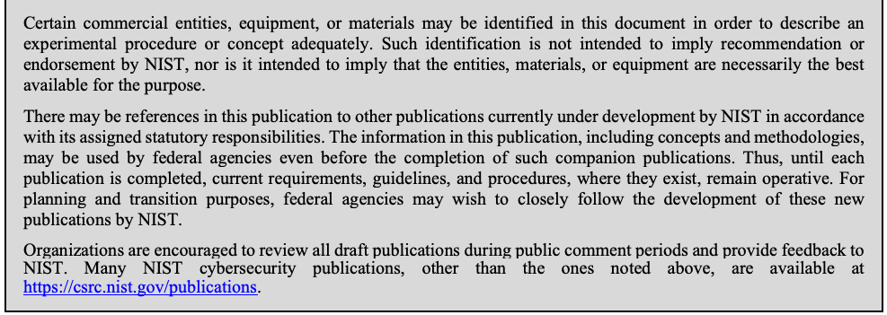
Comments on this publication may be submitted to: National Institute of Standards and Technology Attn: Advanced Network Technologies Division, Information Technology Laboratory 100 Bureau Drive (Mail Stop 8920) Gaithersburg, MD 20899-8920 Email: zerotrust-arch@nist.gov
本出版物に対するコメントは、以下に提出することができる：National Institute of Standards and Technology Attn: Advanced Network Technologies Division, Information Technology Laboratory 100 Bureau Drive (Mail Stop 8920) Gaithersburg, MD 20899-8920 Email: zerotrust-arch@nist.gov
All comments are subject to release under the Freedom of Information Act (FOIA).
すべてのコメントは、情報公開法（FOIA）に基づく公開の対象となる。
Reports on Computer Systems Technology
コンピュータシステム技術に関する報告書
The Information Technology Laboratory (ITL) at the National Institute of Standards and Technology (NIST) promotes the U.S. economy and public welfare by providing technical leadership for the Nation’s measurement and standards infrastructure. ITL develops tests, test methods, reference data, proof of concept implementations, and technical analyses to advance the development and productive use of information technology. ITL’s responsibilities include the development of management, administrative, technical, and physical standards and guidelines for the cost-effective security and privacy of other than national security-related information in federal information systems. The Special Publication 800-series reports on ITL’s research, guidelines, and outreach efforts in information system security, and its collaborative activities with industry, government, and academic organizations.
米国国立標準技術研究所（NIST）の情報技術研究所（ITL）は、国家の計測および標準の基盤に対して技術的リーダーシップを提供することにより、米国の経済と公共の福祉を促進している。ITLは、情報技術の開発と生産的な利用を前進させるために、試験、試験方法、参照データ、概念実証の実装、および技術分析を開発している。ITLの責務には、連邦情報システムにおける国家安全保障関連以外の情報について、費用対効果の高いセキュリティとプライバシーを実現するための、マネジメント面、管理面、技術面、および物理面の標準とガイドラインの策定が含まれる。Special Publication 800シリーズは、情報システムセキュリティにおけるITLの研究、ガイドライン、およびアウトリーチ活動、ならびに産業界、政府、および学術機関との共同活動について報告するものである。
Abstract
概要
Zero trust (ZT) is the term for an evolving set of cybersecurity paradigms that move defenses from static, network-based perimeters to focus on users, assets, and resources. A zero trust architecture (ZTA) uses zero trust principles to plan industrial and enterprise infrastructure and workflows. Zero trust assumes there is no implicit trust granted to assets or user accounts based solely on their physical or network location (i.e., local area networks versus the internet) or based on asset ownership (enterprise or personally owned). Authentication and authorization (both subject and device) are discrete functions performed before a session to an enterprise resource is established. Zero trust is a response to enterprise network trends that include remote users, bring your own device (BYOD), and cloud-based assets that are not located within an enterprise-owned network boundary. Zero trust focuses on protecting resources (assets, services, workflows, network accounts, etc.), not network segments, as the network location is no longer seen as the prime component to the security posture of the resource. This document contains an abstract definition of zero trust architecture (ZTA) and gives general deployment models and use cases where zero trust could improve an enterprise’s overall information technology security posture.
ゼロトラスト（ZT）とは、防御の対象を静的なネットワークベースの境界から、ユーザー、資産、およびリソースに焦点を当てたものへと移行させる、進化し続ける一連のサイバーセキュリティパラダイムを指す用語である。ゼロトラストアーキテクチャ（ZTA）は、ゼロトラストの原則を用いて、産業および企業のインフラストラクチャとワークフローを計画する。ゼロトラストは、資産またはユーザーアカウントに対して、その物理的な場所もしくはネットワーク上の場所（すなわち、ローカルエリアネットワークかインターネットか）のみに基づいて、または資産の所有形態（企業所有か個人所有か）に基づいて、暗黙の信頼が付与されることはないと想定する。認証と認可（サブジェクトとデバイスの双方）は、企業リソースへのセッションが確立される前に実行される個別の機能である。ゼロトラストは、リモートユーザー、私物デバイスの業務利用（BYOD）、および企業が所有するネットワーク境界内に位置しないクラウドベースの資産を含む、企業ネットワークの動向に対応するものである。ネットワーク上の場所はもはやリソースのセキュリティ態勢の主要な構成要素とは見なされないため、ゼロトラストはネットワークセグメントではなく、リソース（資産、サービス、ワークフロー、ネットワークアカウントなど）の保護に焦点を当てる。本文書は、ゼロトラストアーキテクチャ（ZTA）の抽象的な定義を含み、ゼロトラストによって企業の全体的な情報技術セキュリティ態勢を改善し得る一般的な導入モデルとユースケースを示す。
Keywords
キーワード
architecture; cybersecurity; enterprise; network security; zero trust.
アーキテクチャ; サイバーセキュリティ; エンタープライズ; ネットワークセキュリティ; ゼロトラスト。
Acknowledgments
謝辞
This document is the product of a collaboration between multiple federal agencies and is overseen by the Federal CIO Council. The architecture subgroup is responsible for development of this document, but there are specific individuals who deserve recognition. These include Greg Holden, project manager of the Federal CIO Council ZTA project; Alper Kerman, project manager for the NIST/National Cybersecurity Center of Excellence ZTA effort; and Douglas Montgomery.
本文書は、複数の連邦機関による協力の成果であり、連邦CIO評議会（Federal CIO Council）の監督を受けている。本文書の策定はアーキテクチャ・サブグループが担当しているが、特に功績を認めるべき個人がいる。これには、連邦CIO評議会ZTAプロジェクトのプロジェクトマネージャーであるGreg Holden、NIST/国家サイバーセキュリティ・センター・オブ・エクセレンス（National Cybersecurity Center of Excellence）のZTAの取り組みのプロジェクトマネージャーであるAlper Kerman、およびDouglas Montgomeryが含まれる。
Audience
対象読者
This document is intended to describe zero trust for enterprise security architects. It is meant to aid understanding of zero trust for civilian unclassified systems and provide a road map to migrate and deploy zero trust security concepts to an enterprise environment. Agency cybersecurity managers, network administrators, and managers may also gain insight into zero trust and ZTA from this document. It is not intended to be a single deployment plan for ZTA as an enterprise will have unique business use cases and data assets that require safeguards. Starting with a solid understanding of the organization’s business and data will result in a strong approach to zero trust.
本文書は、企業のセキュリティアーキテクトに向けてゼロトラストを説明することを目的としている。本文書は、文民（非軍事）の非機密システムにおけるゼロトラストの理解を助け、ゼロトラストのセキュリティ概念を企業環境に移行および導入するためのロードマップを提供することを意図している。機関のサイバーセキュリティ管理者、ネットワーク管理者、およびマネージャーも、本文書からゼロトラストおよびZTAに関する知見を得られる可能性がある。企業には、保護を必要とする固有のビジネスユースケースとデータ資産があるため、本文書はZTAの単一の導入計画となることを意図したものではない。組織のビジネスとデータをしっかりと理解することから始めることが、ゼロトラストへの強固なアプローチにつながる。
Trademark Information
商標情報
All registered trademarks or trademarks belong to their respective organizations.
すべての登録商標または商標は、それぞれの組織に帰属する。
Patent Disclosure Notice
特許開示に関する告知
NOTICE: The Information Technology Laboratory (ITL) has requested that holders of patent claims whose use may be required for compliance with the guidance or requirements of this publication disclose such patent claims to ITL. However, holders of patents are not obligated to respond to ITL calls for patents and ITL has not undertaken a patent search in order to identify which, if any, patents may apply to this publication.
告知：情報技術研究所（ITL）は、本出版物のガイダンスまたは要件への準拠のためにその使用が必要となる可能性のある特許クレームの保有者に対し、当該特許クレームをITLに開示するよう要請している。ただし、特許保有者にはITLによる特許の募集に応じる義務はなく、ITLは、本出版物に適用される可能性のある特許がもしあるとしてそれがどれであるかを特定するための特許調査を実施していない。
Following the ITL call for the identification of patent claims whose use may be required for compliance with the guidance or requirements of this publication, notice of one or more such claims has been received.
本出版物のガイダンスまたは要件への準拠に使用が必要となる可能性がある特許クレームの特定を求めるITLの呼びかけを受けて、1件以上のそのようなクレームに関する通知が受領されている。
By publication, no position is taken by ITL with respect to the validity or scope of any patent claim or of any rights in connection therewith. The known patent holder(s) has (have), however, provided to NIST a letter of assurance stating either (1) a general disclaimer to the effect that it does (they do) not hold and does (do) not currently intend holding any essential patent claim(s), or (2) that it (they) will negotiate royalty-free or royalty-bearing licenses with other parties on a demonstrably nondiscriminatory basis with reasonable terms and conditions.
本出版物の発行によって、ITLはいかなる特許クレームの有効性もしくは範囲、またはそれらに関連するいかなる権利に関しても、立場をとるものではない。ただし、判明している特許保有者は、(1) 必須特許クレームを保有しておらず、現時点で保有する意図もない旨の一般的な否認声明、または (2) 明らかに非差別的な基準に基づき、合理的な条件で、ロイヤルティフリーまたはロイヤルティ付きのライセンスについて他の当事者と交渉する旨のいずれかを記載した保証書をNISTに提出している。
Details may be obtained from zerotrust-arch@nist.gov.
詳細は zerotrust-arch@nist.gov から入手できる。
No representation is made or implied that this is the only license that may be required to avoid patent infringement in the use of this publication.
本出版物の使用において特許侵害を回避するために必要となる可能性のあるライセンスがこれだけであるという表明は、明示的にも黙示的にもなされていない。
Table of Contents
目次
1 Introduction — 1
1 はじめに — 1
1.1 History of Zero Trust Efforts Related to Federal Agencies — 2
1.1 連邦機関に関連するゼロトラストの取り組みの歴史 — 2
1.2 Structure of This Document — 2
1.2 本文書の構成 — 2
2 Zero Trust Basics — 4
2 ゼロトラストの基本 — 4
2.1 Tenets of Zero Trust — 6
2.1 ゼロトラストの原則 — 6
2.2 A Zero Trust View of a Network — 8
2.2 ネットワークに対するゼロトラストの視点 — 8
3 Logical Components of Zero Trust Architecture — 9
3 ゼロトラストアーキテクチャの論理コンポーネント — 9
3.1 Variations of Zero Trust Architecture Approaches — 11
3.1 ゼロトラストアーキテクチャアプローチのバリエーション — 11
3.1.1 ZTA Using Enhanced Identity Governance — 11
3.1.1 強化されたアイデンティティガバナンスを使用したZTA — 11
3.1.2 ZTA Using Micro-Segmentation — 12
3.1.2 マイクロセグメンテーションを使用したZTA — 12
3.1.3 ZTA Using Network Infrastructure and Software Defined Perimeters — 12
3.1.3 ネットワークインフラストラクチャおよびSoftware Defined Perimeterを使用したZTA — 12
3.2 Deployed Variations of the Abstract Architecture — 13
3.2 抽象アーキテクチャの展開バリエーション — 13
3.2.1 Device Agent/Gateway-Based Deployment — 13
3.2.1 デバイスエージェント／ゲートウェイベースの展開 — 13
3.2.2 Enclave-Based Deployment — 14
3.2.2 エンクレーブベースの展開 — 14
3.2.3 Resource Portal-Based Deployment — 15
3.2.3 リソースポータルベースの展開 — 15
3.2.4 Device Application Sandboxing — 16
3.2.4 デバイスアプリケーションサンドボックス化 — 16
3.3 Trust Algorithm — 17
3.3 トラストアルゴリズム — 17
3.3.1 Trust Algorithm Variations — 19
3.3.1 トラストアルゴリズムのバリエーション — 19
3.4 Network/Environment Components — 21
3.4 ネットワーク／環境コンポーネント — 21
3.4.1 Network Requirements to Support ZTA — 21
3.4.1 ZTAをサポートするためのネットワーク要件 — 21
4 Deployment Scenarios/Use Cases — 23
4 導入シナリオ／ユースケース — 23
4.1 Enterprise with Satellite Facilities — 23
4.1 サテライト施設を持つエンタープライズ — 23
4.2 Multi-cloud/Cloud-to-Cloud Enterprise — 24
4.2 マルチクラウド／クラウド間エンタープライズ — 24
4.3 Enterprise with Contracted Services and/or Nonemployee Access — 25
4.3 委託サービスや非従業員アクセスを伴うエンタープライズ — 25
4.4 Collaboration Across Enterprise Boundaries — 26
4.4 エンタープライズ境界を越えたコラボレーション — 26
4.5 Enterprise with Public- or Customer-Facing Services — 27
4.5 パブリック向けまたは顧客向けサービスを持つエンタープライズ — 27
5 Threats Associated with Zero Trust Architecture — 28
5 ゼロトラストアーキテクチャに関連する脅威 — 28
5.1 Subversion of ZTA Decision Process — 28
5.1 ZTA決定プロセスの破壊工作 — 28
5.2 Denial-of-Service or Network Disruption — 28
5.2 サービス妨害またはネットワークの途絶 — 28
5.3 Stolen Credentials/Insider Threat — 29
5.3 認証情報の盗難／内部脅威 — 29
5.4 Visibility on the Network — 29
5.4 ネットワーク上の可視性 — 29
5.5 Storage of System and Network Information — 30
5.5 システムおよびネットワーク情報の保存 — 30
5.6 Reliance on Proprietary Data Formats or Solutions — 30
5.6 プロプライエタリなデータ形式またはソリューションへの依存 — 30
5.7 Use of Non-person Entities (NPE) in ZTA Administration — 30
5.7 ZTA管理における非人間エンティティ（NPE）の使用 — 30
6 Zero Trust Architecture and Possible Interactions with Existing Federal Guidance — 32
6 ゼロトラストアーキテクチャおよび既存の連邦ガイダンスとの想定される相互作用 — 32
6.1 ZTA and NIST Risk Management Framework — 32
6.1 ZTAとNISTリスクマネジメントフレームワーク — 32
6.2 Zero Trust and NIST Privacy Framework — 32
6.2 ゼロトラストとNISTプライバシーフレームワーク — 32
6.3 ZTA and Federal Identity, Credential, and Access Management Architecture — 33
6.3 ZTAと連邦アイデンティティ・資格情報・アクセス管理アーキテクチャ — 33
6.4 ZTA and Trusted Internet Connections 3.0 — 33
6.4 ZTAとTrusted Internet Connections 3.0 — 33
6.5 ZTA and EINSTEIN (NCPS – National Cybersecurity Protection System) — 34
6.5 ZTAとEINSTEIN（NCPS – 国家サイバーセキュリティ保護システム） — 34
6.6 ZTA and DHS Continuous Diagnostics and Mitigations (CDM) Program — 34
6.6 ZTAとDHS継続的診断および緩和（CDM）プログラム — 34
6.7 ZTA, Cloud Smart, and the Federal Data Strategy — 35
6.7 ZTA、Cloud Smart、および連邦データ戦略 — 35
7 Migrating to a Zero Trust Architecture — 36
7 ゼロトラストアーキテクチャへの移行 — 36
7.1 Pure Zero Trust Architecture — 36
7.1 完全なゼロトラストアーキテクチャ — 36
7.2 Hybrid ZTA and Perimeter-Based Architecture — 36
7.2 ハイブリッドZTAおよび境界型アーキテクチャ — 36
7.3 Steps to Introducing ZTA to a Perimeter-Based Architected Network — 37
7.3 境界型として設計されたネットワークへのZTA導入手順 — 37
7.3.1 Identify Actors on the Enterprise — 38
7.3.1 エンタープライズ上のアクターの特定 — 38
7.3.2 Identify Assets Owned by the Enterprise — 38
7.3.2 エンタープライズが所有する資産の特定 — 38
7.3.3 Identify Key Processes and Evaluate Risks Associated with Executing Process — 39
7.3.3 主要プロセスの特定およびプロセスの実行に伴うリスクの評価 — 39
7.3.4 Formulating Policies for the ZTA Candidate — 39
7.3.4 ZTA候補に対するポリシーの策定 — 39
7.3.5 Identifying Candidate Solutions — 40
7.3.5 候補ソリューションの特定 — 40
7.3.6 Initial Deployment and Monitoring — 40
7.3.6 初期導入と監視 — 40
7.3.7 Expanding the ZTA — 41
7.3.7 ZTAの拡張 — 41
References — 42
参考文献 — 42
List of Appendices
付録一覧
Appendix A— Acronyms — 45
付録A— 頭字語 — 45
Appendix B— Identified Gaps in the Current State-of-the-Art in ZTA — 46
付録B— ZTAにおける現在の最新技術で特定されたギャップ — 46
B.1 Technology Survey — 46
B.1 技術調査 — 46
B.2 Gaps that Prevent an Immediate Move to ZTA — 47
B.2 ZTAへの即時移行を阻むギャップ — 47
B.2.1 Lack of Common Terms for ZTA Design, Planning, and Procurement — 47
B.2.1 ZTAの設計・計画・調達に関する共通用語の欠如 — 47
B.2.2 Perception that ZTA Conflicts with Existing Federal Cybersecurity
B.2.2 ZTAが既存の連邦サイバーセキュリティと矛盾するという認識
Policies — 47
ポリシー — 47
B.3 Systemic Gaps that Impact ZTA — 47
B.3 ZTAに影響を与えるシステム的ギャップ — 47
B.3.3 Standardization of Interfaces Between Components — 47
B.3.3 コンポーネント間インターフェースの標準化 — 47
B.3.4 Emerging Standards that Address Overreliance on Proprietary APIs — 48
B.3.4 プロプライエタリなAPIへの過度な依存に対処する新しい標準 — 48
B.4 Knowledge Gaps in ZTA and Future Areas of Research — 48
B.4 ZTAにおける知識ギャップと今後の研究分野 — 48
B.4.5 Attacker Response to ZTA — 49
B.4.5 ZTAに対する攻撃者の反応 — 49
B.4.6 User Experience in a ZTA Environment — 49
B.4.6 ZTA環境におけるユーザーエクスペリエンス — 49
B.4.7 Resilience of ZTA to Enterprise and Network Disruption — 49
B.4.7 企業およびネットワークの途絶に対するZTAのレジリエンス — 49
B.5 References — 50
B.5 参考文献 — 50
List of Figures
図目次
Figure 1: Zero Trust Access — 5
図1: ゼロトラストアクセス — 5
Figure 2: Core Zero Trust Logical Components — 9
図2：ゼロトラストの主要な論理コンポーネント — 9
Figure 3: Device Agent/Gateway Model — 14
図3：デバイスエージェント／ゲートウェイモデル — 14
Figure 4: Enclave Gateway Model — 15
図4：エンクレーブゲートウェイモデル — 15
Figure 5: Resource Portal Model — 16
図5：リソースポータルモデル — 16
Figure 6: Application Sandboxes — 17
図6：アプリケーションサンドボックス — 17
Figure 7: Trust Algorithm Input — 18
図7：信頼アルゴリズムの入力 — 18
Figure 8: Enterprise with Remote Employees — 24
図8：リモート従業員を抱える企業 — 24
Figure 9: Multi-cloud Use Case — 24
図9：マルチクラウドのユースケース — 24
Figure 10: Enterprise with Nonemployee Access — 25
図10：非従業員アクセスを伴う企業 — 25
Figure 11: Cross-Enterprise Collaboration — 26
図11：企業間コラボレーション — 26
Figure 12: ZTA Deployment Cycle — 37
図12：ZTA導入サイクル — 37
List of Tables
表一覧
Table B-1: Summary of Identified Deployment Gaps — 46
表B-1：特定された導入ギャップの要約 — 46
1 Introduction
1 はじめに
A typical enterprise’s infrastructure has grown increasingly complex. A single enterprise may operate several internal networks, remote offices with their own local infrastructure, remote and/or mobile individuals, and cloud services. This complexity has outstripped legacy methods of perimeter-based network security as there is no single, easily identified perimeter for the enterprise. Perimeter-based network security has also been shown to be insufficient since once attackers breach the perimeter, further lateral movement is unhindered.
一般的な企業のインフラストラクチャはますます複雑化している。単一の企業が、複数の内部ネットワーク、独自のローカルインフラストラクチャを持つリモートオフィス、リモートおよび／またはモバイルの個人、ならびにクラウドサービスを運用していることもある。企業にとって単一で容易に特定できる境界が存在しないため、この複雑さは、境界型ネットワークセキュリティという従来の方式では対応しきれないものとなっている。また、攻撃者がいったん境界を突破すると、その先のラテラルムーブメント（横方向の移動）が妨げられないため、境界型ネットワークセキュリティは不十分であることも示されている。
This complex enterprise has led to the development of a new model for cybersecurity known as “zero trust” (ZT). A ZT approach is primarily focused on data and service protection but can and should be expanded to include all enterprise assets (devices, infrastructure components, applications, virtual and cloud components) and subjects (end users, applications and other non-human entities that request information from resources). Throughout this document, “subject” will be used unless the section relates directly to a human end user in which “user” will be specifically used instead of the more generic “subject.” Zero trust security models assume that an attacker is present in the environment and that an enterprise-owned environment is no different—or no more trustworthy—than any nonenterprise-owned environment. In this new paradigm, an enterprise must assume no implicit trust and continually analyze and evaluate the risks to its assets and business functions and then enact protections to mitigate these risks. In zero trust, these protections usually involve minimizing access to resources (such as data and compute resources and applications/services) to only those subjects and assets identified as needing access as well as continually authenticating and authorizing the identity and security posture of each access request.
このような複雑な企業の状況は、「ゼロトラスト」（ZT）として知られるサイバーセキュリティの新しいモデルの開発につながった。ZTアプローチは主にデータとサービスの保護に焦点を当てているが、企業のすべての資産（デバイス、インフラストラクチャコンポーネント、アプリケーション、仮想およびクラウドコンポーネント）ならびにサブジェクト（エンドユーザー、リソースに情報を要求するアプリケーションおよびその他の非人間エンティティ）を含むように拡張することが可能であり、また拡張すべきである。本書全体を通じて「サブジェクト」を使用するが、セクションが人間のエンドユーザーに直接関係する場合は、より汎用的な「サブジェクト」の代わりに「ユーザー」を明示的に使用する。ゼロトラストセキュリティモデルは、環境内に攻撃者が存在すること、および企業が所有する環境は企業が所有していない環境と何ら変わらない、すなわちそれ以上に信頼できるものではないことを前提とする。この新しいパラダイムでは、企業は暗黙の信頼が存在しないことを前提とし、自らの資産および業務機能に対するリスクを継続的に分析および評価したうえで、これらのリスクを軽減するための保護策を講じなければならない。ゼロトラストにおいて、これらの保護策には通常、リソース（データ、コンピュートリソース、アプリケーション／サービスなど）へのアクセスを、アクセスが必要であると特定されたサブジェクトおよび資産のみに最小限に抑えること、ならびに各アクセス要求のアイデンティティとセキュリティポスチャを継続的に認証および認可することが含まれる。
A zero trust architecture (ZTA) is an enterprise cybersecurity architecture that is based on zero trust principles and designed to prevent data breaches and limit internal lateral movement. This publication discusses ZTA, its logical components, possible deployment scenarios, and threats. It also presents a general road map for organizations wishing to migrate to a zero trust design approach and discusses relevant federal policies that may impact or influence a zero trust architecture.
ゼロトラストアーキテクチャ（ZTA）とは、ゼロトラストの原則に基づき、データ侵害を防止し、内部でのラテラルムーブメント（横方向の移動）を制限するように設計された企業のサイバーセキュリティアーキテクチャである。本書では、ZTA、その論理コンポーネント、考えられる導入シナリオ、および脅威について論じる。また、ゼロトラスト設計アプローチへの移行を希望する組織に向けた一般的なロードマップを提示し、ゼロトラストアーキテクチャに影響を与える、またはそれを左右する可能性のある関連する連邦政策についても論じる。
ZT is not a single architecture but a set of guiding principles for workflow, system design and operations that can be used to improve the security posture of any classification or sensitivity level [FIPS199]. Transitioning to ZTA is a journey concerning how an organization evaluates risk in its mission and cannot simply be accomplished with a wholesale replacement of technology. That said, many organizations already have elements of a ZTA in their enterprise infrastructure today. Organizations should seek to incrementally implement zero trust principles, process changes, and technology solutions that protect their data assets and business functions by use case. Most enterprise infrastructures will operate in a hybrid zero trust/perimeter-based mode while continuing to invest in IT modernization initiatives and improve organization business processes.
ZTは単一のアーキテクチャではなく、ワークフロー、システム設計、および運用のための指針となる原則の集合であり、あらゆる分類または機密性レベルのセキュリティポスチャを向上させるために利用できる[FIPS199]。ZTAへの移行は、組織がそのミッションにおいてリスクをどのように評価するかに関わる道のりであり、テクノロジーを全面的に入れ替えるだけで達成できるものではない。とはいえ、多くの組織は、今日すでに自らの企業インフラストラクチャ内にZTAの要素を有している。組織は、データ資産および業務機能を保護するゼロトラストの原則、プロセスの変更、およびテクノロジーソリューションを、ユースケースごとに段階的に実装することを目指すべきである。大半の企業インフラストラクチャは、IT近代化イニシアチブへの投資を継続し、組織のビジネスプロセスを改善しながら、ゼロトラストと境界型を組み合わせたハイブリッドモードで運用されることになる。
Organizations need to implement comprehensive information security and resiliency practices for zero trust to be effective. When balanced with existing cybersecurity policies and guidance, identity and access management, continuous monitoring, and best practices, a ZTA can protect against common threats and improve an organization’s security posture by using a managed risk approach.
ゼロトラストを効果的なものにするには、組織は包括的な情報セキュリティとレジリエンスの実践策を実施する必要がある。既存のサイバーセキュリティポリシーやガイダンス、アイデンティティおよびアクセス管理、継続的モニタリング、ならびにベストプラクティスと適切に調和させることで、ZTAは一般的な脅威から防御し、管理されたリスクアプローチを用いて組織のセキュリティポスチャを向上させることができる。
1.1 History of Zero Trust Efforts Related to Federal Agencies
1.1 連邦政府機関に関連するゼロトラストの取り組みの歴史
The concept of zero trust has been present in cybersecurity since before the term “zero trust” was coined. The Defense Information Systems Agency (DISA) and the Department of Defense published their work on a more secure enterprise strategy dubbed “black core” [BCORE]. Black core involved moving from a perimeter-based security model to one that focused on the security of individual transactions. The work of the Jericho Forum in 2004 publicized the idea of de-perimeterization—limiting implicit trust based on network location and the limitations of relying on single, static defenses over a large network segment [JERICHO]. The concepts of de-perimeterization evolved and improved into the larger concept of zero trust, which was later coined by John Kindervag1 while at Forrester.2 Zero trust then became the term used to describe various cybersecurity solutions that moved security away from implied trust based on network location and instead focused on evaluating trust on a per-transaction basis. Both private industry and higher education have also undergone this evolution from perimeter-based security to a security strategy based on zero trust principles.
ゼロトラストという概念は、「ゼロトラスト」という用語が生み出される前からサイバーセキュリティに存在していた。国防情報システム局（DISA）と国防総省は、「ブラックコア」と呼ばれる、より安全な企業戦略に関する成果を公表した[BCORE]。ブラックコアは、境界型セキュリティモデルから、個々のトランザクションのセキュリティに焦点を当てたモデルへの移行を伴うものであった。2004年のJericho Forumの活動により、脱境界化（ネットワーク上の位置に基づく暗黙の信頼を制限すること、および大規模なネットワークセグメントに対して単一の静的な防御に依存することの限界）という考え方が広く知られるようになった[JERICHO]。脱境界化の概念は、より大きなゼロトラストの概念へと進化および改良され、この用語は後にForrester在籍時のJohn Kindervag1によって作られた。2その後、ゼロトラストは、ネットワーク上の位置に基づく暗黙の信頼からセキュリティを脱却させ、代わりにトランザクションごとに信頼を評価することに焦点を当てた様々なサイバーセキュリティソリューションを表す用語となった。民間産業と高等教育機関の双方もまた、境界型セキュリティからゼロトラストの原則に基づくセキュリティ戦略へのこの進化を遂げてきた。
Federal agencies have been urged to move to security based on zero trust principles for more than a decade, building capabilities and policies such as the Federal Information Security Modernization Act (FISMA) followed by the Risk Management Framework (RMF); Federal Identity, Credential, and Access Management (FICAM); Trusted Internet Connections (TIC); and Continuous Diagnostics and Mitigation (CDM) programs. All of these programs aim to restrict data and resource access to authorized parties. When these programs were started, they were limited by the technical capabilities of information systems. Security policies were largely static and were enforced at large “choke points” that an enterprise could control to get the largest effect for the effort. As technology matures, it is becoming possible to continually analyze and evaluate access requests in a dynamic and granular fashion to a “need to access” basis to mitigate data exposure due to compromised accounts, attackers monitoring a network, and other threats.
連邦政府機関は、10年以上にわたりゼロトラストの原則に基づくセキュリティへの移行を促されてきており、連邦情報セキュリティ近代化法（FISMA）とそれに続くリスクマネジメントフレームワーク（RMF）、連邦アイデンティティ・資格情報・アクセス管理（FICAM）、トラステッドインターネット接続（TIC）、ならびに継続的診断・緩和（CDM）プログラムといった機能やポリシーを構築してきた。これらのプログラムはすべて、データおよびリソースへのアクセスを認可された当事者に制限することを目的としている。これらのプログラムが開始された当時、それらは情報システムの技術的な能力による制約を受けていた。セキュリティポリシーはおおむね静的であり、労力に対して最大の効果を得るために企業が制御できる大規模な「チョークポイント」において適用されていた。技術が成熟するにつれて、侵害されたアカウント、ネットワークを監視する攻撃者、その他の脅威によるデータの露出を緩和するために、アクセス要求を動的かつきめ細かな方法で「アクセスの必要性（need to access）」に基づいて継続的に分析および評価することが可能になりつつある。
1.2 Structure of This Document
1.2 本書の構成
The rest of the document is organized as follows:
本書の以降の構成は以下の通りである。
•Section 2 defines ZT and ZTA and lists some assumptions when designing a ZTA for an enterprise. This section also includes a list of the tenets of ZT design.
•セクション2では、ZTおよびZTAを定義し、企業向けのZTAを設計する際のいくつかの前提を列挙する。このセクションには、ZT設計の基本原則のリストも含まれる。
•Section 3 documents the logical components, or building blocks, of ZT. It is possible that unique implementations compose ZTA components differently yet serve the same logical functionality.
•セクション3では、ZTの論理コンポーネント、すなわち構成要素を記述する。個々の実装がZTAコンポーネントを異なる形で構成しつつ、同じ論理機能を果たすこともあり得る。
•Section 4 lists some possible use cases where a ZTA may make enterprise environments more secure and less prone to successful exploitation. These include enterprises with remote employees, cloud services, and guest networks.
•セクション4では、ZTAによって企業の環境をより安全にし、悪用が成功しにくくなる可能性のあるユースケースをいくつか挙げる。これらには、リモート従業員、クラウドサービス、およびゲストネットワークを持つ企業が含まれる。
•Section 5 discusses threats to an enterprise using a ZTA. Many of these threats are similar to any architected networks but may require different mitigation techniques.
•セクション5では、ZTAを使用する企業に対する脅威について論じる。これらの脅威の多くは、アーキテクチャ設計されたあらゆるネットワークに対する脅威と同様であるが、異なる緩和技術を必要とする場合がある。
•Section 6 discusses how ZTA tenets fit into and/or complement existing guidance for federal agencies.
•セクション6では、ZTAの基本原則が連邦政府機関向けの既存のガイダンスにどのように適合し、および／またはそれを補完するかについて論じる。
•Section 7 presents the starting point for transitioning an enterprise (such as a federal agency) to a ZTA. This includes a description of the general steps needed to plan and deploy applications and enterprise infrastructure that are guided by ZT tenets.
•セクション7では、企業（連邦政府機関など）をZTAへ移行するための出発点を示す。これには、ZTの基本原則に導かれたアプリケーションおよび企業インフラストラクチャを計画し導入するために必要な一般的な手順の説明が含まれる。
2 Zero Trust Basics
2 ゼロトラストの基本
Zero trust is a cybersecurity paradigm focused on resource protection and the premise that trust is never granted implicitly but must be continually evaluated. Zero trust architecture is an end-to-end approach to enterprise resource and data security that encompasses identity (person and non-person entities), credentials, access management, operations, endpoints, hosting environments, and the interconnecting infrastructure. The initial focus should be on restricting resources to those with a need to access and grant only the minimum privileges (e.g., read, write, delete) needed to perform the mission. Traditionally, agencies (and enterprise networks in general) have focused on perimeter defense and authenticated subjects are given authorized access to a broad collection of resources once on the internal network. As a result, unauthorized lateral movement within the environment has been one of the biggest challenges for federal agencies.
ゼロトラストとは、リソースの保護、および信頼は決して暗黙的に付与されるものではなく継続的に評価されなければならないという前提に焦点を当てたサイバーセキュリティのパラダイムである。ゼロトラストアーキテクチャは、アイデンティティ（人間および非人間のエンティティ）、認証情報、アクセス管理、運用、エンドポイント、ホスティング環境、および相互接続インフラストラクチャを網羅する、企業のリソースおよびデータのセキュリティに対するエンドツーエンドのアプローチである。最初の焦点は、リソースをアクセスの必要がある者に制限し、ミッションを遂行するために必要な最小限の特権（例：読み取り、書き込み、削除）のみを付与することに置くべきである。従来、政府機関（および企業ネットワーク一般）は境界防御に焦点を当てており、認証されたサブジェクトは、いったん内部ネットワークに入ると広範なリソース群への認可されたアクセスを与えられる。その結果、環境内での不正なラテラルムーブメント（横方向の移動）は、連邦政府機関にとって最大の課題の1つとなってきた。
The Trusted Internet Connections (TIC) and agency perimeter firewalls provide strong internet gateways. This helps block attackers from the internet, but the TICs and perimeter firewalls are less useful for detecting and blocking attacks from inside the network and cannot protect subjects outside of the enterprise perimeter (e.g., remote workers, cloud-based services, edge devices, etc.).
トラステッドインターネット接続（TIC）および政府機関の境界ファイアウォールは、強力なインターネットゲートウェイを提供する。これはインターネットからの攻撃者をブロックするのに役立つが、TICおよび境界ファイアウォールは、ネットワーク内部からの攻撃の検知およびブロックにはあまり役に立たず、企業の境界の外にあるサブジェクト（例：リモートワーカー、クラウドベースのサービス、エッジデバイスなど）を保護することはできない。
An operative definition of zero trust and zero trust architecture is as follows:
ゼロトラストおよびゼロトラストアーキテクチャの運用上の定義は以下のとおりである。
Zero trust (ZT) provides a collection of concepts and ideas designed to minimize uncertainty in enforcing accurate, least privilege per-request access decisions in information systems and services in the face of a network viewed as compromised. Zero trust architecture (ZTA) is an enterprise’s cybersecurity plan that utilizes zero trust concepts and encompasses component relationships, workflow planning, and access policies. Therefore, a zero trust enterprise is the network infrastructure (physical and virtual) and operational policies that are in place for an enterprise as a product of a zero trust architecture plan.
ゼロトラスト（ZT）は、侵害されていると見なされるネットワークに直面する中で、情報システムおよびサービスにおいて、正確で最小特権の要求ごとのアクセス決定を実施する際の不確実性を最小限に抑えるように設計された概念およびアイデアの集合を提供する。ゼロトラストアーキテクチャ（ZTA）は、ゼロトラストの概念を利用し、コンポーネントの関係、ワークフロー計画、およびアクセスポリシーを包含する、企業のサイバーセキュリティ計画である。したがって、ゼロトラスト企業とは、ゼロトラストアーキテクチャ計画の成果として企業に導入されているネットワークインフラストラクチャ（物理および仮想）ならびに運用ポリシーである。
An enterprise decides to adopt zero trust as its core strategy and generate a zero trust architecture as a plan developed with zero trust principles (see Section 2.1 below) in mind. This plan is then deployed to produce a zero trust environment for use in the enterprise.
企業は、ゼロトラストを中核戦略として採用し、ゼロトラストの原則（以下のセクション2.1を参照）を念頭に置いて策定された計画としてゼロトラストアーキテクチャを作成することを決定する。その後、この計画が展開され、企業で使用するためのゼロトラスト環境が構築される。
This definition focuses on the crux of the issue, which is the goal to prevent unauthorized access to data and services coupled with making the access control enforcement as granular as possible. That is, authorized and approved subjects (combination of user, application (or service), and device) can access the data to the exclusion of all other subjects (i.e., attackers). To take this one step further, the word “resource” can be substituted for “data” so that ZT and ZTA are about resource access (e.g., printers, compute resources, Internet of Things [IoT] actuators) and not just data access.
この定義は問題の核心に焦点を当てており、それはデータおよびサービスへの不正アクセスを防止するという目標と、アクセス制御の実施を可能な限りきめ細かくすることの組み合わせである。すなわち、認可および承認されたサブジェクト（ユーザー、アプリケーション（またはサービス）、およびデバイスの組み合わせ）は、他のすべてのサブジェクト（すなわち攻撃者）を排除してデータにアクセスできる。これをさらに一歩進めると、「データ」という言葉を「リソース」に置き換えることができ、ZTおよびZTAは単なるデータアクセスではなく、リソースアクセス（例：プリンター、コンピュートリソース、Internet of Things [IoT] アクチュエータ）に関するものとなる。
To lessen uncertainties (as they cannot be eliminated), the focus is on authentication, authorization, and shrinking implicit trust zones while maintaining availability and minimizing temporal delays in authentication mechanisms. Access rules are made as granular as possible to enforce least privileges needed to perform the action in the request.
不確実性を軽減するために（不確実性を排除することはできないため）、可用性を維持し認証メカニズムにおける時間的遅延を最小限に抑えながら、認証、認可、および暗黙的な信頼ゾーンの縮小に焦点が置かれる。アクセスルールは、要求されたアクションを実行するために必要な最小特権を適用するために、可能な限りきめ細かく作成される。
In the abstract model of access shown in Figure 1, a subject needs access to an enterprise resource. Access is granted through a policy decision point (PDP) and corresponding policy enforcement point (PEP).3
図1に示すアクセスの抽象モデルでは、サブジェクトがエンタープライズリソースへのアクセスを必要としている。アクセスは、ポリシー決定ポイント（PDP）および対応するポリシー実施ポイント（PEP）を通じて許可される。3
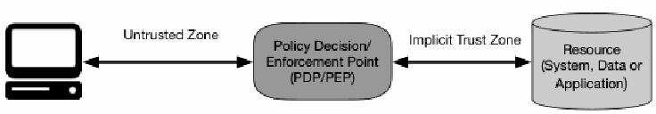
図1：ゼロトラストアクセス。左のコンピュータが、Untrusted Zone（信頼されていないゾーン）と記された両方向の矢印で、中央の角丸の箱「ポリシー決定／実施ポイント（PDP/PEP）」とつながる。PDP/PEP は、Implicit Trust Zone（暗黙の信頼ゾーン）と記された両方向の矢印で、右の円柱「リソース（システム、データまたはアプリケーション）」とつながる。
Figure 1: Zero Trust Access
図1：ゼロトラストアクセス
The system must ensure that the subject is authentic and the request is valid. The PDP/PEP passes proper judgment to allow the subject to access the resource. This implies that zero trust applies to two basic areas: authentication and authorization. What is the level of confidence about the subject’s identity for this unique request? Is access to the resource allowable given the level of confidence in the subject’s identity? Does the device used for the request have the proper security posture? Are there other factors that should be considered and that change the confidence level (e.g., time, location of subject, subject’s security posture)? Overall, enterprises need to develop and maintain dynamic risk-based policies for resource access and set up a system to ensure that these policies are enforced correctly and consistently for individual resource access requests. This means that an enterprise should not rely on implied trustworthiness wherein if the subject has met a base authentication level (e.g., logging into an asset), all subsequent resource requests are assumed to be equally valid.
システムは、サブジェクトが本物であり、リクエストが有効であることを確実にしなければならない。PDP/PEPは適切な判断を下し、サブジェクトによるリソースへのアクセスを許可する。これは、ゼロトラストが認証と認可という2つの基本的な領域に適用されることを意味する。この固有のリクエストに対するサブジェクトのアイデンティティについての確信度レベルはどの程度か。サブジェクトのアイデンティティについての確信度レベルを踏まえて、リソースへのアクセスは許容可能か。リクエストに使用されたデバイスは適切なセキュリティポスチャを備えているか。考慮すべきであり、かつ確信度レベルを変化させる他の要因（例：時間、サブジェクトの場所、サブジェクトのセキュリティポスチャ）はあるか。全体として、エンタープライズは、リソースアクセスのための動的なリスクベースのポリシーを策定および維持し、個々のリソースアクセスリクエストに対してこれらのポリシーが正確かつ一貫して実施されることを確実にするシステムを構築する必要がある。これは、サブジェクトが基本的な認証レベルを満たしていれば（例：アセットへのログイン）、その後のすべてのリソースリクエストが同等に有効であると想定されるような、暗黙の信頼性にエンタープライズが依拠すべきではないことを意味する。
The “implicit trust zone” represents an area where all the entities are trusted to at least the level of the last PDP/PEP gateway. For example, consider the passenger screening model in an airport. All passengers pass through the airport security checkpoint (PDP/PEP) to access the boarding gates. The passengers, airport employees, aircraft crew, etc., mill about in the terminal area, and all the individuals are considered trusted. In this model, the implicit trust zone is the boarding area.
「暗黙の信頼ゾーン」は、すべてのエンティティが少なくとも最後のPDP/PEPゲートウェイのレベルまで信頼されているエリアを表す。たとえば、空港での旅客スクリーニングモデルを考えてみる。すべての乗客は、搭乗ゲートにアクセスするために空港の保安検査場（PDP/PEP）を通過する。乗客、空港職員、航空機乗務員などがターミナルエリア内を行き交い、すべての個人が信頼されているとみなされる。このモデルでは、暗黙の信頼ゾーンは搭乗エリアである。
The PDP/PEP applies a set of controls so that all traffic beyond the PEP has a common level of trust. The PDP/PEP cannot apply additional policies beyond its location in the flow of traffic. To allow the PDP/PEP to be as specific as possible, the implicit trust zone must be as small as possible.
PDP/PEPは一連の管理策を適用し、PEPの先にあるすべてのトラフィックが共通の信頼レベルを持つようにする。PDP/PEPは、トラフィックフローにおける自身の位置より先では追加のポリシーを適用することができない。PDP/PEPを可能な限り具体的に機能させるには、暗黙の信頼ゾーンを可能な限り小さくしなければならない。
Zero trust provides a set of principles and concepts around moving the PDP/PEPs closer to the resource. The idea is to explicitly authenticate and authorize all subjects, assets and workflows that make up the enterprise.
ゼロトラストは、PDP/PEPをリソースの近くに移動させることに関する一連の原則と概念を提供する。その考え方は、エンタープライズを構成するすべてのサブジェクト、アセット、およびワークフローを明示的に認証および認可することである。
2.1 Tenets of Zero Trust
2.1 ゼロトラストの原則
Many definitions and discussions of ZT stress the concept of removing wide-area perimeter defenses (e.g., enterprise firewalls) as a factor. However, most of these definitions continue to define themselves in relation to perimeters in some way (such as micro-segmentation or micro-perimeters; see Section 3.1) as part of the functional capabilities of a ZTA. The following is an attempt to define ZT and ZTA in terms of basic tenets that should be involved rather than what is excluded. These tenets are the ideal goal, though it must be acknowledged that not all tenets may be fully implemented in their purest form for a given strategy.
ZTに関する多くの定義や議論では、広域境界防御（例：エンタープライズファイアウォール）を要素から取り除くという概念が強調されている。しかし、これらの定義の大部分は、ZTAの機能的能力の一部として、何らかの形で境界に関連付けて自らを定義し続けている（マイクロセグメンテーションやマイクロ境界など。セクション3.1を参照）。以下は、何が除外されるかではなく、関与すべき基本原則の観点からZTおよびZTAを定義する試みである。これらの原則は理想的な目標であるが、特定の戦略においては、すべての原則が最も純粋な形で完全に実装されるとは限らないことを認識しなければならない。
A zero trust architecture is designed and deployed with adherence to the following zero trust basic tenets:
ゼロトラストアーキテクチャは、以下のゼロトラストの基本原則に準拠して設計および配備される。
1.All data sources and computing services are considered resources. A network may be composed of multiple classes of devices. A network may also have small footprint devices that send data to aggregators/storage, software as a service (SaaS), systems sending instructions to actuators, and other functions. Also, an enterprise may decide to classify personally owned devices as resources if they can access enterprise-owned resources.
1.すべてのデータソースおよびコンピューティングサービスはリソースと見なされる。ネットワークは、複数のクラスのデバイスで構成される場合がある。ネットワークはまた、アグリゲーター／ストレージにデータを送信するスモールフットプリントデバイス、SaaS（Software as a Service）、アクチュエーターに指示を送信するシステム、その他の機能を備えている場合もある。また、エンタープライズは、個人所有のデバイスがエンタープライズ所有のリソースにアクセスできる場合、それらをリソースとして分類すると決定する場合がある。
2.All communication is secured regardless of network location. Network location alone does not imply trust. Access requests from assets located on enterprise-owned network infrastructure (e.g., inside a legacy network perimeter) must meet the same security requirements as access requests and communication from any other nonenterprise-owned network. In other words, trust should not be automatically granted based on the device being on enterprise network infrastructure. All communication should be done in the most secure manner available, protect confidentiality and integrity, and provide source authentication.
2.ネットワークの場所に関係なく、すべての通信が保護される。ネットワークの場所だけでは、信頼を意味しない。エンタープライズ所有のネットワークインフラストラクチャ上にあるアセット（例：従来のネットワーク境界内）からのアクセスリクエストは、その他の非エンタープライズ所有ネットワークからのアクセスリクエストおよび通信と同じセキュリティ要件を満たさなければならない。言い換えれば、デバイスがエンタープライズのネットワークインフラストラクチャ上にあることに基づいて信頼が自動的に付与されるべきではない。すべての通信は、利用可能な最も安全な方法で行われ、機密性と完全性を保護し、送信元認証を提供すべきである。
3.Access to individual enterprise resources is granted on a per-session basis. Trust in the requester is evaluated before the access is granted. Access should also be granted with the least privileges needed to complete the task. This could mean only “sometime recently” for this particular transaction and may not occur directly before initiating a session or performing a transaction with a resource. However, authentication and authorization to one resource will not automatically grant access to a different resource.
3.個々のエンタープライズリソースへのアクセスはセッションごとに付与される。リクエスト元に対する信頼は、アクセスが付与される前に評価される。また、アクセスはタスクを完了するために必要な最小限の特権で付与されるべきである。これは、この特定のトランザクションに対して「最近のいつか」のみを意味する場合があり、セッションを開始する直前やリソースとのトランザクションを実行する直前には行われない可能性がある。ただし、あるリソースに対する認証および認可によって、別のリソースへのアクセスが自動的に付与されることはない。
4.Access to resources is determined by dynamic policy—including the observable state of client identity, application/service, and the requesting asset—and may include other behavioral and environmental attributes. An organization protects resources by defining what resources it has, who its members are (or ability to authenticate users from a federated community), and what access to resources those members need. For zero trust, client identity can include the user account (or service identity) and any associated attributes assigned by the enterprise to that account or artifacts to authenticate automated tasks. Requesting asset state can include device characteristics such as software versions installed, network location, time/date of request, previously observed behavior, and installed credentials. Behavioral attributes include, but not limited to, automated subject analytics, device analytics, and measured deviations from observed usage patterns. Policy is the set of access rules based on attributes that an organization assigns to a subject, data asset, or application. Environmental attributes may include such factors as requestor network location, time, reported active attacks, etc. These rules and attributes are based on the needs of the business process and acceptable level of risk. Resource access and action permission policies can vary based on the sensitivity of the resource/data. Least privilege principles are applied to restrict both visibility and accessibility.
4.リソースへのアクセスは動的なポリシーによって決定される—これには、クライアントのアイデンティティ、アプリケーション／サービス、およびリクエスト元アセットの観測可能な状態が含まれ—その他の行動属性および環境属性が含まれる場合もある。組織は、自らが保有するリソース、そのメンバーが誰であるか（またはフェデレーションコミュニティのユーザーを認証する能力）、およびそれらのメンバーが必要とするリソースへのアクセスを定義することによってリソースを保護する。ゼロトラストにおいて、クライアントのアイデンティティには、ユーザーアカウント（またはサービスアイデンティティ）と、そのアカウントに対してエンタープライズが割り当てた関連属性、あるいは自動化されたタスクを認証するためのアーティファクトを含めることができる。リクエスト元アセットの状態には、インストールされているソフトウェアのバージョン、ネットワークの場所、リクエストの日時、過去に観測された振る舞い、インストールされている認証情報などのデバイス特性を含めることができる。行動属性には、自動化されたサブジェクト分析、デバイス分析、および観測された利用パターンからの測定された逸脱が含まれるが、これらに限定されない。ポリシーとは、組織がサブジェクト、データアセット、またはアプリケーションに割り当てる属性に基づくアクセスルールの集合である。環境属性には、リクエスト元のネットワークの場所、時刻、報告されたアクティブな攻撃などの要因が含まれる場合がある。これらのルールと属性は、ビジネスプロセスのニーズと許容可能なリスクレベルに基づいている。リソースへのアクセスおよびアクションの許可ポリシーは、リソース／データの機微度に基づいて異なる場合がある。可視性とアクセス可能性の双方を制限するために、最小特権の原則が適用される。
5.The enterprise monitors and measures the integrity and security posture of all owned and associated assets. No asset is inherently trusted. The enterprise evaluates the security posture of the asset when evaluating a resource request. An enterprise implementing a ZTA should establish a continuous diagnostics and mitigation (CDM) or similar system to monitor the state of devices and applications and should apply patches/fixes as needed. Assets that are discovered to be subverted, have known vulnerabilities, and/or are not managed by the enterprise may be treated differently (including denial of all connections to enterprise resources) than devices owned by or associated with the enterprise that are deemed to be in their most secure state. This may also apply to associated devices (e.g., personally owned devices) that may be allowed to access some resources but not others. This, too, requires a robust monitoring and reporting system in place to provide actionable data about the current state of enterprise resources.
5.エンタープライズは、所有するアセットおよび関連するアセットすべての完全性とセキュリティポスチャを監視および測定する。いかなるアセットも本質的に信頼されることはない。エンタープライズは、リソースリクエストを評価する際に、アセットのセキュリティポスチャを評価する。ZTAを実装するエンタープライズは、デバイスおよびアプリケーションの状態を監視するために継続的診断および緩和（CDM）または同様のシステムを確立すべきであり、必要に応じてパッチ／修正を適用すべきである。侵害されていることが判明したアセット、既知の脆弱性を持つアセット、および／またはエンタープライズによって管理されていないアセットは、最も安全な状態にあると見なされるエンタープライズ所有のデバイスまたはエンタープライズに関連するデバイスとは異なって扱われる（エンタープライズリソースへのすべての接続の拒否を含む）場合がある。これは、一部のリソースへのアクセスは許可されるが他のリソースへのアクセスは許可されない可能性がある関連デバイス（例：個人所有のデバイス）にも適用される場合がある。これにも、エンタープライズリソースの現在の状態に関する実用的なデータを提供するための堅牢な監視およびレポーティングシステムが導入されている必要がある。
6.All resource authentication and authorization are dynamic and strictly enforced before access is allowed. This is a constant cycle of obtaining access, scanning and assessing threats, adapting, and continually reevaluating trust in ongoing communication. An enterprise implementing a ZTA would be expected to have Identity, Credential, and Access Management (ICAM) and asset management systems in place. This includes the use of multifactor authentication (MFA) for access to some or all enterprise resources. Continual monitoring with possible reauthentication and reauthorization occurs throughout user transactions, as defined and enforced by policy (e.g., time-based, new resource requested, resource modification, anomalous subject activity detected) that strives to achieve a balance of security, availability, usability, and cost-efficiency.
6.すべてのリソースの認証および認可は動的であり、アクセスが許可される前に厳格に実施される。これは、アクセスの取得、脅威のスキャンと評価、適応、および進行中の通信における信頼の継続的な再評価という不断のサイクルである。ZTAを実装するエンタープライズには、アイデンティティ・クレデンシャル・アクセス管理（ICAM）およびアセット管理システムが導入されていることが期待される。これには、一部またはすべてのエンタープライズリソースへのアクセスに対する多要素認証（MFA）の使用が含まれる。セキュリティ、可用性、ユーザビリティ、および費用効率のバランスの達成を目指すポリシー（例：時間ベース、新しいリソースのリクエスト、リソースの変更、異常なサブジェクトアクティビティの検出）による定義および実施に従い、ユーザートランザクション全体を通じて、再認証および再認可の可能性を伴う継続的な監視が行われる。
7.The enterprise collects as much information as possible about the current state of assets, network infrastructure and communications and uses it to improve its security posture. An enterprise should collect data about asset security posture, network traffic and access requests, process that data, and use any insight gained to improve policy creation and enforcement. This data can also be used to provide context for access requests from subjects (see Section 3.3.1).
7.エンタープライズは、アセット、ネットワークインフラストラクチャ、および通信の現在の状態について可能な限り多くの情報を収集し、それを自らのセキュリティポスチャの改善に使用する。エンタープライズは、アセットのセキュリティポスチャ、ネットワークトラフィック、およびアクセスリクエストに関するデータを収集し、そのデータを処理し、得られたあらゆる知見を活用してポリシーの策定と実施を改善すべきである。このデータは、サブジェクトからのアクセスリクエストにコンテキストを提供するためにも使用できる（セクション3.3.1を参照）。
The above tenets attempt to be technology agnostic. For example, “user identification (ID)” could include several factors such as username/password, certificates, and onetime password. These tenets apply to work done within an organization or in collaboration with one or more partner organizations and not to anonymous public or consumer-facing business processes. An organization cannot impose internal policies on external actors (e.g., customers or general internet users) but may be able to implement some ZT-based policies on nonenterprise users who have a special relationship with the organization (e.g. registered customers, employee dependents, etc.).
上記の原則は、特定の技術に依存しないものとなるよう試みている。例えば、「ユーザー識別（ID）」には、ユーザー名／パスワード、証明書、ワンタイムパスワードなどの複数の要素を含めることができる。これらの原則は、組織内で、または1つ以上のパートナー組織と共同で行われる業務に適用され、匿名の一般向けまたは消費者向けのビジネスプロセスには適用されない。組織は、外部のアクター（例：顧客や一般のインターネットユーザー）に対して内部ポリシーを課すことはできないが、組織と特別な関係を持つ非エンタープライズユーザー（例：登録顧客、従業員の扶養家族など）に対しては、一部のZTベースのポリシーを実装できる場合がある。
2.2 A Zero Trust View of a Network
2.2 ゼロトラストの観点から見たネットワーク
There are some basic assumptions for network connectivity for any organization that utilizes ZTA in network planning and deployment. Some of these assumptions apply to enterprise-owned network infrastructure, and some apply to enterprise-owned resources operating on nonenterprise-owned network infrastructure (e.g., public Wi-Fi or public cloud providers). These assumptions are used to direct the formation of a ZTA. The network in an enterprise implementing a ZTA should be developed with the ZTA tenets outlined above and with the following assumptions.
ネットワークの計画および展開においてZTAを活用するすべての組織に対して、ネットワーク接続に関するいくつかの基本的な前提事項が存在する。これらの前提事項の中には、エンタープライズが所有するネットワークインフラストラクチャに適用されるものもあれば、非エンタープライズ所有のネットワークインフラストラクチャ（例：公衆Wi-Fiやパブリッククラウドプロバイダー）上で動作するエンタープライズ所有のリソースに適用されるものもある。これらの前提事項は、ZTAの形成を方向付けるために使用される。ZTAを実装するエンタープライズにおけるネットワークは、前述のZTAの原則および以下の前提事項に基づいて構築されるべきである。
1.The entire enterprise private network is not considered an implicit trust zone. Assets should always act as if an attacker is present on the enterprise network, and communication should be done in the most secure manner available (see tenet 2 above). This entails actions such as authenticating all connections and encrypting all traffic.
1.エンタープライズのプライベートネットワーク全体は、暗黙の信頼ゾーンとは見なされない。アセットは、常にエンタープライズネットワーク上に攻撃者が存在するかのように振る舞うべきであり、通信は利用可能な最も安全な方法で行われるべきである（上記の原則2を参照）。これには、すべての接続の認証やすべてのトラフィックの暗号化などのアクションが伴う。
2.Devices on the network may not be owned or configurable by the enterprise. Visitors and/or contracted services may include nonenterprise-owned assets that need network access to perform their role. This includes bring-your-own-device (BYOD) policies that allow enterprise subjects to use nonenterprise-owned devices to access enterprise resources.
2.ネットワーク上のデバイスは、エンタープライズによって所有されていない、または設定可能でない場合がある。訪問者および／または契約サービスには、その役割を果たすためにネットワークアクセスを必要とする非エンタープライズ所有のアセットが含まれる場合がある。これには、エンタープライズのサブジェクトがエンタープライズリソースにアクセスするために非エンタープライズ所有のデバイスを使用することを許可する、BYOD（bring-your-own-device）ポリシーが含まれる。
3.No resource is inherently trusted. Every asset must have its security posture evaluated via a PEP before a request is granted to an enterprise-owned resource (similar to tenet 6 above for assets as well as subjects). This evaluation should be continual for as long as the session lasts. Enterprise-owned devices may have artifacts that enable authentication and provide a confidence level higher than the same request coming from nonenterprise-owned devices. Subject credentials alone are insufficient for device authentication to an enterprise resource.
3.いかなるリソースも本質的に信頼されることはない。エンタープライズ所有のリソースに対するリクエストが許可される前に、すべてのアセットはPEPを介してそのセキュリティポスチャを評価されなければならない（サブジェクトだけでなくアセットについても上記の原則6と同様）。この評価は、セッションが継続する限り継続的であるべきである。エンタープライズ所有のデバイスは、認証を可能にし、非エンタープライズ所有のデバイスから送信される同一のリクエストよりも高い確信度レベルを提供するアーティファクトを保持している場合がある。エンタープライズリソースに対するデバイス認証には、サブジェクトの認証情報だけでは不十分である。
4.Not all enterprise resources are on enterprise-owned infrastructure. Resources include remote enterprise subjects as well as cloud services. Enterprise-owned or -managed assets may need to utilize the local (i.e., nonenterprise) network for basic connectivity and network services (e.g., DNS resolution).
4.すべてのエンタープライズリソースがエンタープライズ所有のインフラストラクチャ上にあるわけではない。リソースには、クラウドサービスに加えて、リモートのエンタープライズサブジェクトが含まれる。エンタープライズが所有または管理するアセットは、基本的な接続性およびネットワークサービス（例：DNS解決）のために、ローカル（すなわち非エンタープライズの）ネットワークを利用する必要がある場合がある。
5.Remote enterprise subjects and assets cannot fully trust their local network connection. Remote subjects should assume that the local (i.e., nonenterprise-owned) network is hostile. Assets should assume that all traffic is being monitored and potentially modified. All connection requests should be authenticated and authorized, and all communications should be done in the most secure manner possible (i.e., provide confidentiality, integrity protection, and source authentication). See the tenets of ZTA above.
5.リモートのエンタープライズサブジェクトおよびアセットは、ローカルネットワーク接続を完全に信頼することはできない。リモートサブジェクトは、ローカル（すなわち非エンタープライズ所有の）ネットワークが敵対的であると想定すべきである。アセットは、すべてのトラフィックが監視されており、改変されている可能性があると想定すべきである。すべての接続リクエストは認証および認可されるべきであり、すべての通信は可能な限り最も安全な方法で（すなわち、機密性、完全性保護、および送信元認証を提供して）行われるべきである。上記のZTAの原則を参照のこと。
6.Assets and workflows moving between enterprise and nonenterprise infrastructure should have a consistent security policy and posture. Assets and workloads should retain their security posture when moving to or from enterprise-owned infrastructure. This includes devices that move from enterprise networks to nonenterprise networks (i.e. remote users). This also includes workloads migrating from on-premises data centers to nonenterprise cloud instances.
6.エンタープライズインフラストラクチャと非エンタープライズインフラストラクチャの間を移動するアセットおよびワークフローは、一貫したセキュリティポリシーとポスチャを持つべきである。アセットおよびワークロードは、エンタープライズ所有のインフラストラクチャへ、またはそこから移動する際に、そのセキュリティポスチャを維持すべきである。これには、エンタープライズネットワークから非エンタープライズネットワークへ移動するデバイス（すなわちリモートユーザー）が含まれる。また、オンプレミスのデータセンターから非エンタープライズのクラウドインスタンスへ移行するワークロードも含まれる。
3 Logical Components of Zero Trust Architecture
3 ゼロトラストアーキテクチャの論理コンポーネント
There are numerous logical components that make up a ZTA deployment in an enterprise. These components may be operated as an on-premises service or through a cloud-based service. The conceptual framework model in Figure 2 shows the basic relationship between the components and their interactions. Note that this is an ideal model showing logical components and their interactions. From Figure 1, the policy decision point (PDP) is broken down into two logical components: the policy engine and policy administrator (defined below). The ZTA logical components use a separate control plane to communicate, while application data is communicated on a data plane (see Section 3.4).
エンタープライズにおけるZTAの導入を構成する論理コンポーネントは数多く存在する。これらのコンポーネントは、オンプレミスサービスとして運用されることも、クラウドベースのサービスを通じて運用されることもある。図2の概念フレームワークモデルは、コンポーネント間の基本的な関係とその相互作用を示している。なお、これは論理コンポーネントとその相互作用を示す理想的なモデルであることに留意されたい。図1のポリシー決定ポイント（PDP）は、ポリシーエンジンとポリシー管理者（以下で定義する）という2つの論理コンポーネントに分解される。ZTAの論理コンポーネントは通信に別個のコントロールプレーンを使用し、アプリケーションデータはデータプレーン上で通信される（セクション3.4を参照）。
![Figure 2: Core Zero Trust Logical Components. A large rounded area is divided by a horizontal dashed line into Control Plane (top) and Data Plane (bottom). In the Control Plane, a box labeled Policy Decision Point contains Policy Engine above Policy Administrator. Dashed arrows run from the Policy Administrator down to a Policy Enforcement Point and from the Policy Enforcement Point back up, the Policy Enforcement Point straddling the dashed line. In the Data Plane, Subject points to System (a computer), System points to the Policy Enforcement Point with an arrow labeled Untrusted, and the Policy Enforcement Point points to Enterprise Resource (a cylinder) with an arrow labeled Trusted. Outside the area, block arrows point inward: on the left from CDM System, Industry Compliance, Threat Intelligence and Activity Logs; on the right from Data Access Policy, PKI, ID Management and SIEM System.](assets/207/p0018-figure-01.png)
図2：コアゼロトラスト論理コンポーネント。大きな角丸の領域が横の破線で上のコントロールプレーンと下のデータプレーンに分かれている。コントロールプレーンには、ポリシー決定ポイントと記された枠があり、その中にポリシーエンジン、その下にポリシー管理者がある。ポリシー管理者から、破線をまたいで置かれたポリシー実施ポイントへ下向きの破線矢印があり、ポリシー実施ポイントから上向きの破線矢印もある。データプレーンでは、サブジェクトからシステム（コンピュータ）へ矢印があり、システムから Untrusted（信頼されていない）と記された矢印でポリシー実施ポイントへ、ポリシー実施ポイントから Trusted（信頼されている）と記された矢印でエンタープライズリソース（円柱）へ向かう。領域の外から内向きの太い矢印があり、左側は CDM システム、業界コンプライアンス、脅威インテリジェンス、アクティビティログ、右側はデータアクセスポリシー、PKI、ID管理、SIEM システムである。
Figure 2: Core Zero Trust Logical Components
図2：コアゼロトラスト論理コンポーネント
The component descriptions:
各コンポーネントの説明：
•Policy engine (PE): This component is responsible for the ultimate decision to grant access to a resource for a given subject. The PE uses enterprise policy as well as input from external sources (e.g., CDM systems, threat intelligence services described below) as input to a trust algorithm (see Section 3.3 for more details) to grant, deny, or revoke access to the resource. The PE is paired with the policy administrator component. The policy engine makes and logs the decision (as approved, or denied), and the policy administrator executes the decision.
•ポリシーエンジン（PE）：このコンポーネントは、特定のサブジェクトに対するリソースへのアクセスを許可する最終的な決定を担当する。PEは、エンタープライズポリシーに加えて、外部ソース（例：後述するCDMシステム、脅威インテリジェンスサービス）からの入力を信頼アルゴリズム（詳細についてはセクション3.3を参照）への入力として使用し、リソースへのアクセスを許可、拒否、または取り消す。PEはポリシー管理者コンポーネントとペアになっている。ポリシーエンジンは決定（承認または拒否）を行い、ログに記録し、ポリシー管理者がその決定を実行する。
•Policy administrator (PA): This component is responsible for establishing and/or shutting down the communication path between a subject and a resource (via commands to relevant PEPs). It would generate any session-specific authentication and authentication token or credential used by a client to access an enterprise resource. It is closely tied to the PE and relies on its decision to ultimately allow or deny a session. If the session is authorized and the request authenticated, the PA configures the PEP to allow the session to start. If the session is denied (or a previous approval is countermanded), the PA signals to the PEP to shut down the connection. Some implementations may treat the PE and PA as a single service; here, it is divided into its two logical components. The PA communicates with the PEP when creating the communication path. This communication is done via the control plane.
•ポリシー管理者（PA）：このコンポーネントは、サブジェクトとリソース間の通信パスを確立および／または切断すること（関連するPEPへのコマンドを介して）を担当する。これは、クライアントがエンタープライズリソースにアクセスするために使用する、セッション固有の認証および認証トークンまたは認証情報を生成する。PAはPEと密接に結びついており、セッションを最終的に許可するか拒否するかについてはPEの決定に依存する。セッションが認可され、リクエストが認証された場合、PAはセッションの開始を許可するようにPEPを設定する。セッションが拒否された場合（または以前の承認が取り消された場合）、PAは接続を切断するようにPEPに通知する。一部の実装ではPEとPAを単一のサービスとして扱う場合があるが、ここではその2つの論理コンポーネントに分割している。PAは、通信パスを作成する際にPEPと通信する。この通信はコントロールプレーン経由で行われる。
•Policy enforcement point (PEP): This system is responsible for enabling, monitoring, and eventually terminating connections between a subject and an enterprise resource. The PEP communicates with the PA to forward requests and/or receive policy updates from the PA. This is a single logical component in ZTA but may be broken into two different components: the client (e.g., agent on a laptop) and resource side (e.g., gateway component in front of resource that controls access) or a single portal component that acts as a gatekeeper for communication paths. Beyond the PEP is the trust zone (see Section 2) hosting the enterprise resource.
•ポリシー実施ポイント（PEP）：このシステムは、サブジェクトとエンタープライズリソース間の接続を有効化し、監視し、最終的に終了させることを担当する。PEPはPAと通信してリクエストを転送し、および／またはPAからポリシーの更新を受信する。これはZTAにおける単一の論理コンポーネントであるが、クライアント（例：ラップトップ上のエージェント）とリソース側（例：リソースの前段にあってアクセスを制御するゲートウェイコンポーネント）という2つの異なるコンポーネントに分割される場合や、通信パスのゲートキーパーとして機能する単一のポータルコンポーネントとなる場合がある。PEPの先には、エンタープライズリソースをホストする信頼ゾーン（セクション2を参照）が存在する。
In addition to the core components in an enterprise implementing a ZTA, several data sources provide input and policy rules used by the policy engine when making access decisions. These include local data sources as well as external (i.e., nonenterprise-controlled or -created) data sources. These can include:
ZTAを実装するエンタープライズ内のコアコンポーネントに加えて、ポリシーエンジンがアクセスの決定を行う際に使用する入力およびポリシールールをいくつかのデータソースが提供する。これらには、ローカルデータソースのほか、外部（すなわち、エンタープライズによって制御または作成されていない）データソースが含まれる。これらには以下が含まれ得る：
•Continuous diagnostics and mitigation (CDM) system: This gathers information about the enterprise asset’s current state and applies updates to configuration and software components. An enterprise CDM system provides the policy engine with the information about the asset making an access request, such as whether it is running the appropriate patched operating system (OS), the integrity of enterprise-approved software components or presence of non-approved components and whether the asset has any known vulnerabilities. CDM systems are also responsible for identifying and potentially enforcing a subset of polices on nonenterprise devices active on enterprise infrastructure.
•継続的診断および緩和（CDM）システム：これはエンタープライズアセットの現在の状態に関する情報を収集し、構成およびソフトウェアコンポーネントにアップデートを適用する。エンタープライズCDMシステムは、アクセスリクエストを行っているアセットに関する情報（適切なパッチが適用されたオペレーティングシステム（OS）を実行しているかどうか、エンタープライズ承認済みソフトウェアコンポーネントの完全性または未承認コンポーネントの有無、アセットに既知の脆弱性があるかどうかなど）をポリシーエンジンに提供する。また、CDMシステムは、エンタープライズインフラストラクチャ上でアクティブな非エンタープライズデバイスに対するポリシーのサブセットを特定し、場合によっては実施する責任も負う。
•Industry compliance system: This ensures that the enterprise remains compliant with any regulatory regime that it may fall under (e.g., FISMA, healthcare or financial industry information security requirements). This includes all the policy rules that an enterprise develops to ensure compliance.
•業界コンプライアンスシステム：これは、エンタープライズが、該当し得るあらゆる規制体制（例：FISMA、医療業界または金融業界の情報セキュリティ要件）への準拠を維持することを確実にする。これには、エンタープライズがコンプライアンスを確保するために策定するすべてのポリシールールが含まれる。
•Threat intelligence feed(s): This provides information from internal or external sources that help the policy engine make access decisions. These could be multiple services that take data from internal and/or multiple external sources and provide information about newly discovered attacks or vulnerabilities. This also includes newly discovered flaws in software, newly identified malware, and reported attacks to other assets that the policy engine will want to deny access to from enterprise assets.
•脅威インテリジェンスフィード：これは、ポリシーエンジンによるアクセス決定を支援する、内部または外部の情報源からの情報を提供する。これらは、内部および／または複数の外部の情報源からデータを取り込み、新たに発見された攻撃や脆弱性に関する情報を提供する複数のサービスである可能性がある。これには、ソフトウェアで新たに発見された欠陥、新たに特定されたマルウェア、および、ポリシーエンジンがエンタープライズアセットからのアクセスを拒否したいと考える他のアセットに対して報告された攻撃も含まれる。
•Network and system activity logs: This enterprise system aggregates asset logs, network traffic, resource access actions, and other events that provide real-time (or near-real-time) feedback on the security posture of enterprise information systems.
•ネットワークおよびシステムのアクティビティログ：このエンタープライズシステムは、エンタープライズ情報システムのセキュリティポスチャに関するリアルタイム（またはほぼリアルタイム）のフィードバックを提供するアセットログ、ネットワークトラフィック、リソースアクセスアクション、その他のイベントを集約する。
•Data access policies: These are the attributes, rules, and policies about access to enterprise resources. This set of rules could be encoded in (via management interface) or dynamically generated by the policy engine. These policies are the starting point for authorizing access to a resource as they provide the basic access privileges for accounts and applications/services in the enterprise. These policies should be based on the defined mission roles and needs of the organization.
•データアクセスポリシー：これらは、エンタープライズリソースへのアクセスに関する属性、ルール、およびポリシーである。この一連のルールは、（管理インターフェースを介して）ポリシーエンジンに組み込まれる場合もあれば、ポリシーエンジンによって動的に生成される場合もある。これらのポリシーは、エンタープライズ内のアカウントやアプリケーション／サービスに基本的なアクセス権限を与えるものであるため、リソースへのアクセスを認可するための出発点となる。これらのポリシーは、組織の定義されたミッション上の役割とニーズに基づくべきである。
•Enterprise public key infrastructure (PKI): This system is responsible for generating and logging certificates issued by the enterprise to resources, subjects, services and applications. This also includes the global certificate authority ecosystem and the Federal PKI,4 which may or may not be integrated with the enterprise PKI. This could also be a PKI that is not built upon X.509 certificates.
•エンタープライズ公開鍵基盤（PKI）：このシステムは、企業がリソース、主体、サービス、およびアプリケーションに対して発行した証明書の生成とログ記録を担当する。これには、グローバルな認証局エコシステムや連邦PKI（Federal PKI）4も含まれ、これらはエンタープライズPKIと統合されている場合もあれば、統合されていない場合もある。これはまた、X.509証明書に基づいて構築されていないPKIである可能性もある。
•ID management system: This is responsible for creating, storing, and managing enterprise user accounts and identity records (e.g., lightweight directory access protocol (LDAP) server). This system contains the necessary subject information (e.g., name, email address, certificates) and other enterprise characteristics such as role, access attributes, and assigned assets. This system often utilizes other systems (such as a PKI) for artifacts associated with user accounts. This system may be part of a larger federated community and may include nonenterprise employees or links to nonenterprise assets for collaboration.
•ID管理システム：これは、エンタープライズのユーザーアカウントおよびアイデンティティレコードの作成、保存、管理を担当する（例：Lightweight Directory Access Protocol（LDAP）サーバー）。このシステムには、必要なサブジェクト情報（例：氏名、メールアドレス、証明書）や、役割、アクセス属性、割り当てられたアセットなどのその他のエンタープライズ上の特性が含まれる。このシステムは、ユーザーアカウントに関連付けられたアーティファクトのために他のシステム（PKIなど）を利用することが多い。このシステムは、より大規模なフェデレーションコミュニティの一部である場合があり、コラボレーションのために非エンタープライズの従業員や非エンタープライズのアセットへのリンクを含む場合がある。
•Security information and event management (SIEM) system: This collects security-centric information for later analysis. This data is then used to refine policies and warn of possible attacks against enterprise assets.
•セキュリティ情報およびイベント管理（SIEM）システム：これは、後で分析するためにセキュリティ中心の情報を収集する。このデータはその後、ポリシーの精緻化や、企業資産に対する潜在的な攻撃への警告を行うために使用される。
3.1 Variations of Zero Trust Architecture Approaches
3.1 ゼロトラストアーキテクチャアプローチのバリエーション
There are several ways that an enterprise can enact a ZTA for workflows. These approaches vary in the components used and in the main source of policy rules for an organization. Each approach implements all the tenets of ZT (see Section 2.1) but may use one or two (or one component) as the main driver of policies. A full ZT solution will include elements of all three approaches. The approaches include enhanced identity governance–driven, logical micro-segmentation, and network-based segmentation.
企業がワークフローに対してZTAを実現する方法はいくつかある。これらのアプローチは、使用されるコンポーネントと、組織にとってのポリシールールの主な源泉において異なる。各アプローチはZTのすべての原則（セクション2.1を参照）を実装するが、ポリシーの主な推進力として1つまたは2つ（あるいは1つのコンポーネント）を使用する場合がある。完全なZTソリューションには、3つのアプローチすべての要素が含まれる。これらのアプローチには、強化されたアイデンティティガバナンス主導、論理的マイクロセグメンテーション、およびネットワークベースのセグメンテーションがある。
Certain approaches lend themselves to some use cases more than others. An organization looking to develop a ZTA for its enterprise may find that its chosen use case and existing policies point to one approach over others. That does not mean the other approaches would not work but rather that other approaches may be more difficult to implement and may require more fundamental changes to how the enterprise currently conducts business flows.
特定のアプローチは、他のアプローチよりも一部のユースケースに適している。自らの企業向けにZTAの開発を検討している組織は、選択したユースケースと既存のポリシーが、他のアプローチよりもある1つのアプローチを指し示していることに気付く場合がある。それは他のアプローチが機能しないという意味ではなく、むしろ他のアプローチは実装がより困難であり、企業が現在業務フローを実施している方法に対してより根本的な変更を必要とする可能性があるという意味である。
3.1.1 ZTA Using Enhanced Identity Governance
3.1.1 強化されたアイデンティティガバナンスを用いたZTA
The enhanced identity governance approach to developing a ZTA uses the identity of actors as the key component of policy creation. If it were not for subjects requesting access to enterprise resources, there would be no need to create access polices. For this approach, enterprise resource access policies are based on identity and assigned attributes. The primary requirement for resource access is based on the access privileges granted to the given subject. Other factors such as device used, asset status, and environmental factors may alter the final confidence level calculation (and ultimate access authorization) or tailor the result in some way, such as granting only partial access to a given data source based on network location. Individual resources or PEP components protecting the resource must have a way to forward requests to a policy engine service or authenticate the subject and approve the request before granting access.
ZTAを開発するための強化されたアイデンティティガバナンスアプローチでは、ポリシー作成の主要コンポーネントとしてアクターのアイデンティティを使用する。エンタープライズリソースへのアクセスを要求するサブジェクトが存在しなければ、アクセスポリシーを作成する必要はない。このアプローチでは、エンタープライズリソースのアクセスポリシーはアイデンティティと割り当てられた属性に基づく。リソースアクセスの主な要件は、当該サブジェクトに付与されたアクセス権限に基づく。使用されるデバイス、アセットのステータス、環境要因などのその他の要因によって、最終的な信頼度レベルの計算（および最終的なアクセス認可）が変更されたり、ネットワークロケーションに基づいて特定のデータソースへの部分的なアクセスのみを許可するなど、結果が何らかの形で調整されたりする場合がある。個々のリソース、またはそのリソースを保護するPEPコンポーネントは、アクセスを許可する前に、リクエストをポリシーエンジンサービスに転送するか、またはサブジェクトを認証してリクエストを承認する手段を備えていなければならない。
Enhanced identity governance-based approaches for enterprises are often employed using an open network model or an enterprise network with visitor access or frequent nonenterprise devices on the network (such as with the use case in Section 4.3 below). Network access is initially granted to all assets but access to enterprise resources are restricted to identities with the appropriate access privileges. There is a downside in granting basic network connectivity as malicious actors could still attempt network reconnaissance and/or use the network to launch denial of service attacks either internally or against a third party. Enterprises still need to monitor and respond to such behavior before it impacts workflows.
企業向けの強化されたアイデンティティガバナンスベースのアプローチは、オープンネットワークモデル、またはビジターアクセスがある、もしくは企業外のデバイスが頻繁にネットワーク上に存在する企業ネットワーク（以下のセクション4.3のユースケースなど）を使用して採用されることが多い。ネットワークアクセスは最初はすべての資産に許可されるが、企業リソースへのアクセスは適切なアクセス権限を持つアイデンティティに制限される。悪意のあるアクターが依然としてネットワーク偵察を試みたり、ネットワークを使用して内部またはサードパーティに対してサービス妨害攻撃を仕掛けたりする可能性があるため、基本的なネットワーク接続を許可することにはマイナス面がある。企業は依然として、そのような振る舞いがワークフローに影響を与える前に、それを監視し対応する必要がある。
The identity-driven approach works well with the resource portal model (see Section 3.2.3) since device identity and status provide secondary support data to access decisions. Other models work as well, depending on policies in place. Identity-driven approaches also work well for enterprises that use cloud-based applications/services that may not allow for enterprise-owned or -operated ZT security components to be used (such as many SaaS offerings). The enterprise can use the identity of requestors to form and enforce policy on these platforms.
デバイスのアイデンティティとステータスがアクセス決定に対して二次的な補助データを提供するため、アイデンティティ主導のアプローチはリソースポータルモデル（セクション3.2.3を参照）とうまく適合する。適用されているポリシーによっては、他のモデルも機能する。アイデンティティ主導のアプローチは、企業が所有または運用するZTセキュリティコンポーネントの使用を許容しない可能性のあるクラウドベースのアプリケーション／サービス（多くのSaaS製品など）を使用する企業にもうまく適合する。企業は、要求者のアイデンティティを使用して、これらのプラットフォーム上でポリシーを形成および施行できる。
3.1.2 ZTA Using Micro-Segmentation
3.1.2 マイクロセグメンテーションを用いたZTA
An enterprise may choose to implement a ZTA based on placing individual or groups of resources on a unique network segment protected by a gateway security component. In this approach, the enterprise places infrastructure devices such as intelligent switches (or routers) or next generation firewalls (NGFWs) or special purpose gateway devices to act as PEPs protecting each resource or small group of related resources. Alternatively (or additionally), the enterprise may choose to implement host-based micro-segmentation using software agents (see Section 3.2.1) or firewalls on the endpoint asset(s), These gateway devices dynamically grant access to individual requests from a client, asset or service. Depending on the model, the gateway may be the sole PEP component or part of a multipart PEP consisting of the gateway and client-side agent (see Section 3.2.1).
企業は、ゲートウェイセキュリティコンポーネントによって保護された固有のネットワークセグメント上に個々のリソースまたはリソースのグループを配置することに基づいて、ZTAの実装を選択することができる。このアプローチでは、企業はインテリジェントスイッチ（またはルーター）、次世代ファイアウォール（NGFW）、あるいは専用ゲートウェイデバイスなどのインフラストラクチャデバイスを配置して、各リソースまたは関連リソースの小グループを保護するPEPとして機能させる。あるいは（またはそれに加えて）、企業はソフトウェアエージェント（セクション3.2.1を参照）やエンドポイント資産上のファイアウォールを使用して、ホストベースのマイクロセグメンテーションの実装を選択することもできる。これらのゲートウェイデバイスは、クライアント、資産、またはサービスからの個々の要求に対して動的にアクセスを許可する。モデルに応じて、ゲートウェイは単独のPEPコンポーネントである場合もあれば、ゲートウェイとクライアント側エージェントで構成されるマルチパートPEPの一部である場合もある（セクション3.2.1を参照）。
This approach applies to a variety of use cases and deployment models as the protecting device acts as the PEP, with management of said devices acting as the PE/PA component. This approach requires an identity governance program (IGP) to fully function but relies on the gateway components to act as the PEP that shields resources from unauthorized access and/or discovery.
保護デバイスがPEPとして機能し、当該デバイスの管理がPE/PAコンポーネントとして機能するため、このアプローチは多様なユースケースや展開モデルに適用される。このアプローチが完全に機能するためにはアイデンティティガバナンスプログラム（IGP）が必要となるが、不正なアクセスおよび/または発見からリソースを遮蔽するPEPとして機能するゲートウェイコンポーネントに依存している。
The key necessity to this approach is that the PEP components are managed and should be able to react and reconfigure as needed to respond to threats or change in the workflow. It is possible to implement some features of a micro-segmented enterprise by using less advanced gateway devices and even stateless firewalls, but the administration cost and difficulty to quickly adapt to changes make this a very poor choice.
このアプローチにおける重要な要件は、PEPコンポーネントが管理されており、脅威やワークフローの変更に対応するために必要に応じて対応および再構成できる必要があるということである。より高度でないゲートウェイデバイスやステートレスファイアウォールさえも使用して、マイクロセグメンテーション化された企業の一部の機能を実装することは可能であるが、管理コストと変更への迅速な適応の難しさにより、これは非常に好ましくない選択肢となる。
3.1.3 ZTA Using Network Infrastructure and Software Defined Perimeters
3.1.3 ネットワークインフラストラクチャおよびSoftware Defined Perimeterを使用したZTA
The last approach uses the network infrastructure to implement a ZTA. The ZTA implementation could be achieved by using an overlay network (i.e., layer 7 but also could be set up lower of the OSI network stack). These approaches are sometimes referred to as software defined perimeter (SDP) approaches and frequently include concepts from Software Defined Networks (SDN) [SDNBOOK] and intent-based networking (IBN) [IBNVN]. In this approach, the PA acts as the network controller that sets up and reconfigures the network based on the decisions made by the PE. The clients continue to request access via PEPs, which are managed by the PA component.
最後のアプローチは、ネットワークインフラストラクチャを使用してZTAを実装する。ZTAの実装は、オーバーレイネットワーク（すなわち、レイヤー7であるが、OSIネットワークスタックのより下位の層に設定することも可能である）を使用することで達成できる。これらのアプローチは、Software Defined Perimeter（SDP）アプローチと呼ばれることもあり、Software Defined Networks（SDN）[SDNBOOK]やインテントベースネットワーキング（IBN）[IBNVN]の概念を含むことが多い。このアプローチでは、PAは、PEによって下された決定に基づいてネットワークを構成および再構成するネットワークコントローラーとして機能する。クライアントは、PAコンポーネントによって管理されているPEPを介して引き続きアクセスを要求する。
When the approach is implemented at the application network layer (i.e., layer 7), the most common deployment model is the agent/gateway (see Section 3.2.1). In this implementation, the agent and resource gateway (acting as the single PEP and configured by the PA) establish a secure channel used for communication between the client and resource. There may be other variations of this model, as well for cloud virtual networks, non-IP based networks, etc.
このアプローチがアプリケーションネットワーク層（すなわちレイヤー7）で実装される場合、最も一般的な展開モデルはエージェント／ゲートウェイである（セクション3.2.1を参照）。この実装では、エージェントとリソースゲートウェイ（単一のPEPとして機能し、PAによって設定される）が、クライアントとリソース間の通信に使用されるセキュアチャネルを確立する。クラウド仮想ネットワークや非IPベースのネットワークなどに対しても、このモデルの他のバリエーションが存在する場合がある。
3.2 Deployed Variations of the Abstract Architecture
3.2 抽象アーキテクチャの展開バリエーション
All of the above components are logical components. They do not necessarily need to be unique systems. A single asset may perform the duties of multiple logical components, and likewise, a logical component may consist of multiple hardware or software elements to perform the tasks. For example, an enterprise-managed PKI may consist of one component responsible for issuing certificates for devices and another used for issuing certificates to end users, but both use intermediate certificates issued from the same enterprise root certificate authority. In some ZT product offerings currently available on the market, the PE and PA components are combined in a single service.
上記のコンポーネントはすべて論理コンポーネントである。これらは必ずしも個別のシステムである必要はない。単一の資産が複数の論理コンポーネントの職務を実行してもよく、同様に、論理コンポーネントがタスクを実行するために複数のハードウェアまたはソフトウェア要素で構成されていてもよい。例えば、企業が管理するPKIは、デバイス向けの証明書発行を担当するコンポーネントとエンドユーザーへの証明書発行に使用される別のコンポーネントで構成される場合があるが、両方とも同じ企業のルート認証局から発行された中間証明書を使用する。現在市場で入手可能ないくつかのZT製品では、PEコンポーネントとPAコンポーネントが単一のサービスに統合されている。
There are several variations on deployment of selected components of the architecture that are outlined in the sections below. Depending on how an enterprise network is set up, multiple ZTA deployment models may be in use for different business processes in one enterprise.
以下のセクションで概説するように、アーキテクチャの選択されたコンポーネントの展開にはいくつかのバリエーションがある。企業ネットワークがどのようにセットアップされているかに応じて、1つの企業内の異なる業務プロセスに対して複数のZTA展開モデルが使用されている場合がある。
3.2.1 Device Agent/Gateway-Based Deployment
3.2.1 デバイスエージェント／ゲートウェイベースの展開
In this deployment model, the PEP is divided into two components that reside on the resource or as a component directly in front of a resource. For example, each enterprise-issued asset has an installed device agent that coordinates connections, and each resource has a component (i.e., gateway) that is placed directly in front so that the resource communicates only with the gateway, essentially serving as a proxy for the resource. The agent is a software component that directs some (or all) traffic to the appropriate PEP in order for requests to be evaluated. The gateway is responsible for communicating with the policy administrator and allowing only approved communication paths configured by the policy administrator (see Figure 3).
この展開モデルでは、PEPは2つのコンポーネントに分割され、それらはリソース上に存在するか、またはリソースの直前に置かれるコンポーネントとして存在する。例えば、企業から支給された各資産には接続を調整するデバイスエージェントがインストールされており、各リソースには、リソースがゲートウェイとのみ通信するようにその直前に配置されたコンポーネント（すなわちゲートウェイ）があり、これは実質的にリソースのプロキシとして機能する。エージェントは、リクエストが評価されるように一部（またはすべて）のトラフィックを適切なPEPに誘導するソフトウェアコンポーネントである。ゲートウェイは、ポリシー管理者と通信し、ポリシー管理者によって設定された承認済みの通信パスのみを許可する責務を負う（図3を参照）。
![Figure 3: Device Agent/Gateway Model. A rounded area is divided by a dashed line into Control Plane (top) and Data Plane (bottom). In the Control Plane, Policy Engine is connected by a double-headed arrow to Policy Administrator. In the Data Plane, Subject points to an Enterprise System box containing an Agent; the Agent is connected by a thick double-headed arrow to a Gateway placed in front of a Data Resource. The Policy Administrator is connected by double-headed arrows to the Agent and to the Gateway.](assets/207/p0023-figure-01.png)
図3：デバイスエージェント／ゲートウェイモデル。角丸の領域が破線で上のコントロールプレーンと下のデータプレーンに分かれている。コントロールプレーンでは、ポリシーエンジンとポリシー管理者が両方向の矢印でつながる。データプレーンでは、サブジェクトから、エージェントを含むエンタープライズシステムの箱へ矢印がある。エージェントは太い両方向の矢印で、データリソースの手前に置かれたゲートウェイとつながる。ポリシー管理者は、エージェントおよびゲートウェイと両方向の矢印でつながる。
Figure 3: Device Agent/Gateway Model
図3：デバイスエージェント／ゲートウェイモデル
In a typical scenario, a subject with an enterprise-issued laptop wishes to connect to an enterprise resource (e.g., human resources application/database). The access request is taken by the local agent, and the request is forwarded to the policy administrator. The policy administrator and policy engine could be an enterprise local asset or a cloud-hosted service. The policy administrator forwards the request to the policy engine for evaluation. If the request is authorized, the policy administrator configures a communication channel between the device agent and the relevant resource gateway via the control plane. This may include information such as an internet protocol (IP) address, port information, session key, or similar security artifacts. The device agent and gateway then connect, and encrypted application/service data flows begin. The connection between the device agent and resource gateway is terminated when the workflow is completed or when triggered by the policy administrator due to a security event (e.g., session time-out, failure to reauthenticate).
典型的なシナリオでは、企業から支給されたノートPCを持つ主体が、企業リソース（例：人事アプリケーション／データベース）への接続を希望する。アクセスリクエストはローカルエージェントによって受け取られ、リクエストはポリシー管理者に転送される。ポリシー管理者とポリシーエンジンは、企業のローカル資産であっても、クラウドでホストされるサービスであってもよい。ポリシー管理者は評価のためにリクエストをポリシーエンジンに転送する。リクエストが認可されると、ポリシー管理者はコントロールプレーンを介してデバイスエージェントと関連するリソースゲートウェイ間の通信チャネルを設定する。これには、インターネットプロトコル（IP）アドレス、ポート情報、セッションキー、または同様のセキュリティアーティファクトなどの情報が含まれる場合がある。その後、デバイスエージェントとゲートウェイが接続し、暗号化されたアプリケーション／サービスデータのフローが開始される。デバイスエージェントとリソースゲートウェイ間の接続は、ワークフローが完了したとき、またはセキュリティイベント（例：セッションタイムアウト、再認証の失敗）に起因してポリシー管理者によってトリガーされたときに終了する。
This model is best utilized for enterprises that have a robust device management program in place as well as discrete resources that can communicate with the gateway. For enterprises that heavily utilize cloud services, this is a client-server implementation of the Cloud Security Alliance (CSA) Software Defined Perimeter (SDP) [CSA-SDP]. This model is also appropriate for enterprises that do not want a BYOD policy in place. Access is possible only via the device agent, which can be placed on enterprise-owned assets.
このモデルは、堅牢なデバイス管理プログラムが整備されており、ゲートウェイと通信できる個別のリソースを備えている企業に最適に活用される。クラウドサービスを多用する企業にとって、これはCloud Security Alliance（CSA）Software Defined Perimeter（SDP）[CSA-SDP]のクライアント・サーバー実装である。このモデルは、BYODポリシーの導入を望まない企業にも適している。アクセスはデバイスエージェントを介してのみ可能であり、これは企業が所有する資産に配置することができる。
3.2.2 Enclave-Based Deployment
3.2.2 エンクレーブベースの展開
This deployment model is a variation of the device agent/gateway model above. In this model, the gateway components may not reside on assets or in front of individual resources but instead reside at the boundary of a resource enclave (e.g., on-location data center) as shown in Figure 4. Usually, these resources serve a single business function or may not be able to communicate directly to a gateway (e.g., legacy database system that does not have an application programming interface [API] that can be used to communicate with a gateway). This deployment model may also be useful for enterprises that use cloud-based micro-services for a single business processes (e.g., user notification, database lookup, salary disbursement). In this model, the entire private cloud is located behind a gateway.
この展開モデルは、上記のデバイスエージェント／ゲートウェイモデルのバリエーションである。このモデルでは、図4に示すように、ゲートウェイコンポーネントは資産上や個々のリソースの前には存在せず、代わりにリソースエンクレーブ（例：オンロケーションのデータセンター）の境界に存在することがある。通常、これらのリソースは単一の業務機能を提供しているか、あるいはゲートウェイと直接通信できない場合がある（例：ゲートウェイとの通信に使用できるアプリケーションプログラミングインターフェース［API］を持たないレガシーデータベースシステム）。この展開モデルは、単一の業務プロセス（例：ユーザー通知、データベース検索、給与支払い）のためにクラウドベースのマイクロサービスを使用する企業にとっても有用な場合がある。このモデルでは、プライベートクラウド全体がゲートウェイの背後に配置される。
![Figure 4: Enclave Gateway Model. A rounded area is divided by a dashed line into Control Plane (top) and Data Plane (bottom). In the Control Plane, Policy Engine is connected by a double-headed arrow to Policy Administrator. In the Data Plane, Subject points to an Enterprise System box containing an Agent; the Agent is connected by a thick double-headed arrow to a Gateway inside a cloud labeled Resource Enclave, and the Gateway is connected by a thick double-headed arrow to a stack of Resource boxes in the same enclave. The Policy Administrator is connected by double-headed arrows to the Agent and to the Gateway.](assets/207/p0024-figure-01.png)
図4：エンクレーブゲートウェイモデル。角丸の領域が破線で上のコントロールプレーンと下のデータプレーンに分かれている。コントロールプレーンでは、ポリシーエンジンとポリシー管理者が両方向の矢印でつながる。データプレーンでは、サブジェクトから、エージェントを含むエンタープライズシステムの箱へ矢印がある。エージェントは太い両方向の矢印で、リソースエンクレーブと記された雲の中のゲートウェイとつながり、ゲートウェイは太い両方向の矢印で、同じエンクレーブ内の重なった複数のリソースの箱とつながる。ポリシー管理者は、エージェントおよびゲートウェイと両方向の矢印でつながる。
Figure 4: Enclave Gateway Model
図4：エンクレーブゲートウェイモデル
It is possible for this model to be a hybrid with the device agent/gateway model. In this model, enterprise assets have a device agent that is used to connect to enclave gateways, but these connections are created using the same process as the basic device agent/gateway model.
このモデルは、デバイスエージェント／ゲートウェイモデルとのハイブリッドとすることが可能である。このモデルでは、企業資産はエンクレーブゲートウェイへの接続に使用されるデバイスエージェントを持つが、これらの接続は基本的なデバイスエージェント／ゲートウェイモデルと同じプロセスを使用して作成される。
This model is useful for enterprises that have legacy applications or on-premises data centers that cannot have individual gateways in place. The enterprise needs a robust asset and configuration management program in place to install/configure the device agents. The downside is that the gateway protects a collection of resources and may not be able to protect each resource individually. This may also allow for subjects to see resources which they do not have privileges to access.
このモデルは、個別のゲートウェイを配置できないレガシーアプリケーションやオンプレミスのデータセンターを抱える企業にとって有用である。企業は、デバイスエージェントをインストール／設定するために、堅牢な資産および構成管理プログラムを整備しておく必要がある。欠点は、ゲートウェイがリソースの集合を保護するため、各リソースを個別に保護できない可能性がある点である。これにより、主体がアクセス権限を持たないリソースを見ることができてしまう可能性もある。
3.2.3 Resource Portal-Based Deployment
3.2.3 リソースポータルベースの展開
In this deployment model, the PEP is a single component that acts as a gateway for subject requests. The gateway portal can be for an individual resource or a secure enclave for a collection of resources used for a single business function. One example would be a gateway portal into a private cloud or data center containing legacy applications as shown in Figure 5.
この展開モデルでは、PEPは主体のリクエストに対するゲートウェイとして機能する単一のコンポーネントである。ゲートウェイポータルは、個々のリソース用とすることも、単一の業務機能に使用されるリソース群のためのセキュアエンクレーブ用とすることもできる。一例としては、図5に示すような、レガシーアプリケーションを含むプライベートクラウドまたはデータセンターへのゲートウェイポータルが挙げられる。
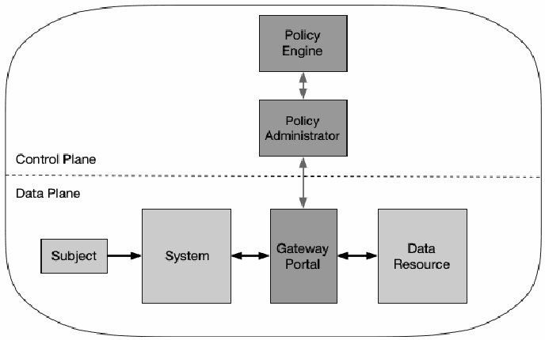
図5：リソースポータルモデル。角丸の領域が破線で上のコントロールプレーンと下のデータプレーンに分かれている。コントロールプレーンでは、ポリシーエンジンとポリシー管理者が両方向の矢印でつながる。データプレーンでは、サブジェクトからシステムへ矢印があり、システムはゲートウェイポータルと、ゲートウェイポータルはデータリソースと、それぞれ両方向の矢印でつながる。ポリシー管理者はゲートウェイポータルと両方向の矢印でつながる。
Figure 5: Resource Portal Model
図5：リソースポータルモデル
The primary benefit of this model over the others is that a software component does not need to be installed on all client devices. This model is also more flexible for BYOD policies and inter-organizational collaboration projects. Enterprise administrators do not need to ensure that each device has the appropriate device agent before use. However, limited information can be inferred from devices requesting access. This model can only scan and analyze assets and devices once they connect to the PEP portal and may not be able to continuously monitor them for malware, unpatched vulnerabilities, and appropriate configuration.
他のモデルと比較したこのモデルの主な利点は、すべてのクライアントデバイスにソフトウェアコンポーネントをインストールする必要がない点である。また、このモデルはBYODポリシーや組織間のコラボレーションプロジェクトに対してもより柔軟である。企業の管理者は、使用前に各デバイスに適切なデバイスエージェントが備わっていることを確認する必要がない。しかし、アクセスを要求してくるデバイスから推測できる情報は限られている。このモデルでは、資産やデバイスがPEPポータルに接続して初めてそれらをスキャンおよび分析でき、マルウェア、パッチ未適用の脆弱性、および適切な構成について継続的に監視できない可能性がある。
The main difference with this model is there is no local agent that handles requests, and so the enterprise may not have full visibility or arbitrary control over assets as it can only see/scan them when they connect to a portal. The enterprise may be able to employ measures such as browser isolation to mitigate or compensate. These assets may be invisible to the enterprise between these sessions. This model also allows attackers to discover and attempt to access the portal or attempt a denial-of-service (DoS) attack against the portal. The portal systems should be well-provisioned to provide availability against a DoS attack or network disruption.
このモデルの主な相違点は、リクエストを処理するローカルエージェントが存在しないため、企業はアセットがポータルに接続したときにのみそれらを確認／スキャンでき、アセットに対する完全な可視性や任意の制御を持てない可能性がある点である。企業は、緩和または補償のためにブラウザ分離などの対策を採用できる場合がある。これらのアセットは、これらのセッションの合間には企業から不可視となる可能性がある。また、このモデルでは、攻撃者がポータルを発見してアクセスを試みたり、ポータルに対してサービス拒否（DoS）攻撃を試みたりすることが可能になる。ポータルシステムは、DoS攻撃やネットワークの途絶に対して可用性を提供できるよう、十分にプロビジョニングされるべきである。
3.2.4 Device Application Sandboxing
3.2.4 デバイスアプリケーションのサンドボックス化
Another variation of the agent/gateway deployment model is having vetted applications or processes run compartmentalized on assets. These compartments could be virtual machines, containers, or some other implementation, but the goal is the same: to protect the application or instances of applications from a possibly compromised host or other applications running on the asset.
エージェント／ゲートウェイ展開モデルのもう1つのバリエーションは、審査済みのアプリケーションまたはプロセスをアセット上で区画化して実行することである。これらの区画は仮想マシン、コンテナ、またはその他の実装形態であり得るが、目的は同一である。すなわち、侵害されている可能性のあるホストやアセット上で動作している他のアプリケーションから、当該アプリケーションまたはそのインスタンスを保護することである。
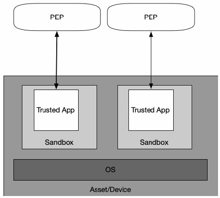
図6: アプリケーションサンドボックス。資産／デバイスと記された箱の中で、下部に OS の層があり、その上に 2 つのサンドボックスの箱が並び、それぞれに信頼済みアプリ（Trusted App）が入っている。各信頼済みアプリは、デバイスの上にあるそれぞれの PEP と両方向の矢印でつながる。
Figure 6: Application Sandboxes
図6: アプリケーションサンドボックス
In Figure 6, the subject device runs approved, vetted applications in a sandbox. The applications can communicate with the PEP to request access to resources, but the PEP will refuse requests from other applications on the asset. The PEP could be an enterprise local service or a cloud service in this model.
図6において、サブジェクトのデバイスは承認・審査されたアプリケーションをサンドボックス内で実行する。アプリケーションはリソースへのアクセスを要求するためにPEPと通信できるが、PEPはアセット上の他のアプリケーションからの要求を拒否する。このモデルでは、PEPはエンタープライズのローカルサービスまたはクラウドサービスであり得る。
The main advantage of this model variant is that individual applications are segmented from the rest of the asset. If the asset cannot be scanned for vulnerabilities, these individual, sandboxed applications may be protected from a potential malware infection on the host asset. One of the disadvantages of this model is that enterprises must maintain these sandboxed applications for all assets and may not have full visibility into client assets. The enterprise also needs to make sure each sandboxed application is secure, which may require more effort than simply monitoring devices.
このモデルバリエーションの主な利点は、個々のアプリケーションがアセットの他の部分からセグメント化される点である。アセットの脆弱性をスキャンできない場合でも、これらの個別のサンドボックス化されたアプリケーションは、ホストアセット上の潜在的なマルウェア感染から保護される可能性がある。このモデルの欠点の1つは、企業がすべてのアセットに対してこれらのサンドボックス化されたアプリケーションを維持管理しなければならず、クライアントアセットに対する完全な可視性を得られない可能性がある点である。また、企業はサンドボックス化された各アプリケーションが安全であることを確認する必要があり、これには単にデバイスを監視する以上の労力が必要となる場合がある。
3.3 Trust Algorithm
3.3 トラストアルゴリズム
For an enterprise with a ZTA deployment, the policy engine can be thought of as the brain and the PE’s trust algorithm as its primary thought process. The trust algorithm (TA) is the process used by the policy engine to ultimately grant or deny access to a resource. The policy engine takes input from multiple sources (see Section 3): the policy database with observable information about subjects, subject attributes and roles, historical subject behavior patterns, threat intelligence sources, and other metadata sources. The process can be grouped into broad categories and visualized in Figure 7.
ZTAを導入している企業において、ポリシーエンジンは頭脳と見なすことができ、PEのトラストアルゴリズムはその主要な思考プロセスと見なすことができる。トラストアルゴリズム（TA）は、ポリシーエンジンがリソースへのアクセスを最終的に許可または拒否するために使用するプロセスである。ポリシーエンジンは、複数のソース（セクション3を参照）から入力を受け取る。これには、サブジェクトに関する観察可能な情報を含むポリシーデータベース、サブジェクトの属性と役割、サブジェクトの過去の行動パターン、脅威インテリジェンスソース、およびその他のメタデータソースが含まれる。このプロセスは広範なカテゴリに分類でき、図7に視覚化されている。
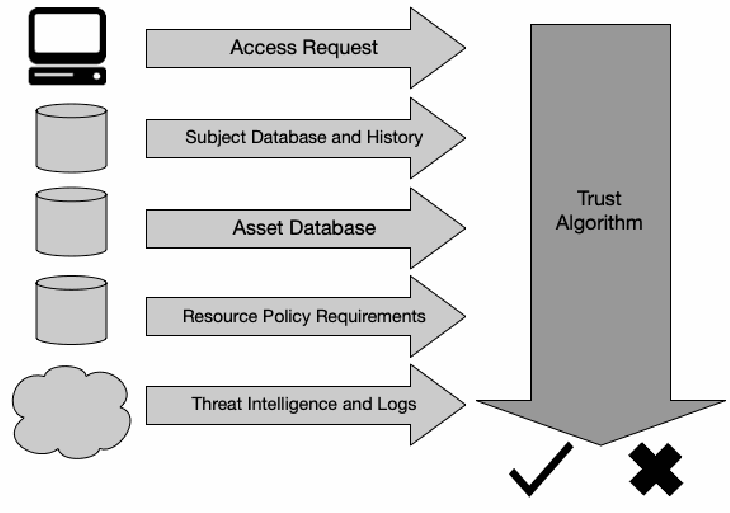
図7: トラストアルゴリズムの入力。左に図記号を添えた 5 つの入力が、右向きの太い矢印として、トラストアルゴリズムと記された大きな下向きの矢印に入る。入力は、アクセスリクエスト（コンピュータ）、サブジェクトのデータベースと履歴（円柱）、資産データベース（円柱）、リソースのポリシー要件（円柱）、脅威インテリジェンスとログ（雲）である。トラストアルゴリズムの矢印の下に、チェックマークと×印がある。
Figure 7: Trust Algorithm Input
図7: トラストアルゴリズムの入力
In the figure, the inputs can be broken into categories based on what they provide to the trust algorithm.
この図では、入力は、トラストアルゴリズムに何を提供するかに基づいてカテゴリに分類できる。
•Access request: This is the actual request from the subject. The resource requested is the primary information used, but information about the requester is also used. This can include OS version, software used (e.g., does the requesting application appear on a list of approved applications?), and patch level. Depending on these factors and the asset security posture, access to assets might be restricted or denied.
•アクセス要求：これはサブジェクトからの実際の要求である。要求されたリソースが、使用される主要な情報であるが、要求者に関する情報も使用される。これには、OSバージョン、使用されているソフトウェア（例：要求元のアプリケーションが承認済みアプリケーションのリストに載っているか）、およびパッチレベルが含まれ得る。これらの要因とアセットのセキュリティ態勢に応じて、アセットへのアクセスが制限または拒否されることがある。
•Subject database: This is the “who” that is requesting access to a resource [SP800-63]. This is the set of subjects (human and processes) of the enterprise or collaborators and a collection of subject attributes/privileges assigned. These subjects and attributes form the basis of policies for resource access [SP800-162] [NISTIR 7987]. User identities can include a mix of logical identity (e.g., account ID) and results of authentication checks performed by PEPs. Attributes of identity that can be factored into deriving the confidence level include time and geolocation. A collection of privileges given to multiple subjects could be thought of as a role, but privileges should be assigned to a subject on an individual basis and not simply because they may fit into a particular role in the organization. This collection should be encoded and stored in an ID management system and policy database. This may also include data about past observed subject behavior in some (TA) variants (see Section 3.3.1).
•サブジェクトデータベース：これは、リソースへのアクセスを要求しているのが「誰」であるかを示すものである [SP800-63]。これは、企業または協力者のサブジェクト（人間およびプロセス）の集合と、割り当てられたサブジェクトの属性／権限の集まりである。これらのサブジェクトと属性は、リソースアクセスのためのポリシーの基礎を形成する [SP800-162] [NISTIR 7987]。ユーザーのアイデンティティには、論理的なアイデンティティ（例：アカウントID）と、PEPによって実行された認証チェックの結果とが混在し得る。信頼レベルの導出に織り込むことができるアイデンティティの属性には、時刻や地理的位置が含まれる。複数のサブジェクトに付与された権限の集まりはロールと考えることもできるが、権限は、単に組織内の特定のロールに当てはまり得るという理由によってではなく、個別にサブジェクトに割り当てられるべきである。この集まりは、エンコードして、ID管理システムおよびポリシーデータベースに保存すべきである。これには、一部の（TA）バリエーションにおいては、過去に観測されたサブジェクトの行動に関するデータも含まれ得る（セクション3.3.1を参照）。
•Asset database (and observable status): This is the database that contains the known status of each enterprise-owned (and possibly known nonenterprise/BYOD) asset (physical and virtual, to some extent). This is compared to the observable status of the asset making the request and can include OS version, software present, and its integrity, location (network location and geolocation), and patch level. Depending on the asset state compared with this database, access to assets might be restricted or denied.
•アセットデータベース（および観測可能な状態）：これは、企業が所有する（場合によっては既知の非企業所有／BYODのものも含む）各アセット（物理的なもの、およびある程度は仮想的なもの）の既知の状態を格納したデータベースである。これは、要求を行っているアセットの観測可能な状態と比較されるものであり、OSバージョン、存在するソフトウェアとその完全性、場所（ネットワーク上の位置および地理的位置）、ならびにパッチレベルを含み得る。このデータベースと比較したアセットの状態に応じて、アセットへのアクセスが制限または拒否されることがある。
•Resource requirements: This set of policies complements the user ID and attributes database [SP800-63] and defines the minimal requirements for access to the resource. Requirements may include authenticator assurance levels, such as MFA network location (e.g., deny access from overseas IP addresses), data sensitivity, and requests for asset configuration. These requirements should be developed by both the data custodian (i.e., those responsible for the data) and those responsible for the business processes that utilize the data (i.e., those responsible for the mission).
•リソース要件：この一連のポリシーは、ユーザーIDおよび属性のデータベース [SP800-63] を補完し、リソースへのアクセスのための最小要件を定義する。要件には、MFAなどの認証器保証レベル、ネットワーク上の位置（例：海外のIPアドレスからのアクセスを拒否する）、データの機微度、およびアセット構成に関する要求が含まれ得る。これらの要件は、データ管理者（すなわち、データに責任を負う者）と、そのデータを利用する業務プロセスに責任を負う者（すなわち、ミッションに責任を負う者）の双方によって策定されるべきである。
•Threat intelligence: This is an information feed or feeds about general threats and active malware operating on the internet. This could also include specific information about communication seen from the device that may be suspect (such as queries for possible malware command and control nodes). These feeds can be external services or internal scans and discoveries and can include attack signatures and mitigations. This is the only component that will most likely be under the control of a service rather than the enterprise.
•脅威インテリジェンス：これは、一般的な脅威およびインターネット上で活動中のマルウェアに関する、1つまたは複数の情報フィードである。これには、当該デバイスから観測された、疑わしい可能性のある通信（マルウェアのコマンド＆コントロールノードの可能性があるものへのクエリなど）に関する具体的な情報も含まれ得る。これらのフィードは、外部サービスである場合も、内部でのスキャンや発見である場合もあり、攻撃シグネチャや緩和策を含み得る。これは、企業ではなくサービスの管理下に置かれる可能性が最も高い唯一のコンポーネントである。
The weight of importance for each data source may be a proprietary algorithm or may be configured by the enterprise. These weight values can be used to reflect the importance of the data source to an enterprise.
各データソースの重要度の重みは、独自のアルゴリズムである場合もあれば、企業によって設定される場合もある。これらの重み値は、企業に対するデータソースの重要度を反映するために使用できる。
The final determination is then passed to the PA for execution. The PA’s job is to configure the necessary PEPs to enable authorized communication. Depending on how the ZTA is deployed, this may involve sending authentication results and connection configuration information to gateways and agents or resource portals. PAs may also place a hold or pause on a communication session to reauthenticate and reauthorize the connection in accordance with policy requirements. The PA is also responsible for issuing the command to terminate the connection based on policy (e.g., after a time-out, when the workflow has been completed, due to a security alert).
その後、最終的な決定は実行のためにPAに渡される。PAの役割は、認可された通信を可能にするために必要なPEPを設定することである。ZTAの展開方法によっては、これには認証結果や接続設定情報をゲートウェイやエージェント、あるいはリソースポータルへ送信することが含まれる場合がある。また、PAはポリシー要件に従って接続を再認証および再認可するために、通信セッションを保留または一時停止させることもある。PAは、ポリシーに基づいて接続を終了するコマンドを発行する責任も担っている（例：タイムアウト後、ワークフロー完了時、セキュリティアラート発生時など）。
3.3.1 Trust Algorithm Variations
3.3.1 トラストアルゴリズムのバリエーション
There are different ways to implement a TA. Different implementers may wish to weigh the above factors differently according to the factors’ perceived importance. There are two other major characteristics that can be used to differentiate TAs. The first is how the factors are evaluated, whether as binary decisions or weighted parts of a whole “score” or confidence level. The second is how requests are evaluated in relation to other requests by the same subject, application/service, or device.
TAを実装する方法にはさまざまなものがある。実装者によって、認識された重要度に応じて上記の要因の重み付けを異ならせたい場合がある。TAを区別するために使用できる主な特徴は他に2つある。1つ目は、要因がどのように評価されるかであり、二値の判定として評価されるか、あるいは全体的な「スコア」や信頼レベルの重み付けされた一部として評価されるかである。2つ目は、同一のサブジェクト、アプリケーション/サービス、またはデバイスによる他のリクエストとの関連において、リクエストがどのように評価されるかである。
•Criteria- versus score-based: A criteria-based TA assumes a set of qualified attributes that must be met before access is granted to a resource or an action (e.g., read/write) is allowed. These criteria are configured by the enterprise and should be independently configured for every resource. Access is granted or an action applied to a resource only if all the criteria are met. A score-based TA computes a confidence level based on values for every data source and enterprise-configured weights. If the score is greater than the configured threshold value for the resource, access is granted, or the action is performed.
•基準ベース対スコアベース：基準ベースのTAは、リソースへのアクセスが許可される前、またはアクション（例：読み取り/書き込み）が許可される前に満たさなければならない一連の適格属性を前提とする。これらの基準は企業によって設定され、リソースごとに個別に設定されるべきである。すべての基準が満たされた場合にのみ、アクセスが許可されるか、リソースにアクションが適用される。スコアベースのTAは、各データソースの値と企業が設定した重みに基づいて信頼レベルを算出する。スコアがそのリソースに設定されたしきい値を超えている場合、アクセスが許可されるか、アクションが実行される。
Otherwise, the request is denied, or access privileges are reduced (e.g., read access is granted but not write access for a file).
そうでない場合、リクエストは拒否されるか、アクセス権限が縮小される（例：ファイルに対して読み取りアクセスは許可されるが、書き込みアクセスは許可されないなど）。
•Singular versus contextual: A singular TA treats each request individually and does not take the subject history into consideration when making its evaluation. This can allow faster evaluations, but there is a risk that an attack can go undetected if it stays within a subject’s allowed role. A contextual TA takes the subject or network agent’s recent history into consideration when evaluating access requests. This means the PE must maintain some state information on all subjects and applications but may be more likely to detect an attacker using subverted credentials to access information in a pattern that is atypical of what the PE sees for the given subject. This also means that the PE must be informed of user behavior by the PA (and PEPs) that subjects interact with when communicating. Analysis of subject behavior can be used to provide a model of acceptable use, and deviations from this behavior could trigger additional authentication checks or resource request denials.
•単一対コンテキスト：単一TAは各リクエストを個別に処理し、評価を行う際にサブジェクトの履歴を考慮に入れない。これにより迅速な評価が可能になるが、攻撃がサブジェクトに許可されたロールの範囲内にとどまる場合、検出されないリスクがある。コンテキストTAは、アクセスリクエストを評価する際に、サブジェクトまたはネットワークエージェントの最近の履歴を考慮に入れる。これは、PEがすべてのサブジェクトとアプリケーションに関する何らかの状態情報を保持しなければならないことを意味するが、侵害された認証情報を使用して、特定のサブジェクトに対してPEが通常観測するパターンとは異なるパターンで情報にアクセスする攻撃者を検出できる可能性が高くなる場合がある。これはまた、サブジェクトが通信時に対話するPA（およびPEP）によって、PEがユーザーの行動について通知を受けなければならないことも意味する。サブジェクトの行動分析を使用して許容される利用モデルを提供することができ、この行動からの逸脱によって追加の認証チェックやリソースリクエストの拒否が引き起こされる可能性がある。
The two factors are not always dependent on each other. It is possible to have a TA that assigns a confidence level to every subject and/or device and still considers every access request independently (i.e., singular). However, contextual, score-based TAs would provide the ability to offer more dynamic and granular access control, since the score provides a current confidence level for the requesting account and adapts to changing factors more quickly than static policies modified by human administrators.
これら2つの要因は、必ずしも相互に依存しているわけではない。すべてのサブジェクトおよび／またはデバイスに信頼レベルを割り当てつつ、なお各アクセスリクエストを独立して（すなわち単一として）検討するTAを持つことも可能である。しかし、コンテキストに基づくスコアベースのTAは、より動的できめ細かなアクセス制御を提供する能力をもたらすであろう。スコアはリクエスト元のアカウントの現在の信頼レベルを示し、変化する要因に対して、人間の管理者が変更する静的ポリシーよりも迅速に適応するためである。
Ideally, a ZTA trust algorithm should be contextual, but this may not always be possible with the infrastructure components available to the enterprise. A contextual TA can mitigate threats where an attacker stays close to a “normal” set of access requests for a compromised subject account or insider attack. It is important to balance security, usability, and cost-effectiveness when defining and implementing trust algorithms. Continually prompting a subject for reauthentication against behavior that is consistent with historical trends and norms for their mission function and role within the organization can lead to usability issues. For example, if an employee in the HR department of an agency normally accesses 20 to 30 employee records in a typical workday, a contextual TA may send an alert if the access requests suddenly exceed 100 records in a day. A contextual TA may also send an alert if someone is making access requests after normal business hours as this could be an attacker exfiltrating records by using a compromised HR account. These are examples where a contextual TA can detect an attack whereas a singular TA may fail to detect the new behavior. In another example, an accountant who typically accesses the financial system during normal business hours is now trying to access the system in the middle of the night from an unrecognizable location. A contextual TA may trigger an alert and require the subject to satisfy a more stringent confidence level or other criteria as outlined in NIST Special Publication 800-63A [SP800-63A].
理想的には、ZTAのトラストアルゴリズムはコンテキスト型であるべきだが、企業が利用可能なインフラストラクチャコンポーネントによっては、これが常に可能であるとは限らない。コンテキストTAは、侵害されたサブジェクトアカウントや内部者攻撃において、攻撃者が「通常の」アクセスリクエストの集合に近い範囲にとどまるような脅威を緩和できる。トラストアルゴリズムを定義し実装する際には、セキュリティ、ユーザビリティ、および費用対効果のバランスを取ることが重要である。組織内でのミッション機能や役割における過去の傾向や規範と一致する行動に対して、サブジェクトに繰り返し再認証を求めることは、ユーザビリティの問題につながり得る。例えば、ある機関のHR部門の職員が通常の勤務日にふだん20〜30件の職員レコードにアクセスしている場合、アクセスリクエストが突然1日に100レコードを超えると、コンテキストTAはアラートを送信することがある。また、通常の業務時間後に誰かがアクセスリクエストを行っている場合にも、コンテキストTAはアラートを送信することがある。これは、侵害されたHRアカウントを使用して攻撃者がレコードを持ち出している可能性があるためである。これらは、単一TAでは新たな行動を検知できないおそれがあるのに対し、コンテキストTAであれば攻撃を検知できる例である。別の例として、ふだんは通常の業務時間内に財務システムにアクセスしている会計担当者が、今度は真夜中に認識できない場所からシステムにアクセスしようとしている場合がある。コンテキストTAはアラートを発し、NIST Special Publication 800-63A [SP800-63A] に概説されている、より厳格な信頼レベルまたはその他の基準を満たすようサブジェクトに要求することがある。
Developing a set of criteria or weights/threshold values for each resource requires planning and testing. Enterprise administrators may encounter issues during the initial implementation of ZTA where access requests that should be approved are denied due to misconfiguration. This will result in an initial “tuning” phase of deployment. Criteria or scoring weights may need to be adjusted to ensure that the policies are enforced while still allowing the enterprise’s business processes to function. How long this tuning phase lasts depends on the enterprise-defined metrics for progress and tolerance for incorrect access denials/approvals for the resources used in the workflow.
リソースごとに一連の基準、または重み／しきい値を策定するには、計画とテストが必要である。企業の管理者は、ZTAの初期実装時に、承認されるべきアクセスリクエストが設定ミスによって拒否されるという問題に遭遇することがある。その結果、展開の初期に「チューニング」フェーズが生じることになる。企業の業務プロセスが機能することを許容しつつ、ポリシーが確実に実施されるようにするために、基準やスコアリングの重みを調整する必要が生じる場合がある。このチューニングフェーズがどの程度続くかは、進捗に関する企業定義のメトリクスと、ワークフローで使用されるリソースに対する誤ったアクセス拒否／承認への許容度によって決まる。
3.4 Network/Environment Components
3.4 ネットワーク／環境コンポーネント
In a ZT environment, there should be a separation (logical or possibly physical) of the communication flows used to control and configure the network and application/service communication flows used to perform the actual work of the organization. This is often broken down to a control plane for network control communication and a data plane for application/service communication flows [Gilman].
ZT環境では、ネットワークの制御および設定に使用される通信フローと、組織の実際の業務を遂行するために使用されるアプリケーション／サービスの通信フローとを（論理的に、あるいは場合によっては物理的に）分離すべきである。これは多くの場合、ネットワーク制御通信のためのコントロールプレーンと、アプリケーション／サービスの通信フローのためのデータプレーンとに分けられる [Gilman]。
The control plane is used by various infrastructure components (both enterprise-owned and from service providers) to maintain and configure assets; judge, grant, or deny access to resources; and perform any necessary operations to set up communication paths between resources. The data plane is used for actual communication between software components. This communication channel may not be possible before the path has been established via the control plane. For example, the control plane could be used by the PA and PEP to set up the communication path between the subject and the enterprise resource. The application/service workload would then use the data plane path that was established.
コントロールプレーンは、アセットの維持と設定、リソースへのアクセスの判定・許可・拒否、およびリソース間の通信パスを設定するために必要なあらゆる操作の実行のために、さまざまなインフラストラクチャコンポーネント（企業所有のものとサービスプロバイダーのものの両方）によって使用される。データプレーンは、ソフトウェアコンポーネント間の実際の通信に使用される。この通信チャネルは、コントロールプレーンを介してパスが確立されるまでは利用できない場合がある。例えば、コントロールプレーンは、PAとPEPがサブジェクトと企業リソースとの間の通信パスを設定するために使用され得る。その後、アプリケーション／サービスのワークロードは、確立されたデータプレーンのパスを使用する。
3.4.1 Network Requirements to Support ZTA
3.4.1 ZTAをサポートするためのネットワーク要件
1.Enterprise assets have basic network connectivity. The local area network (LAN), enterprise controlled or not, provides basic routing and infrastructure (e.g., DNS). The remote enterprise asset may not necessarily use all infrastructure services.
1.企業資産は基本的なネットワーク接続性を備えている。ローカルエリアネットワーク（LAN）は、企業によって管理されているかどうかにかかわらず、基本的なルーティングとインフラストラクチャ（例：DNS）を提供する。リモートの企業資産は、必ずしもすべてのインフラストラクチャサービスを使用するとは限らない。
2.The enterprise must be able to distinguish between what assets are owned or managed by the enterprise and the devices’ current security posture. This is determined by enterprise-issued credentials and not using information that cannot be authenticated information (e.g., network MAC addresses that can be spoofed).
2.企業は、どの資産が企業によって所有または管理されているかと、デバイスの現在のセキュリティポスチャとを区別できなければならない。これは企業発行のクレデンシャルによって判断され、認証できない情報（例：スプーフィング可能なネットワークMACアドレスなど）は使用しない。
3.The enterprise can observe all network traffic. The enterprise records packets seen on the data plane, even if it is not be able to perform application layer inspection (i.e., OSI layer 7) on all packets. The enterprise filters out metadata about the connection (e.g., destination, time, device identity) to dynamically update policies and inform the PE as it evaluates access requests.
3.企業はすべてのネットワークトラフィックを監視できる。企業は、データプレーン上で監視されるパケットを記録する。これは、すべてのパケットに対してアプリケーション層のインスペクション（すなわち、OSIレイヤー7）を実行できない場合であっても行われる。企業は接続に関するメタデータ（例：宛先、時刻、デバイスID）を抽出し、ポリシーを動的に更新するとともに、アクセス要求を評価するPEに情報を提供する。
4.Enterprise resources should not be reachable without accessing a PEP. Enterprise resources do not accept arbitrary incoming connections from the internet. Resources accept custom-configured connections only after a client has been authenticated and authorized. These communication paths are set up by the PEP. Resources may not even be discoverable without accessing a PEP. This prevents attackers from identifying targets via scanning and/or launching DoS attacks against resources located behind PEPs. Note that not all resources should be hidden this way; some network infrastructure components (e.g., DNS servers) must be accessible.
4.企業のリソースは、PEPにアクセスすることなしに到達可能であるべきではない。企業のリソースは、インターネットからの任意の着信接続を受け入れない。リソースは、クライアントが認証および認可された後にのみ、カスタム構成された接続を受け入れる。これらの通信経路はPEPによって設定される。リソースは、PEPにアクセスすることなしには発見すらできない場合がある。これにより、攻撃者がスキャンによってターゲットを特定したり、PEPの背後に配置されたリソースに対してDoS攻撃を仕掛けたりすることを防ぐ。なお、すべてのリソースをこのように隠すべきというわけではない。一部のネットワークインフラストラクチャコンポーネント（例：DNSサーバー）はアクセス可能でなければならない。
5.The data plane and control plane are logically separate. The policy engine, policy administrator, and PEPs communicate on a network that is logically separate and not directly accessible by enterprise assets and resources. The data plane is used for application/service data traffic. The policy engine, policy administrator, and PEPs use the control plane to communicate and manage communication paths between assets. The PEPs must be able to send and receive messages from both the data and control planes.
5.データプレーンとコントロールプレーンは論理的に分離されている。ポリシーエンジン、ポリシー管理者、およびPEPは、論理的に分離されており、企業の資産やリソースから直接アクセスできないネットワーク上で通信を行う。データプレーンはアプリケーション／サービスのデータトラフィックに使用される。ポリシーエンジン、ポリシー管理者、およびPEPはコントロールプレーンを使用して通信し、資産間の通信経路を管理する。PEPは、データプレーンとコントロールプレーンの両方からメッセージを送受信できなければならない。
6.Enterprise assets can reach the PEP component. Enterprise subjects must be able to access the PEP component to gain access to resources. This could take the form of a web portal, network device, or software agent on the enterprise asset that enables the connection.
6.エンタープライズ資産はPEPコンポーネントに到達できる。エンタープライズのサブジェクトは、リソースへのアクセスを得るためにPEPコンポーネントにアクセスできなければならない。これは、Webポータル、ネットワークデバイス、または接続を可能にするエンタープライズ資産上のソフトウェアエージェントの形態をとり得る。
7.The PEP is the only component that accesses the policy administrator as part of a business flow. Each PEP operating on the enterprise network has a connection to the policy administrator to establish communication paths from clients to resources. All enterprise business process traffic passes through one or more PEPs.
7.PEPは、ビジネスフローの一環としてポリシー管理者にアクセスする唯一のコンポーネントである。エンタープライズネットワーク上で動作する各PEPは、クライアントからリソースへの通信パスを確立するためにポリシー管理者への接続を持つ。すべてのエンタープライズビジネスプロセスのトラフィックは、1つ以上のPEPを通過する。
8.Remote enterprise assets should be able to access enterprise resources without needing to traverse enterprise network infrastructure first. For example, a remote subject should not be required to use a link back to the enterprise network (i.e., virtual private network [VPN]) to access services utilized by the enterprise and hosted by a public cloud provider (e.g., email).
8.リモートのエンタープライズ資産は、最初にエンタープライズネットワークインフラストラクチャを経由する必要なしに、エンタープライズリソースにアクセスできるべきである。たとえば、リモートのサブジェクトは、エンタープライズが利用しパブリッククラウドプロバイダーがホストしているサービス（例: 電子メール）にアクセスするために、エンタープライズネットワークへ戻るリンク（すなわち、仮想プライベートネットワーク[VPN]）を使用することを要求されるべきではない。
9.The infrastructure used to support the ZTA access decision process should be made scalable to account for changes in process load. The PE(s), PA(s), and PEPs used in a ZTA become the key components in any business process. Delay or inability to reach a PEP (or inability of the PEPs to reach the PA/PE) negatively impacts the ability to perform the workflow. An enterprise implementing a ZTA needs to provision the components for the expected workload or be able to rapidly scale the infrastructure to handle increased usage when needed.
9.ZTAのアクセス決定プロセスをサポートするために使用されるインフラストラクチャは、プロセス負荷の変化に対応できるようにスケーラブルにするべきである。ZTAで使用されるPE(s)、PA(s)、およびPEPsは、あらゆるビジネスプロセスにおいて主要なコンポーネントとなる。PEPへの到達の遅延または到達不能（あるいはPEPsがPA/PEに到達できないこと）は、ワークフローを実行する能力に悪影響を及ぼす。ZTAを実装するエンタープライズは、予想されるワークロードに合わせてコンポーネントをプロビジョニングするか、必要に応じて増加した使用に対処するためにインフラストラクチャを迅速にスケールできるようにする必要がある。
10.Enterprise assets may not be able to reach certain PEPs due to policy or observable factors. For example, there may be a policy stating that mobile assets may not be able to reach certain resources if the requesting asset is located outside of the enterprise’s home country. These factors could be based on location (geolocation or network location), device type, or other criteria.
10.企業資産は、ポリシーまたは観察可能な要因により、特定のPEPに到達できない場合がある。例えば、要求元の資産が企業の自国の外に位置している場合、モバイル資産は特定のリソースに到達できない可能性があるとするポリシーが存在する場合がある。これらの要因は、場所（地理的位置またはネットワーク上の場所）、デバイスタイプ、またはその他の基準に基づく可能性がある。
4 Deployment Scenarios/Use Cases
4 展開シナリオ／ユースケース
Any enterprise environment can be designed with zero trust tenets in mind. Most organizations already have some elements of zero trust in their enterprise infrastructure or are on their way through implementation of information security and resiliency policies and best practices. Several deployment scenarios and use cases lend themselves readily to a zero trust architecture. For instance, ZTA has its roots in organizations that are geographically distributed and/or have a highly mobile workforce. That said, any organization can benefit from a zero trust architecture.
あらゆる企業環境は、ゼロトラストの基本原則を念頭に置いて設計できる。大半の組織は、すでに企業インフラ内にゼロトラストの要素をいくらか備えているか、情報セキュリティおよびレジリエンスのポリシーとベストプラクティスの実装を通じてその途上にある。いくつかの展開シナリオやユースケースは、ゼロトラストアーキテクチャに容易に適合する。例えば、ZTAはそのルーツを、地理的に分散している組織、および／または移動性の高い労働力を抱える組織に持っている。とはいえ、どのような組織であってもゼロトラストアーキテクチャから恩恵を受けることができる。
In the use cases below, ZTA is not explicitly indicated since the enterprise likely has both perimeter-based and possibly ZTA infrastructures. As discussed in Section 7.2, there will likely be a period when ZTA components and perimeter-based network infrastructure are concurrently in operation in an enterprise.
以下のユースケースでは、企業がおそらく境界型インフラストラクチャと場合によってはZTAインフラストラクチャの双方を有していることから、ZTAは明示的には示されていない。セクション7.2で説明されているように、企業内ではZTAコンポーネントと境界型ネットワークインフラストラクチャが同時に運用される期間が存在する可能性が高い。
4.1 Enterprise with Satellite Facilities
4.1 サテライト拠点を持つ企業
The most common scenario involves an enterprise with a single headquarters and one or more geographically dispersed locations that are not joined by an enterprise-owned physical network connection (see Figure 8). Employees at the remote location may not have a full enterprise-owned local network but still need to access enterprise resources to perform their tasks. The enterprise may have a Multiprotocol Label Switch (MPLS) link to the enterprise HQ network but may not have adequate bandwidth for all traffic or may not wish for traffic destined for cloud-based applications/services to traverse through the enterprise HQ network. Likewise, employees may be teleworking or in a remote location and using enterprise-owned or personally-owned devices. In such cases, an enterprise may wish to grant access to some resources (e.g., employee calendar, email) but deny access or restrict actions to more sensitive resources (e.g., HR database).
最も一般的なシナリオには、単一の本社と、企業所有の物理的なネットワーク接続で結合されていない1つ以上の地理的に分散した拠点を持つ企業が関与する（図8参照）。リモート拠点の従業員は、完全な企業所有のローカルネットワークを持っていない場合があるが、自身のタスクを実行するために企業リソースにアクセスする必要がある。企業は本社ネットワークへのマルチプロトコルラベルスイッチ（MPLS）リンクを有している場合があるが、すべてのトラフィックに対して十分な帯域幅がないか、クラウドベースのアプリケーション／サービス向けのトラフィックが本社ネットワークを通過することを望まない場合がある。同様に、従業員はテレワーク中であるか、または遠隔地にいて、企業所有または個人所有のデバイスを使用している場合がある。このような場合、企業は一部のリソース（例：従業員カレンダー、電子メール）へのアクセスを許可したいと考えるかもしれないが、より機密性の高いリソース（例：人事データベース）へのアクセスを拒否したり、アクションを制限したりする場合がある。
In this use case, the PE/PA(s) is often hosted as a cloud service (which usually provides superior availability and would not require remote workers to rely on enterprise infrastructure to access cloud resources) with end assets having an installed agent (see Section 3.2.1) or accessing a resource portal (see Section 3.2.3). It may not be most responsive to have the PE/PA(s) hosted on the enterprise local network as remote offices and workers must send all traffic back to the enterprise network to reach applications/services hosted by cloud services.
このユースケースでは、PE/PAはクラウドサービスとしてホストされることが多く（これは通常、優れた可用性を提供し、リモートワーカーがクラウドリソースにアクセスするために企業インフラストラクチャに依存する必要がない）、エンド資産にはエージェントがインストールされているか（セクション3.2.1参照）、またはリソースポータルにアクセスする（セクション3.2.3参照）。リモートオフィスやリモートワーカーがクラウドサービスによってホストされているアプリケーション／サービスに到達するために、すべてのトラフィックを企業ネットワークへ送り返す必要があるため、PE/PAを企業のローカルネットワーク上でホストすることは最も応答性が高いとは言えない場合がある。
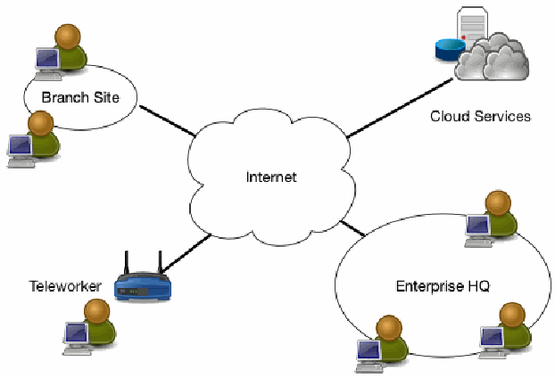
図8：リモート従業員を抱えるエンタープライズ。中央のインターネットの雲が、線で 4 つの部分とつながる。ブランチサイト（コンピュータを使う 2 人の利用者を含む楕円）、クラウドサービス（サーバーと雲）、テレワーカー（無線ルーターの横でコンピュータを使う利用者）、エンタープライズ本社（コンピュータを使う 3 人の利用者を含む楕円）である。
Figure 8: Enterprise with Remote Employees
図8：リモート従業員を抱えるエンタープライズ
4.2 Multi-cloud/Cloud-to-Cloud Enterprise
4.2 マルチクラウド／クラウド間エンタープライズ
One increasingly common use case for deploying a ZTA is an enterprise utilizing multiple cloud providers (see Figure 9). In this use case, the enterprise has a local network but uses two or more cloud service providers to host applications/services and data. Sometimes, the application/service is hosted on a cloud service that is separate from the data source. For performance and ease of management, the application hosted in Cloud Provider A should be able to connect directly to the data source hosted in Cloud Provider B rather than force the application to tunnel back through the enterprise network.
ZTAを展開する上でますます一般的になりつつあるユースケースの1つは、複数のクラウドプロバイダーを利用するエンタープライズである（図9を参照）。このユースケースでは、エンタープライズはローカルネットワークを持ちつつも、アプリケーション／サービスおよびデータをホストするために2つ以上のクラウドサービスプロバイダーを使用している。場合によっては、アプリケーション／サービスが、データソースとは別のクラウドサービス上でホストされていることもある。パフォーマンスおよび管理の容易さの観点から、アプリケーションをエンタープライズネットワーク経由で強制的にトンネリングして戻すのではなく、クラウドプロバイダーAでホストされているアプリケーションは、クラウドプロバイダーBでホストされているデータソースに直接接続できるべきである。
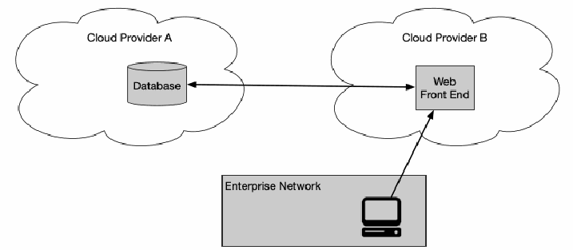
図9：マルチクラウドのユースケース。2 つの雲があり、クラウドプロバイダー A にはデータベース、クラウドプロバイダー B には Web フロントエンドがある。データベースと Web フロントエンドは両方向の矢印でつながる。下にエンタープライズネットワークと記された箱があり、その中のコンピュータから Web フロントエンドへ矢印が向かう。
Figure 9: Multi-cloud Use Case
図9：マルチクラウドのユースケース
This use case is the server-server implementation of the CSA’s software defined perimeter (SDP) specification [CSA-SDP]. As enterprises move to more cloud-hosted applications and services, it becomes apparent that relying on the enterprise perimeter for security becomes a liability. As discussed in Section 2.2, ZT principles take the view that there should be no difference between enterprise-owned and -operated network infrastructure and infrastructure owned and operated by any other service provider. The zero trust approach to multi-cloud use is to place PEPs at the access points of each application/service and data source. The PE and PA may be services located in either cloud or even on a third cloud provider. The client (via a portal or local installed agent) then accesses the PEPs directly. That way, the enterprise can still manage access to resources even when hosted outside the enterprise. One challenge is that different cloud providers have unique ways of implementing similar functionality. Enterprise architects will need to be aware of the how to implement their enterprise ZTA with each cloud provider they utilize.
このユースケースは、CSAのSoftware Defined Perimeter（SDP）仕様 [CSA-SDP] のサーバー間実装である。エンタープライズがクラウドでホストされるアプリケーションやサービスへの移行を進めるにつれ、セキュリティをエンタープライズの境界に依存することが弱点となることが明白になる。セクション2.2で議論したように、ZTの原則では、エンタープライズが所有・運用するネットワークインフラストラクチャと、他のいずれかのサービスプロバイダーによって所有・運用されるインフラストラクチャの間に違いがあるべきではないという見解をとる。マルチクラウド利用に対するゼロトラストのアプローチは、各アプリケーション／サービスおよびデータソースのアクセスポイントにPEPを配置することである。PEおよびPAは、いずれかのクラウドに配置されるサービスであってもよく、第3のクラウドプロバイダー上にあってもよい。その後、クライアントは（ポータルまたはローカルにインストールされたエージェントを介して）PEPに直接アクセスする。これにより、エンタープライズはリソースがエンタープライズの外部でホストされている場合でも、それらへのアクセスを依然として管理できる。1つの課題は、クラウドプロバイダーごとに同様の機能を実装する独自の方法があることである。エンタープライズアーキテクトは、利用する各クラウドプロバイダーにおいて自社のエンタープライズZTAをどのように実装するかを把握しておく必要がある。
4.3 Enterprise with Contracted Services and/or Nonemployee Access
4.3 外部委託サービスおよび／または非従業員アクセスを伴うエンタープライズ
Another common scenario is an enterprise that includes on-site visitors and/or contracted service providers that require limited access to enterprise resources to do their work (see Figure 10). For example, an enterprise has its own internal applications/services, databases, and assets. These include services contracted out to providers who may occasionally be on-site to provide maintenance (e.g., smart heating and lighting systems that are owned and managed by external providers). These visitors and service providers will need network connectivity to perform their tasks. A zero trust enterprise could facilitate this by allowing these devices and any visiting service technician access to the internet while obscuring enterprise resources.
もう1つの一般的なシナリオは、業務を遂行するためにエンタープライズリソースへの限定的なアクセスを必要とするオンサイトの訪問者や受託サービスプロバイダーを含むエンタープライズである（図10を参照）。例えば、あるエンタープライズは独自の内部アプリケーション／サービス、データベース、および資産を保有している。これらには、メンテナンスを提供するためにオンサイトに立ち寄ることがあるプロバイダーに外部委託されたサービス（例：外部プロバイダーによって所有・管理されているスマート暖房・照明システム）が含まれる。これらの訪問者やサービスプロバイダーは、業務を遂行するためにネットワーク接続が必要となる。ゼロトラストエンタープライズは、エンタープライズリソースを隠蔽しつつ、これらのデバイスや訪問したサービステクニシャンにインターネットへのアクセスを許可することで、これを円滑化できる。
![Figure 10: Enterprise with Nonemployee Access. A large rounded area labeled Enterprise Campus Network contains Internal App Server and Database at the upper left, Employees (users at computers) at the upper right, a dark box labeled Conference Center containing an Employee and Visitors, and a black box labeled Contracted HVAC with a Contractor Service Tech. Thick arrows point from the Employees and from the Employee in the Conference Center to the Database. Outside the area, a cloud labeled Internet is connected by dashed double-headed arrows to the Contracted HVAC and to the Visitors.](assets/207/p0034-figure-01.png)
図10：非従業員アクセスを伴うエンタープライズ。エンタープライズキャンパスネットワークと記された大きな角丸の領域の中に、左上に内部アプリケーションサーバーとデータベース、右上に従業員（コンピュータを使う利用者）、従業員と訪問者を含むカンファレンスセンターと記された暗色の枠、請負 HVAC 業者と記された黒い箱の中に請負業者のサービス技術者がいる。従業員から、またカンファレンスセンター内の従業員から、データベースへ太い矢印が向かう。領域の外にあるインターネットの雲は、請負 HVAC 業者および訪問者と、破線の両方向の矢印でつながる。
Figure 10: Enterprise with Nonemployee Access
図10：非従業員アクセスを伴うエンタープライズ
In this example, the organization also has a conference center where visitors interact with employees. Again, with a ZTA approach of SDPs, employee devices and subjects are differentiated and may be able to access appropriate enterprise resources. Visitors to the campus can have internet access but cannot access enterprise resources. They may not even be able to discover enterprise services via network scans (i.e., prevent active network reconnaissance/east-west movement).
この例では、組織には訪問者が従業員と交流するカンファレンスセンターもある。ここでも、SDPによるZTAアプローチを用いることで、従業員のデバイスとサブジェクトは区別され、適切なエンタープライズリソースにアクセスできる場合がある。キャンパスへの訪問者はインターネットにアクセスできるが、エンタープライズリソースにはアクセスできない。また、ネットワークスキャンを介してエンタープライズサービスを検出することすらできない場合もある（すなわち、アクティブなネットワーク偵察／東西方向の移動を防止する）。
In this use case, the PE(s) and PA(s) could be hosted as a cloud service or on the LAN (assuming little or no use of cloud-hosted services). The enterprise assets could have an installed agent (see Section 3.2.1) or access resources via a portal (see Section 3.2.3). The PA(s) ensures that all nonenterprise assets (those that do not have installed agents or cannot connect to a portal) cannot access local resources but may access the internet.
このユースケースでは、PEおよびPAはクラウドサービスとして、または（クラウドホスト型サービスをほとんどあるいはまったく使用しないと想定して）LAN上でホストされる可能性がある。エンタープライズ資産は、エージェントがインストールされているか（セクション3.2.1を参照）、ポータルを介してリソースにアクセスする（セクション3.2.3を参照）可能性がある。PAは、すべての非エンタープライズ資産（エージェントがインストールされていない資産、またはポータルに接続できない資産）がローカルリソースにはアクセスできないが、インターネットにはアクセスできるようにする。
4.4 Collaboration Across Enterprise Boundaries
4.4 エンタープライズ境界を越えたコラボレーション
A fourth use case is cross-enterprise collaboration. For example, there is a project involving employees from Enterprise A and Enterprise B (see Figure 11). The two enterprises may be separate federal agencies (G2G) or even a federal agency and a private enterprise (G2B). Enterprise A operates the database used for the project but must allow access to the data for certain members of Enterprise B. Enterprise A can set up specialized accounts for the employees of Enterprise B to access the required data and deny access to all other resources, but this can quickly become difficult to manage. Having both organizations enrolled in a federated ID management system would allow quicker establishment of these relationships provided that both organizations’ PEPs can authenticate subjects in a federated ID community.
4つ目のユースケースは、エンタープライズ間コラボレーションである。例えば、Enterprise AとEnterprise Bの従業員が参加するプロジェクトがある（図11を参照）。これら2つのエンタープライズは、別々の連邦政府機関（G2G）である場合もあれば、連邦政府機関と民間企業（G2B）である場合さえもある。Enterprise Aはプロジェクトに使用されるデータベースを運用しているが、Enterprise Bの特定のメンバーに対してデータへのアクセスを許可しなければならない。Enterprise Aは、Enterprise Bの従業員向けに、必要なデータへのアクセスを可能にし、他のすべてのリソースへのアクセスを拒否する専用アカウントを設定できるが、これはすぐに管理が困難になる可能性がある。両組織のPEPがフェデレーションIDコミュニティ内のサブジェクトを認証できることを条件として、両組織がフェデレーションID管理システムに登録されていれば、こうした関係をより迅速に確立できるようになる。
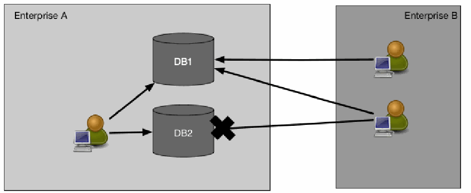
図11：エンタープライズ間コラボレーション。左にエンタープライズ A、右にエンタープライズ B の箱がある。エンタープライズ A では、コンピュータを使う利用者から 2 つの円柱 DB1 と DB2 へ矢印が向かう。エンタープライズ B では、コンピュータを使う 2 人の利用者からそれぞれ DB1 へ矢印が向かう。下側の利用者から DB2 へ向かう線は、DB2 の横の大きな×印で止まっている。
Figure 11: Cross-Enterprise Collaboration
図11：エンタープライズ間コラボレーション
This scenario can be similar to Use Case 1 (Section 4.1) as employees of both enterprises may not be located on their organizations’ network infrastructures, and the resource they need to access may be within one enterprise environment or hosted in the cloud. This means that there do not need to be complex firewall rules or enterprise-wide access control lists (ACLs) allowing certain IP addresses belonging to Enterprise B to access resources in Enterprise A based on Enterprise A’s access policies. How this access is accomplished depends on the technology in use. Similar to Use Case 1, a PE and PA hosted as a cloud service may provide availability to all parties without having to establish a VPN or similar. The employees of Enterprise B may be asked to install a software agent on their asset or access the necessary data resources through a web gateway (see Section 3.2.3).
両エンタープライズの従業員が自組織のネットワークインフラストラクチャ上に位置していない可能性があり、アクセスする必要があるリソースが一方のエンタープライズ環境内にあるか、クラウドでホストされている可能性があるため、このシナリオはユースケース1（セクション4.1）に類似することがある。これは、Enterprise Aのアクセスポリシーに基づいて、Enterprise Bに属する特定のIPアドレスがEnterprise Aのリソースにアクセスすることを許可する複雑なファイアウォールルールやエンタープライズ全体のアクセス制御リスト（ACL）が存在する必要がないことを意味する。このアクセスがどのように達成されるかは、使用されているテクノロジーに依存する。ユースケース1と同様に、クラウドサービスとしてホストされるPEおよびPAは、VPNなどを確立することなく、すべての関係者に可用性を提供する場合がある。Enterprise Bの従業員は、自身の資産にソフトウェアエージェントをインストールするか、Webゲートウェイを介して必要なデータリソースにアクセスするよう求められる場合がある（セクション3.2.3を参照）。
4.5 Enterprise with Public- or Customer-Facing Services
4.5 一般公開または顧客向けサービスを持つエンタープライズ
A common feature in many enterprises is a public-facing service that may or may not include user registration (i.e., users must create or have been issued a set of login credentials). Such services could be for the general public, a set of customers with an existing business relationship, or a special set of nonenterprise users such as employee dependents. In all cases, it is likely that requesting assets are not enterprise-owned, and the enterprise is constrained as to what internal cybersecurity polices can be enforced.
多くのエンタープライズに共通する特徴は、ユーザー登録を含む場合と含まない場合がある（すなわち、ユーザーが一連のログイン認証情報を作成するか、発行されている必要がある）一般公開サービスである。そのようなサービスは、一般公衆向け、既存の取引関係がある一連の顧客向け、または従業員の扶養家族などの特別な一連の非エンタープライズユーザー向けである可能性がある。いずれの場合も、要求元の資産はエンタープライズが所有するものではない可能性が高く、エンタープライズはどのような内部サイバーセキュリティポリシーを強制できるかについて制約を受ける。
For a general, public-facing resource that does not require login credentials to access (e.g., public web page), the tenets of ZTA do not directly apply. The enterprise cannot strictly control the state of requesting assets, and anonymous public resources (e.g., a public web page) do not require credentials in order to be accessed.
アクセスするためにログイン認証情報を必要としない一般的な一般公開リソース（例：公開ウェブページ）の場合、ZTAの基本原則は直接には適用されない。エンタープライズは要求元資産の状態を厳密に制御することはできず、匿名の公開リソース（例：公開ウェブページ）はアクセスのために認証情報を必要としない。
Enterprises may establish policies for registered public users such as customers (i.e., those with a business relationship) and special users (e.g., employee dependents). If the users are required to produce or are issued credentials, the enterprise may institute policies regarding password length, life cycle, and other details and may provide MFA as an option or requirement. However, enterprises are limited in the policies they can implement for this class of user. Information about incoming requests may be useful in determining the state of the public service and detecting possible attacks masquerading as legitimate users. For example, a registered user portal is known to be accessed by registered customers using one of a set of common web browsers. A sudden increase in access requests from unknown browser types or known outdated versions could indicate an automated attack of some kind, and the enterprise could take steps to limit requests from these identified clients. The enterprise should also be aware of any statutes or regulations regarding what information can be collected and recorded about the requesting users and assets.
エンタープライズは、顧客（すなわち取引関係のある者）や特別ユーザー（例：従業員の扶養家族）などの登録された一般ユーザーに対するポリシーを確立してもよい。ユーザーが認証情報の作成を求められるか、または認証情報を発行される場合、エンタープライズはパスワードの長さ、ライフサイクル、およびその他の詳細に関するポリシーを導入してもよく、選択肢または必須要件としてMFAを提供してもよい。ただし、エンタープライズがこのクラスのユーザーに対して実施できるポリシーには制約がある。着信リクエストに関する情報は、公開サービスの状態を判断し、正規ユーザーに偽装した潜在的な攻撃を検出するのに役立つ場合がある。例えば、登録ユーザーポータルには、登録顧客が一般的な一連のウェブブラウザのいずれかを使用してアクセスすることが分かっている。未知のブラウザタイプや既知の古いバージョンからのアクセス要求が急増した場合、何らかの自動化された攻撃を示している可能性があり、エンタープライズはこれら特定されたクライアントからの要求を制限する措置を講じることができる。エンタープライズはまた、要求元のユーザーおよび資産について収集および記録できる情報に関するあらゆる法令や規制にも留意すべきである。
5 Threats Associated with Zero Trust Architecture
5 ゼロトラストアーキテクチャに関連する脅威
No enterprise can eliminate cybersecurity risk. When complemented with existing cybersecurity policies and guidance, identity and access management, continuous monitoring, and general cyber hygiene, a properly implemented and maintained ZTA can reduce overall risk and protect against common threats. However, some threats have unique features when implementing a ZTA.
サイバーセキュリティリスクを排除できるエンタープライズはない。既存のサイバーセキュリティポリシーやガイダンス、アイデンティティおよびアクセス管理、継続的な監視、ならびに一般的なサイバーハイジーンによって補完された場合、適切に実装および維持されたZTAは全体的なリスクを低減し、一般的な脅威から保護することができる。しかし、一部の脅威は、ZTAを実装する際に特有の特徴を持つ。
5.1 Subversion of ZTA Decision Process
5.1 ZTA決定プロセスの侵害
In ZTA, the policy engine and policy administrator are the key components of the entire enterprise. No communication between enterprise resources occurs unless it is approved and possibly configured by the PE and PA. This means that these components must be properly configured and maintained. Any enterprise administrator with configuration access to the PE’s rules may be able to perform unapproved changes or make mistakes that can disrupt enterprise operations. Likewise, a compromised PA could allow access to resources that would otherwise not be approved (e.g., to a subverted, personally-owned device). Mitigating associated risks means the PE and PA components must be properly configured and monitored, and any configuration changes must be logged and subject to audit.
ZTAにおいて、ポリシーエンジンとポリシーアドミニストレーターは、エンタープライズ全体における主要なコンポーネントである。PEおよびPAによって承認され、場合によっては構成されない限り、エンタープライズリソース間の通信は発生しない。これは、これらのコンポーネントが適切に構成および維持されなければならないことを意味する。PEのルールに対する構成アクセス権を持つエンタープライズ管理者は誰であれ、未承認の変更を行ったり、エンタープライズの業務を混乱させ得るミスを犯したりする可能性がある。同様に、侵害されたPAは、本来であれば承認されないリソースへのアクセスを（例：乗っ取られた個人所有デバイスに対して）許可してしまう可能性がある。関連するリスクを軽減することは、PEおよびPAコンポーネントが適切に構成および監視され、あらゆる構成変更がログに記録され、監査の対象にならなければならないことを意味する。
5.2 Denial-of-Service or Network Disruption
5.2 サービス拒否またはネットワークの中断
In ZTA, the PA is the key component for resource access. Enterprise resources cannot connect to each other without the PA’s permission and, possibly, configuration action. If an attacker disrupts or denies access to the PEP(s) or PE/PA (i.e., DoS attack or route hijack), it can adversely impact enterprise operations. Enterprises can mitigate this threat by having the policy enforcement reside in a properly secured cloud environment or be replicated in several locations following guidance on cyber resiliency [SP 800-160v2].
ZTAにおいて、PAはリソースアクセスのための重要なコンポーネントである。エンタープライズリソースは、PAの許可および場合によっては設定アクションなしには相互に接続できない。攻撃者がPEPまたはPE/PAへのアクセスを妨害または拒否した場合（すなわち、DoS攻撃またはルートハイジャック）、エンタープライズの運用に悪影響を及ぼす可能性がある。エンタープライズは、サイバーレジリエンスに関するガイダンス［SP 800-160v2］に従い、ポリシー施行を適切に保護されたクラウド環境に配置するか、複数の場所に複製させることによって、この脅威を緩和できる。
This mitigates the risk but does not eliminate it. Botnets such as Mirai produce massive DoS attacks against key internet service providers and disrupt service to millions of internet users.5 It is also possible that an attacker could intercept and block traffic to a PEP or PA from a portion or all of the user accounts within an enterprise (e.g., a branch office or even a single remote employee). In such cases, only a portion of enterprise subjects is affected. This is also possible in legacy remote-access VPNs and is not unique to ZTA.
これはリスクを緩和するが、排除するものではない。Miraiなどのボットネットは、主要なインターネットサービスプロバイダーに対して大規模なDoS攻撃を仕掛け、数百万人のインターネットユーザーへのサービスを中断させている5。また、攻撃者がエンタープライズ内の一部のユーザーアカウントまたはすべてのユーザーアカウント（例：支社や、単一のリモート従業員でさえも）からのPEPまたはPAへのトラフィックを傍受および遮断することも考えられる。そのような場合、エンタープライズのサブジェクトの一部のみが影響を受ける。これはレガシーなリモートアクセスVPNでも起こり得ることであり、ZTAに特有のものではない。
A hosting provider may also accidentally take a cloud-based PE or PA offline. Cloud services have experienced disruptions in the past, both infrastructure as a service (IaaS)6 and SaaS.7 An operational error could prevent an entire enterprise from functioning if the policy engine or policy administrator component becomes inaccessible from the network.
ホスティングプロバイダーが、クラウドベースのPEまたはPAを誤ってオフラインにしてしまう可能性もある。クラウドサービスは過去に、インフラストラクチャ・アズ・ア・サービス（IaaS）6とSaaS7の双方で障害を経験している。ポリシーエンジンまたはポリシー管理者コンポーネントがネットワークからアクセス不能になった場合、運用の誤りによってエンタープライズ全体が機能しなくなる可能性がある。
There is also the risk that enterprise resources may not be reachable from the PA, so even if access is granted to a subject, the PA cannot configure the communication path from the network. This could happen due to a DDoS attack or simply due to unexpected heavy usage. This is similar to any other network disruption in that some or all enterprise subjects cannot access a particular resource due to that resource not being available for some reason.
また、エンタープライズリソースがPAから到達できない場合があり、その場合、サブジェクトにアクセスが許可されたとしても、PAはネットワークからの通信パスを設定できないというリスクもある。これは、DDoS攻撃や単に予期しない大量の利用によって発生する可能性がある。これは、何らかの理由で特定のリソースが利用できないために、一部またはすべてのエンタープライズサブジェクトがそのリソースにアクセスできないという点で、他のあらゆるネットワーク障害と同様である。
5.3 Stolen Credentials/Insider Threat
5.3 盗まれた認証情報／内部脅威
Properly implemented ZT, information security and resiliency policies, and best practices reduce the risk of an attacker gaining broad access via stolen credentials or insider attack. The ZT principle of no implicit trust based on network location means attackers need to compromise an existing account or device to gain a foothold in an enterprise. A properly developed and implemented ZTA should prevent a compromised account or asset from accessing resources outside its normal purview or access patterns. This means that accounts with access policies around resources that an attacker is interested in would be the primary targets for attackers.
適切に実装されたZT、情報セキュリティおよび回復力（レジリエンス）のポリシー、ならびにベストプラクティスは、盗まれた認証情報や内部関係者による攻撃を介して攻撃者が広範なアクセス権を獲得するリスクを低減する。ネットワークの場所に基づく暗黙の信頼を認めないというZTの原則は、攻撃者がエンタープライズ内での足がかりを得るために、既存のアカウントまたはデバイスを侵害する必要があることを意味する。適切に開発および実装されたZTAは、侵害されたアカウントまたは資産が、その通常の権限範囲やアクセスパターンから外れたリソースへアクセスすることを阻止すべきである。これは、攻撃者が関心を持つリソースに関するアクセスポリシーを持つアカウントが、攻撃者の主な標的になることを意味する。
Attackers may use phishing, social engineering, or a combination of attacks to obtain credentials of valuable accounts. “Valuable” may mean different things based on the attacker’s motivation. For instance, enterprise administrator accounts may be valuable, but attackers interested in financial gain may consider accounts that have access to financial or payment resources of equal value. Implementation of MFA for access requests may reduce the risk of information loss from a compromised account. However, an attacker with valid credentials (or a malicious insider) may still be able to access resources for which the account has been granted access. For example, an attacker or compromised employee who has the credentials and enterprise-owned asset of a valid human resources employee may still be able to access an employee database.
攻撃者は、価値の高いアカウントの認証情報を取得するために、フィッシング、ソーシャルエンジニアリング、または攻撃の組み合わせを使用することがある。「価値が高い」とは、攻撃者の動機に基づいて異なる意味を持つ可能性がある。例えば、エンタープライズ管理者アカウントは価値があるかもしれないが、金銭的利益に関心のある攻撃者は、財務または決済リソースへのアクセス権を持つアカウントを同等の価値があると見なすことがある。アクセス要求に対するMFAの実装は、侵害されたアカウントによる情報喪失のリスクを低減する可能性がある。しかし、有効な認証情報を持つ攻撃者（または悪意のある内部関係者）は、そのアカウントにアクセス権が付与されているリソースに依然としてアクセスできる場合がある。例えば、有効な人事部門の従業員の認証情報とエンタープライズ所有の資産を持つ攻撃者または侵害された従業員は、従業員データベースに依然としてアクセスできる可能性がある。
ZTA reduces risk and prevents any compromised accounts or assets from moving laterally throughout the network. If the compromised credentials are not authorized to access a particular resource, they will continue to be denied access to that resource. In addition, a contextual trust algorithm (see Section 3.3.1) is more likely to detect and respond quickly to this attack than when occurring in a legacy, perimeter-based network. The contextual TA can detect access patterns that are out of normal behavior and deny the compromised account or insider threat access to sensitive resources.
ZTAはリスクを低減し、侵害されたアカウントや資産がネットワーク全体でラテラルムーブメント（水平移動）を行うことを防ぐ。侵害された認証情報が特定のリソースへのアクセスを認可されていない場合、それらは引き続きそのリソースへのアクセスを拒否される。さらに、コンテキストに基づく信頼アルゴリズム（セクション3.3.1を参照）は、レガシーな境界型ネットワークで発生した場合よりも、この攻撃を迅速に検知して対応できる可能性が高い。コンテキストTAは、通常の振る舞いから外れたアクセスパターンを検出し、侵害されたアカウントまたは内部脅威による機密リソースへのアクセスを拒否することができる。
5.4 Visibility on the Network
5.4 ネットワークの可視性
As mentioned in Section 3.4.1, all traffic is inspected and logged on the network and analyzed to identify and react to potential attacks against the enterprise. However, as also mentioned, some (possibly the majority) of the traffic on the enterprise network may be opaque to layer 3 network analysis tools. This traffic may originate from nonenterprise-owned assets (e.g., contracted services that use the enterprise infrastructure to access the internet) or applications/services that are resistant to passive monitoring. The enterprise that cannot perform deep packet inspection or examine the encrypted traffic and must use other methods to assess a possible attacker on the network.
セクション3.4.1で言及したように、すべてのトラフィックはネットワーク上で検査およびログ記録され、エンタープライズに対する潜在的な攻撃を特定して対処するために分析される。しかし、同じく言及したように、エンタープライズネットワーク上のトラフィックの一部（場合によっては大半）は、レイヤー3ネットワーク分析ツールにとって不透明である可能性がある。このトラフィックは、エンタープライズが所有していない資産（例：インターネットにアクセスするためにエンタープライズインフラストラクチャを使用する契約サービス）や、パッシブモニタリングに耐性のあるアプリケーション／サービスから発信されている場合がある。ディープパケットインスペクションを実行できない、または暗号化されたトラフィックを調査できないエンタープライズは、ネットワーク上の潜在的な攻撃者を評価するために他の手法を使用しなければならない。
That does not mean that the enterprise is unable to analyze encrypted traffic that it sees on the network. The enterprise can collect metadata (e.g., source and destination addresses, etc.) about the encrypted traffic and use that to detect an active attacker or possible malware communicating on the network. Machine learning techniques [Anderson] can be used to analyze traffic that cannot be decrypted and examined. Employing this type of machine learning would allow the enterprise to categorize traffic as valid or possibly malicious and subject to remediation.
これは、エンタープライズがネットワーク上で確認する暗号化されたトラフィックを分析できないことを意味するわけではない。エンタープライズは暗号化されたトラフィックに関するメタデータ（例：送信元および送信先アドレスなど）を収集し、それを利用してネットワーク上で通信しているアクティブな攻撃者や潜在的なマルウェアを検知できる。機械学習技術[Anderson]を使用して、復号して調査することができないトラフィックを分析することができる。このタイプの機械学習を採用することで、エンタープライズはトラフィックを正当なもの、または潜在的に悪意があり修復の対象となるものとして分類できるようになる。
5.5 Storage of System and Network Information
5.5 システムおよびネットワーク情報の保管
A related threat to enterprise monitoring and analysis of network traffic is the analysis component itself. If monitor scans, network traffic, and metadata are being stored for building contextual policies, forensics, or later analysis, that data becomes a target for attackers. Just like network diagrams, configuration files, and other assorted network architecture documents, these resources should be protected. If an attacker can successfully gain access to this information, they may be able to gain insight into the enterprise architecture and identify assets for further reconnaissance and attack.
エンタープライズによるネットワークトラフィックの監視および分析に対する、関連する脅威の1つは、分析コンポーネント自体である。コンテキストに応じたポリシーの構築、フォレンジック、またはその後の分析のために監視スキャン、ネットワークトラフィック、およびメタデータが保存されている場合、それらのデータは攻撃者の標的となる。ネットワーク図、構成ファイル、その他の各種ネットワークアーキテクチャ文書と同様に、これらのリソースは保護されるべきである。攻撃者がこの情報へのアクセスに成功した場合、エンタープライズアーキテクチャに対する知見を獲得し、さらなる偵察や攻撃の対象となる資産を特定できる可能性がある。
Another source of reconnaissance information for an attacker in a ZT enterprise is the management tool used to encode access policies. Like stored traffic, this component contains access policies to resources and can give an attacker information on which accounts are most valuable to compromise (e.g., the ones that have access to the desired data resources).
ZTエンタープライズにおける攻撃者にとってのもう1つの偵察情報の情報源は、アクセスポリシーをエンコードするために使用される管理ツールである。保存されたトラフィックと同様に、このコンポーネントにはリソースへのアクセスポリシーが含まれており、侵害する価値が最も高いアカウントはどれか（例：目的のデータリソースへのアクセス権を持つアカウント）に関する情報を攻撃者に与える可能性がある。
As for all valuable enterprise data, adequate protections should be in place to prevent unauthorized access and access attempts. As these resources are vital to security, they should have the most restrictive access policies and be accessible only from designated or dedicated administrator accounts.
すべての価値あるエンタープライズデータと同様に、不正アクセスおよびアクセスの試みを防止するために適切な保護策が講じられるべきである。これらのリソースはセキュリティにとって極めて重要であるため、最も制限の厳しいアクセスポリシーが適用され、指定または専用の管理者アカウントからのみアクセス可能であるべきである。
5.6 Reliance on Proprietary Data Formats or Solutions
5.6 プロプライエタリなデータ形式またはソリューションへの依存
ZTA relies on several different data sources to make access decisions, including information about the requesting subject, asset used, enterprise and external intelligence, and threat analysis. Often, the assets used to store and process this information do not have a common, open standard on how to interact and exchange information. This can lead to instances where an enterprise is locked into a subset of providers due to interoperability issues. If one provider has a security issue or disruption, an enterprise may not be able to migrate to a new provider without extreme cost (e.g., replacing several assets) or going through a long transition program (e.g., translating policy rules from one proprietary format to another). Like DoS attacks, this risk is not unique to ZTA, but because ZTA is heavily dependent on the dynamic access of information (both enterprise and service providers), disruption can affect the core business functions of an enterprise. To mitigate associated risks, enterprises should evaluate service providers on a holistic basis by considering factors such as vendor security controls, enterprise switching costs, and supply chain risk management in addition to more typical factors such as performance, stability, etc.
ZTAはアクセス決定を行うために、要求元のサブジェクトに関する情報、使用されている資産、エンタープライズおよび外部のインテリジェンス、脅威分析など、いくつかの異なるデータソースに依存している。多くの場合、この情報を保存および処理するために使用される資産には、相互作用および情報交換の方法に関する共通のオープンな標準がない。これにより、相互運用性の問題が原因で、エンタープライズが一部のプロバイダーにロックインされる事態につながる可能性がある。1つのプロバイダーにセキュリティ上の問題や中断が発生した場合、エンタープライズは多大なコスト（例：複数の資産の置き換え）をかけるか、または長期の移行プログラム（例：あるプロプライエタリな形式から別の形式へのポリシールールの変換）を経なければ、新しいプロバイダーへ移行できない可能性がある。DoS攻撃と同様に、このリスクはZTAに特有のものではないが、ZTAは情報の動的アクセス（エンタープライズとサービスプロバイダーの両方）に大きく依存しているため、中断はエンタープライズの中核となる業務機能に影響を及ぼす可能性がある。関連するリスクを軽減するために、エンタープライズは、パフォーマンスや安定性などのより一般的な要素に加えて、ベンダーのセキュリティ管理策、エンタープライズの切り替えコスト、サプライチェーンリスク管理などの要素を考慮し、総合的な観点からサービスプロバイダーを評価すべきである。
5.7 Use of Non-person Entities (NPE) in ZTA Administration
5.7 ZTA管理における非人間エンティティ（NPE）の利用
Artificial intelligence and other software-based agents are being deployed to manage security issues on enterprise networks. These components need to interact with the management components of ZTA (e.g., policy engine, policy administrator), sometimes in lieu of a human administrator. How these components authenticate themselves in an enterprise implementing a ZTA is an open issue. It is assumed that most automated technology systems will use some means to authenticate when using an API to resource components.
エンタープライズネットワーク上のセキュリティ問題を管理するために、人工知能やその他のソフトウェアベースのエージェントが導入されている。これらのコンポーネントは、時には人間の管理者の代わりに、ZTAの管理コンポーネント（例：ポリシーエンジン、ポリシーアドミニストレーター）とやり取りする必要がある。ZTAを実装しているエンタープライズにおいて、これらのコンポーネントがどのように自身を認証するかは、未解決の課題である。ほとんどの自動化技術システムは、リソースコンポーネントへのAPIを使用する際に、何らかの手段を用いて認証を行うことが想定されている。
The biggest risk when using automated technology for configuration and policy enforcement is the possibility of false positives (innocuous actions mistaken for attacks) and false negatives (attacks mistaken for normal activity) impacting the security posture of the enterprise. This can be reduced with regular retuning analysis to correct mistaken decisions and improve the decision process.
設定およびポリシー施行のために自動化技術を使用する際の最大のリスクは、偽陽性（害のない行動を攻撃と誤認すること）および偽陰性（攻撃を正常なアクティビティと誤認すること）がエンタープライズのセキュリティ態勢に影響を与える可能性があることである。これは、誤った決定を修正し決定プロセスを改善するための定期的な再調整分析によって低減できる。
The associated risk is that an attacker will be able to induce or coerce an NPE to perform some task that the attacker is not privileged to perform. The software agent may have a lower bar for authentication (e.g., API key versus MFA) to perform administrative or security-related tasks compared with a human user. If an attacker can interact with the agent, they could theoretically trick the agent into allowing the attacker greater access or into performing some task on behalf of the attacker. There is also a risk that an attacker could gain access to a software agent’s credentials and impersonate the agent when performing tasks.
これに関連するリスクは、攻撃者がNPEを誘導または強制して、その攻撃者自身には実行権限がない何らかのタスクを実行させることができる点である。ソフトウェアエージェントは、人間のユーザーと比較して、管理タスクやセキュリティ関連タスクを実行するための認証のハードルが低い場合がある（例：MFAに対するAPIキー）。攻撃者がエージェントとやり取りできる場合、理論上はエージェントを騙して、攻撃者に対してより大きなアクセス権を許可させたり、攻撃者に代わって何らかのタスクを実行させたりすることが可能である。また、攻撃者がソフトウェアエージェントの認証情報へのアクセス権を取得し、タスクの実行時にそのエージェントになりすます可能性があるというリスクも存在する。
6 Zero Trust Architecture and Possible Interactions with Existing Federal Guidance
6 ゼロトラストアーキテクチャおよび既存の連邦政府ガイダンスとの潜在的な相互作用
Several existing federal policies and guidance intersect with the planning, deployment, and operation of a ZTA. These policies do not prohibit an enterprise from moving to a more zero trust-oriented architecture but can influence development of a zero trust strategy for an agency. When complemented with existing cybersecurity policies and guidance, ICAM, continuous monitoring, and general cyber hygiene, ZTA may reinforce an organization’s security posture and protect against common threats.
既存のいくつかの連邦政府のポリシーおよびガイダンスは、ZTAの計画、導入、および運用と交差する。これらのポリシーは、エンタープライズがよりゼロトラスト志向のアーキテクチャへ移行することを禁止するものではないが、政府機関におけるゼロトラスト戦略の策定に影響を与える可能性がある。既存のサイバーセキュリティポリシーやガイダンス、ICAM、継続的モニタリング、および一般的なサイバーハイジーンによって補完される場合、ZTAは組織のセキュリティ態勢を強化し、一般的な脅威から保護し得る。
6.1 ZTA and NIST Risk Management Framework
6.1 ZTAおよびNISTリスクマネジメントフレームワーク
A ZTA deployment involves developing access polices around acceptable risk to the designated mission or business process (see Section 7.3.3). It is possible to deny all network access to a resource and allow access only via a connected terminal, but this is disproportionately restrictive in the majority of cases and could inhibit work from being accomplished. For a federal agency to perform its mission, there is an acceptable level of risk. The risks associated with performing the given mission must be identified and evaluated, and either accepted or mitigated. To assist in this, the NIST Risk Management Framework (RMF) was developed [SP800-37].
ZTAの導入には、指定されたミッションまたは業務プロセスに対する許容可能なリスクに基づいたアクセスポリシーの策定が含まれる（セクション7.3.3を参照）。リソースへのすべてのネットワークアクセスを拒否し、接続された端末経由のアクセスのみを許可することも可能であるが、これは大部分のケースにおいて過度に制限的であり、業務の遂行を妨げる可能性がある。連邦政府機関がそのミッションを遂行する上では、許容可能なリスク水準が存在する。所定のミッション遂行に伴うリスクは特定および評価され、受容されるか軽減されるかのいずれかでなければならない。これを支援するために、NISTリスクマネジメントフレームワーク（RMF）が策定された [SP800-37]。
ZTA planning and implementation may change the authorization boundaries defined by the enterprise. This is due to the addition of new components (e.g., policy engine, policy administrator, and PEPs) and a reduction of reliance on network perimeter defenses. The overall process described in the RMF will not change in a ZTA.
ZTAの計画および実装によって、エンタープライズが定義した認可境界が変化する場合がある。これは、新たなコンポーネント（例：ポリシーエンジン、ポリシーアドミニストレーター、PEP）の追加と、ネットワーク境界防御への依存度の低減によるものである。RMFに記述されている全体的なプロセスは、ZTAにおいても変化しない。
6.2 Zero Trust and NIST Privacy Framework
6.2 ゼロトラストおよびNISTプライバシーフレームワーク
Protecting the privacy of users and private information (e.g., personally identifiable information) is a prime concern for organizations. Privacy and data protections are included in compliance programs such as FISMA and the Heath Insurance Portability and Accountability Act (HIPAA). In response, NIST produced a Privacy Framework for use by organizations [NISTPRIV]. This document provides a framework to describe privacy risks and mitigation strategies, as well as a process for an enterprise to identify, measure, and mitigate risks to user privacy and private information stored and processed by an organization. This includes personal information used by the enterprise to support ZTA operations and any biometric attributes used in access request evaluations.
ユーザーのプライバシーおよびプライベートな情報（例：個人を特定できる情報）の保護は、組織にとって最重要の関心事である。プライバシーおよびデータ保護は、FISMAや医療保険の携行性と責任に関する法律（HIPAA）などのコンプライアンスプログラムに含まれている。これを受けて、NISTは組織による利用を目的としたプライバシーフレームワークを作成した [NISTPRIV]。この文書は、プライバシーリスクおよび軽減戦略を記述するためのフレームワークを提供するとともに、組織が保存および処理するユーザーのプライバシーやプライベートな情報に対するリスクを、エンタープライズが特定、測定、軽減するためのプロセスを提供する。これには、ZTA運用を支援するためにエンタープライズによって使用される個人情報や、アクセス要求の評価において使用されるあらゆる生体認証属性が含まれる。
Part of the core requirements for ZT is that an enterprise should inspect and log traffic (or at least log and inspect metadata when dealing with traffic that cannot be decrypted by monitoring systems) in its environment. Some of this traffic may contain private information or have associated privacy risks. Organizations will need to identify any possible risks associated with intercepting, scanning, and logging network traffic [NISTIR 8062]. This may include actions such as informing users, obtaining consent (via a login page, banner, or similar), and educating enterprise users. The NIST Privacy Framework [NISTPRIV] could help in developing a formal process to identify and mitigate any privacy-related risks to an enterprise developing a zero trust architecture.
ZTの中核的な要件の一部として、エンタープライズはその環境内のトラフィックを検査およびログ記録すべき（あるいは、監視システムで復号できないトラフィックを扱う場合は、少なくともメタデータをログ記録および検査すべき）であるという点がある。このトラフィックの一部には、プライベートな情報が含まれているか、関連するプライバシーリスクが存在する可能性がある。組織は、ネットワークトラフィックの傍受、スキャン、ログ記録に関連するあらゆる潜在的リスクを特定する必要がある [NISTIR 8062]。これには、ユーザーへの通知、同意の取得（ログインページ、バナー、または類似の手段を介して）、エンタープライズユーザーへの教育といった対応が含まれる場合がある。NISTプライバシーフレームワーク [NISTPRIV] は、ゼロトラストアーキテクチャを策定するエンタープライズに対するあらゆるプライバシー関連のリスクを特定し軽減するための正式なプロセスを構築する上で役立つ可能性がある。
6.3 ZTA and Federal Identity, Credential, and Access Management Architecture
6.3 ZTAと連邦アイデンティティ・認証情報・アクセス管理アーキテクチャ
Subject provisioning is a key component of ZTA. The policy engine cannot determine if attempted connections are authorized to connect to a resource if the PE has insufficient information to identify associated subjects and resources. Strong subject provision and authentication policies need to be in place before moving to a more zero trust–aligned deployment. Enterprises need a clear set of subject attributes and policies that can be used by a PE to evaluate access requests.
サブジェクトのプロビジョニングはZTAの主要な構成要素である。ポリシーエンジンは、PEが関連するサブジェクトとリソースを特定するための十分な情報を持たない場合、試行された接続がリソースへの接続を認可されているかどうかを判断できない。よりゼロトラストに即した導入へ移行する前に、強力なサブジェクトプロビジョニングおよび認証ポリシーが整備されている必要がある。エンタープライズには、アクセス要求を評価するためにPEが利用できる、明確なサブジェクト属性およびポリシーのセットが必要である。
The Office of Management and Budget (OMB) issued M-19-17 on improving identity management for the Federal Government. The goal of the policy is to develop “…a common vision for identity as an enabler of mission delivery, trust, and safety of the Nation” [M-19-17]. The memo calls on all federal agencies to form an ICAM office to govern efforts related to identity issuance and management. Many of these management policies should use the recommendations in NIST SP 800-63-3, Digital Identity Guidelines [SP800-63]. As ZTA is heavily dependent on precise identity management, any ZTA effort will need to integrate the agency’s ICAM policy.
行政管理予算局（OMB）は、連邦政府のアイデンティティ管理の改善に関するM-19-17を発行した。このポリシーの目標は、「…国家の任務遂行、信頼、および安全を可能にするものとしてのアイデンティティに関する共通のビジョン」を策定することである [M-19-17]。この覚書は、アイデンティティの発行および管理に関連する取り組みを統括するICAMオフィスを設置するよう、すべての連邦機関に求めている。これらの管理ポリシーの多くは、NIST SP 800-63-3『Digital Identity Guidelines』[SP800-63] の推奨事項を利用すべきである。ZTAは正確なアイデンティティ管理に大きく依存しているため、いかなるZTAの取り組みも、その機関のICAMポリシーを統合する必要がある。
6.4 ZTA and Trusted Internet Connections 3.0
6.4 ZTAとTrusted Internet Connections 3.0
TIC is a federal cybersecurity initiative jointly managed by OMB, DHS, and the General Services Administration (GSA), and is intended to establish a network security baseline across the Federal Government. Historically, TIC was a perimeter-based cybersecurity strategy which required agencies to consolidate and monitor their external network connections. Inherent in TIC 1.0 and TIC 2.0 is the assumption that the inside of the perimeter is “trusted,” whereas ZTA assumes that network location does not infer “trust” (i.e., there is no “trust” on an agency’s internal network). TIC 2.0 provides a list of network-based security capabilities (e.g. content filtering, monitoring, authentication, and others) to be deployed at the TIC Access Point at the agency’s perimeter; many of these capabilities are aligned with ZT principles.
TICは、OMB、DHS、および一般調達局（GSA）が共同で管理する連邦サイバーセキュリティイニシアチブであり、連邦政府全体でネットワークセキュリティのベースラインを確立することを目的としている。歴史的に、TICは境界型のサイバーセキュリティ戦略であり、各機関に対して外部ネットワーク接続の集約と監視を求めていた。TIC 1.0およびTIC 2.0には境界の内側が「信頼されている」という前提が内在しているのに対し、ZTAはネットワークの場所が「信頼」を意味しない（すなわち、機関の内部ネットワーク上に「信頼」は存在しない）と仮定する。TIC 2.0は、機関の境界にあるTICアクセスポイントに配備すべきネットワークベースのセキュリティ機能（例：コンテンツフィルタリング、監視、認証など）のリストを提供しており、これらの機能の多くはZTの原則と整合している。
TIC 3.0 has been updated to accommodate cloud services and mobile devices [M-19-26]. In TIC 3.0, it is recognized that the definition of “trust” may vary across specific computing contexts and that agencies have different risk tolerances for defining trust zones. In addition, TIC 3.0 has an updated TIC Security Capability Handbook, which defines two types of security capabilities: (1) Universal Security Capabilities that apply at the enterprise level, and (2) PEP Security Capabilities that are network-level capabilities to be applied to multiple policy enforcement points (PEPs), as defined in TIC use cases. The PEP Security Capabilities may be applied at any appropriate PEP located along a given data flow instead of at a single PEP at the agency perimeter. Many of these TIC 3.0 security capabilities directly support ZTA (e.g., encrypted traffic, strong authentication, microsegmentation, network and system inventory, and others). TIC 3.0 defines specific use cases that describe the implementation of trust zones and security capabilities across specific applications, services, and environments.
TIC 3.0は、クラウドサービスやモバイルデバイスに対応するよう更新されている [M-19-26]。TIC 3.0では、「信頼」の定義が特定のコンピューティングコンテキストによって異なる場合があること、また信頼ゾーンを定義する際のリスク許容度が機関ごとに異なることが認識されている。さらに、TIC 3.0には更新されたTIC Security Capability Handbookがあり、2種類のセキュリティ機能を定義している。(1) エンタープライズレベルで適用されるUniversal Security Capabilities（ユニバーサルセキュリティ機能）、および (2) TICのユースケースで定義されているように、複数のポリシー執行ポイント（PEP）に適用されるネットワークレベルの機能であるPEP Security Capabilities（PEPセキュリティ機能）である。PEPセキュリティ機能は、機関の境界にある単一のPEPではなく、所定のデータフローに沿って配置された適切な任意のPEPに適用することができる。これらTIC 3.0のセキュリティ機能の多くは、ZTAを直接サポートしている（例：暗号化されたトラフィック、強力な認証、マイクロセグメンテーション、ネットワークおよびシステムのインベントリなど）。TIC 3.0は、特定のアプリケーション、サービス、環境にわたる信頼ゾーンとセキュリティ機能の実装を記述した具体的なユースケースを定義している。
TIC 3.0 is focused on network-based security protections, whereas ZTA is a more inclusive architecture addressing application, user, and data protections. As TIC 3.0 evolves its use cases, it is likely that a ZTA TIC use case will be developed to define the network protections to be deployed at ZTA enforcement points.
TIC 3.0がネットワークベースのセキュリティ保護に焦点を当てているのに対し、ZTAはアプリケーション、ユーザー、およびデータの保護に対処する、より包括的なアーキテクチャである。TIC 3.0がそのユースケースを発展させるにつれて、ZTAの執行ポイントに配備されるネットワーク保護を定義するために、ZTA TICユースケースが策定される可能性が高い。
6.5 ZTA and EINSTEIN (NCPS – National Cybersecurity Protection System)
6.5 ZTAとEINSTEIN（NCPS – National Cybersecurity Protection System）
NCPS (operationally known as EINSTEIN) is an integrated system-of-systems that delivers intrusion detection, advanced analytics, information sharing, and intrusion prevention capabilities to defend the Federal Government from cyber threats. The goals of NCPS, which align with the overarching goals of zero trust, are to manage cyber risk, improve cyber protection, and empower partners to secure cyber space. EINSTEIN sensors enable CISA’s National Cybersecurity and Communications Integration Center (NCCIC) to defend federal networks and respond to significant incidents at federal agencies.
NCPS（運用上はEINSTEINとして知られる）は、連邦政府をサイバー脅威から防御するための侵入検知、高度なアナリティクス、情報共有、および侵入防止機能を提供する統合されたシステムオブシステムズ（system-of-systems）である。ゼロトラストの包括的な目標と一致するNCPSの目標は、サイバーリスクの管理、サイバー保護の向上、およびサイバースペースを保護するためのパートナーの能力強化である。EINSTEINセンサーにより、CISAの国家サイバーセキュリティ・通信統合センター（NCCIC）は連邦ネットワークを防護し、連邦機関における重大なインシデントに対応することが可能となる。
The placement of NCPS sensors for DHS situational awareness is based on a perimeter network defense in the Federal Government, while ZTA moves protections closer to the assets, data and all other resources. The NCPS program is evolving to ensure that situational awareness is preserved through utilization of security information about cloud-based traffic, helping to set the foundation for expanded situational awareness telemetry from ZTA systems. NCPS intrusion prevention functions would also require evolution to be able to inform policy enforcement at both the current NCPS locations as well as ZTA systems. As ZTA is adopted across the Federal Government, the NCPS implementation would need to continually evolve, or new capabilities would need to be deployed to fulfill NCPS objectives. Incident responders could potentially leverage information from the authentication, traffic inspection, and logging of agency traffic available to federal agencies that have implemented a zero trust architecture. Information generated in a ZTA may better inform event impact quantification; machine learning tools could use ZTA data to improve detection; and additional logs from ZTA may be saved for after-the-fact analyses by incident responders.
DHSの状況認識のためのNCPSセンサーの配置は連邦政府における境界型ネットワーク防御に基づいているが、ZTAは保護機能を資産、データ、およびその他すべてのリソースのより近くへと移行させる。NCPSプログラムは、クラウドベースのトラフィックに関するセキュリティ情報の活用を通じて状況認識が確実に維持されるよう進化しており、ZTAシステムからの拡張された状況認識テレメトリの基盤構築に寄与している。NCPSの侵入防止機能についても、現在のNCPSの配備場所とZTAシステムの両方においてポリシー施行に情報を提供できるように進化が求められる。連邦政府全体でZTAが採用されるにつれて、NCPSの実装は継続的に進化する必要があるか、あるいはNCPSの目標を達成するために新たな機能の配備が必要となる。インシデント対応者は、ゼロトラストアーキテクチャを実装した連邦機関が利用可能な、機関のトラフィックの認証、トラフィック検査、およびロギングから得られる情報を活用できる可能性がある。ZTAで生成された情報は、イベント影響の定量化により適切な情報を提供する可能性があり、機械学習ツールはZTAデータを使用して検知を向上させることができ、ZTAからの追加ログはインシデント対応者による事後分析のために保存される可能性がある。
6.6 ZTA and DHS Continuous Diagnostics and Mitigations (CDM) Program
6.6 ZTAとDHSの継続的診断および緩和（CDM）プログラム
The DHS CDM program is an effort to improve federal agency information technology (IT). Vital to that posture is an agency’s insight into the assets, configuration, and subjects within itself. To protect a system, agencies need to set up processes to discover and understand the basic components and actors in their infrastructure:
DHSのCDMプログラムは、連邦機関の情報技術（IT）を向上させる取り組みである。その態勢において極めて重要なのは、機関自体の内部にある資産、構成、およびサブジェクトに対する機関のインサイトである。システムを保護するために、機関はインフラストラクチャ内の基本的な構成要素とアクターを発見し把握するためのプロセスを確立する必要がある：
•What is connected? What devices, applications, and services are used by the organization? This includes observing and improving the security posture of these artifacts as vulnerabilities and threats are discovered.
•何が接続されているか？組織によってどのようなデバイス、アプリケーション、およびサービスが使用されているか？これには、脆弱性や脅威が発見されるにつれて、これらのアーティファクトのセキュリティ態勢を観察し改善することが含まれる。
•Who is using the network? What users are part of the organization or are external and allowed to access enterprise resources? These include NPEs that may be performing autonomous actions.
•誰がネットワークを使用しているか？どのユーザーが組織に所属しているか、あるいは外部のユーザーであってエンタープライズリソースへのアクセスを許可されているか？これらには、自律的なアクションを実行している可能性のあるNPEが含まれる。
•What is happening on the network? An enterprise needs insight into traffic patterns and messages between systems.
•ネットワーク上で何が起きているか？エンタープライズは、トラフィックパターンおよびシステム間のメッセージに対するインサイトを必要としている。
•How is data protected? The enterprise needs a set policy on how information is protected at rest, in transit, and in use.
•データはどのように保護されているか？エンタープライズは、保存時、転送時、および使用時に情報がどのように保護されるかに関する定められたポリシーを必要としている。
Having a strong CDM program implementation is key to the success of ZTA. For example, to move to ZTA, an enterprise must have a system to discover and record physical and virtual assets to create a usable inventory. The DHS CDM program has initiated several efforts to build the capabilities needed within federal agencies to move to a ZTA. For example, the DHS Hardware Asset Management (HWAM) [HWAM] program is an effort to help agencies identify devices on their network infrastructure to deploy a secure configuration. This is similar to the first steps in developing a road map to ZTA. Agencies must have visibility into the assets active on the network (or those accessing resources remotely) to categorize, configure, and monitor the network’s activity.
強力なCDMプログラムの実装を持つことは、ZTAの成功への鍵となる。例えば、ZTAへ移行するために、エンタープライズは利用可能なインベントリを作成すべく、物理的および仮想的な資産を発見して記録するシステムを備えていなければならない。DHSのCDMプログラムは、ZTAへの移行に向けて連邦機関内で必要とされる能力を構築するためのいくつかの取り組みを開始している。例えば、DHSのハードウェア資産管理（HWAM）[HWAM]プログラムは、安全な構成を展開するために機関がネットワークインフラストラクチャ上のデバイスを特定するのを支援する取り組みである。これは、ZTAへのロードマップを作成する際の最初のステップに類似している。機関は、ネットワークのアクティビティを分類、構成、および監視するために、ネットワーク上でアクティブな資産（またはリソースにリモートアクセスしている資産）に対する可視性を確保しなければならない。
6.7 ZTA, Cloud Smart, and the Federal Data Strategy
6.7 ZTA、Cloud Smart、および連邦データ戦略
The Cloud Smart8 strategy, updated Data Center Optimization Initiative [M-19-19] policy, and Federal Data Strategy9 all influence some requirements for agencies planning a ZTA. These policies require agencies to inventory and assess how they collect, store, and access data, both on premises and in the cloud.
Cloud Smart8戦略、更新されたデータセンター最適化イニシアチブ（Data Center Optimization Initiative）[M-19-19]ポリシー、および連邦データ戦略（Federal Data Strategy）9はすべて、ZTAを計画している機関に対するいくつかの要件に影響を与える。これらのポリシーは、オンプレミスとクラウドの双方において、機関がデータをどのように収集および保存し、どのようにデータにアクセスしているかをインベントリ化し、評価することを義務付けている。
This inventory is critical to determining what business processes and resources would benefit from implementing a ZTA. Data resources and applications and services that are primarily cloud-based or primarily used by remote workers are good candidates for a ZTA approach (see Section 7.3.3) because the subjects and resources are located outside of the enterprise network perimeter and are likely to see the most benefit in use, scalability, and security.
このインベントリは、ZTAの実装からどのビジネスプロセスやリソースが恩恵を受けるかを判断する上で極めて重要である。主にクラウドベースであるか、主にリモートワーカーによって使用されているデータリソース、アプリケーション、およびサービスは、サブジェクトとリソースがエンタープライズネットワーク境界の外側に配置されており、使用、スケーラビリティ、およびセキュリティにおいて最大の恩恵を受ける可能性が高いため、ZTAアプローチの適切な候補となる（セクション7.3.3を参照）。
One additional consideration with the Federal Data Strategy is how to make agency data assets accessible to other agencies or the public. This corresponds with the cross-enterprise collaboration ZTA use case (see Section 4.4). Agencies using a ZTA for these assets may need to take collaboration or publication requirements into account when developing the strategy.
連邦データ戦略における追加の検討事項の1つは、機関のデータ資産を他の機関や一般の人々がアクセスできるようにする方法である。これは、エンタープライズ間コラボレーションのZTAユースケースに対応している（セクション4.4を参照）。これらの資産に対してZTAを使用する機関は、戦略を策定する際にコラボレーションまたは公開の要件を考慮に入れる必要があるかもしれない。
7 Migrating to a Zero Trust Architecture
7 ゼロトラストアーキテクチャへの移行
Implementing a ZTA is a journey rather than a wholesale replacement of infrastructure or processes. An organization should seek to incrementally implement zero trust principles, process changes, and technology solutions that protect its highest value data assets. Most enterprises will continue to operate in a hybrid zero-trust/perimeter-based mode for an indefinite period while continuing to invest in ongoing IT modernization initiatives. Having an IT modernization plan that includes moving to an architecture based on ZT principles may help an enterprise form roadmaps for small scale workflow migrations.
ZTAの導入は、インフラストラクチャやプロセスの全面的な置き換えというよりも、段階的に進む道のりである。組織は、最も価値の高いデータ資産を保護するゼロトラストの原則、プロセスの変更、およびテクノロジーソリューションを漸進的に導入することを目指すべきである。ほとんどのエンタープライズは、進行中のIT近代化の取り組みに投資し続ける一方で、ゼロトラストと境界型のハイブリッドモードでの運用を無期限に継続することになる。ZTの原則に基づいたアーキテクチャへの移行を含むIT近代化計画を持つことは、エンタープライズが小規模なワークフローの移行に向けたロードマップを策定するのに役立つ場合がある。
How an enterprise migrates to a strategy depends on its current cybersecurity posture and operations. An enterprise should reach a baseline of competence before it becomes possible to deploy a significant ZT-focused environment [ACT-IAC]. This baseline includes having assets, subjects, business processes, traffic flows and dependency mappings identified and cataloged for the enterprise. The enterprise needs this information before it can develop a list of candidate business processes and the subjects/assets involved in this process.
エンタープライズがどのように戦略へと移行するかは、現在のサイバーセキュリティ態勢と運用状況に依存する。エンタープライズは、ZTに重点を置いた相当規模の環境を展開できるようになる前に、ベースラインとなる能力に達しているべきである [ACT-IAC]。このベースラインには、エンタープライズにおける資産、サブジェクト、ビジネスプロセス、トラフィックフロー、および依存関係のマッピングが特定され、カタログ化されていることが含まれる。エンタープライズは、候補となるビジネスプロセスおよびそのプロセスに関与するサブジェクト/資産のリストを作成できるようになる前に、この情報を必要とする。
7.1 Pure Zero Trust Architecture
7.1 純粋なゼロトラストアーキテクチャ
In a greenfield approach, it would be possible to build a zero trust architecture from the ground up. Assuming the enterprise knows the applications/services and workflows that it wants to use for its operations, it can produce an architecture based on zero trust tenets for those workflows. Once the workflows are identified, the enterprise can narrow down the components needed and begin to map how the individual components interact. From that point, it is an engineering and organizational exercise in building the infrastructure and configuring the components. This may include additional organizational changes depending on how the enterprise is currently set up and operating.
グリーンフィールドアプローチでは、ゼロトラストアーキテクチャを一から構築することが可能である。業務に使用したいアプリケーション/サービスやワークフローをエンタープライズが把握していると仮定すると、それらのワークフローに対してゼロトラストの基本理念に基づいたアーキテクチャを作成できる。ワークフローが特定されれば、エンタープライズは必要なコンポーネントを絞り込み、個々のコンポーネントがどのように相互作用するかのマッピングを開始できる。その時点からは、インフラストラクチャの構築とコンポーネントの構成を行うエンジニアリング上および組織上の作業となる。これには、エンタープライズが現在どのようにセットアップされ運用されているかに応じて、さらなる組織的変更が含まれる場合がある。
In practice, this is rarely a viable option for federal agencies or any organization with an existing network. However, there may be times when an organization is asked to fulfill a new responsibility that would require building its own infrastructure. In these cases, it might be possible to introduce ZT concepts to some degree. For example, an agency may be given a new responsibility that entails building a new application, service, or database. The agency could design the newly needed infrastructure around ZT principles and secure system engineering [SP8900-160v1], such as evaluating subjects’ trust before granting access and establishing micro-perimeters around new resources. The degree of success depends on how dependent this new infrastructure is on existing resources (e.g., ID management systems).
実際には、連邦政府機関や既存のネットワークを持つ組織にとって、これが実行可能な選択肢となることは稀である。しかし、組織が独自のインフラストラクチャの構築を必要とする新たな責務を果たすよう求められる場合もある。これらのケースでは、ZTの概念をある程度導入することが可能な場合がある。例えば、ある機関が新しいアプリケーション、サービス、またはデータベースの構築を伴う新しい責務を与えられることがある。その機関は、アクセスを許可する前のサブジェクトの信頼性評価や新しいリソースの周囲へのマイクロペリメーターの確立など、ZTの原則とセキュアシステムエンジニアリング [SP8900-160v1] を中心に、新たに必要とされるインフラストラクチャを設計することができるだろう。成功の度合いは、この新しいインフラストラクチャが既存のリソース（ID管理システムなど）にどれだけ依存しているかによって決まる。
7.2 Hybrid ZTA and Perimeter-Based Architecture
7.2 ハイブリッドZTAおよび境界型アーキテクチャ
It is unlikely that any significant enterprise can migrate to zero trust in a single technology refresh cycle. There may be an indefinite period when ZTA workflows coexist with non-ZTA workflows in an enterprise. Migration to a ZTA approach to the enterprise may take place one business process at a time. The enterprise needs to make sure that the common elements (e.g., ID management, device management, event logging) are flexible enough to operate in a ZTA and perimeter-based hybrid security architecture. Enterprise architects may also want to restrict ZTA candidate solutions to those that can interface with existing components.
いかなる規模の大きいエンタープライズであっても、単一のテクノロジー更新サイクルでゼロトラストへ移行できる可能性は低い。エンタープライズ内において、ZTAワークフローと非ZTAワークフローが共存する期間が無期限に続く場合がある。エンタープライズに対するZTAアプローチへの移行は、一度に1つのビジネスプロセスずつ行われる可能性がある。エンタープライズは、共通の要素（例：ID管理、デバイス管理、イベントログ記録）が、ZTAと境界型のハイブリッドセキュリティアーキテクチャで運用できるだけの十分な柔軟性を備えていることを確認する必要がある。また、エンタープライズアーキテクトは、ZTAの候補となるソリューションを既存のコンポーネントと連携できるものに限定したいと考える場合もある。
Migrating an existing workflow to a ZTA will likely require (at least) a partial redesign. Enterprises may take this opportunity to adopt secure system engineering [SP800-160v1] practices if they have not already done so for workflows.
既存のワークフローをZTAへ移行するには、おそらく（少なくとも）部分的な再設計が必要となる。エンタープライズは、ワークフローに対してセキュアシステムエンジニアリング[SP800-160v1]の実践をまだ適用していない場合、この機会を利用してそれらを採用することができる。
7.3 Steps to Introducing ZTA to a Perimeter-Based Architected Network
7.3 境界型アーキテクチャのネットワークへZTAを導入する手順
Migrating to ZTA requires an organization to have detailed knowledge of its assets (physical and virtual), subjects (including user privileges), and business processes. This knowledge is accessed by the PE when evaluating resource requests. Incomplete knowledge will most often lead to a business process failure where the PE denies requests due to insufficient information. This is especially an issue if there are unknown “shadow IT” deployments operating within an organization.
ZTAへの移行にあたり、組織は自らの資産（物理的および仮想的）、サブジェクト（ユーザー権限を含む）、ビジネスプロセスに関する詳細な知識を有している必要がある。この知識には、PEがリソース要求を評価する際にアクセスする。知識が不完全な場合、情報不足のためにPEが要求を拒否し、ビジネスプロセスの障害につながることがほとんどである。これは、組織内で未知の「シャドーIT」の導入・運用が行われている場合に特に問題となる。
Before undertaking an effort to bring ZTA to an enterprise, there should be a survey of assets, subjects, data flows, and workflows. This awareness forms the foundational state that must be reached before a ZTA deployment is possible. An enterprise cannot determine what new processes or systems need to be in place if there is no knowledge of the current state of operations. These surveys can be conducted in parallel, but both are tied to examination of the business processes of the organization. These steps can be mapped to the steps in the RMF [SP800-37] as any adoption of a ZTA is a process to reduce risk to an agency’s business functions. The pathway to implementing a ZTA can be visualized in Figure 12.
エンタープライズにZTAを導入する取り組みに着手する前に、資産、サブジェクト、データフロー、およびワークフローの調査を行うべきである。この認識は、ZTAの配備が可能になる前に到達していなければならない基礎的な状態を形成する。現在の運用状態に関する知識がなければ、エンタープライズはどのような新しいプロセスやシステムを導入する必要があるかを判断できない。これらの調査は並行して実施できるが、いずれも組織のビジネスプロセスの精査に結びついている。いかなるZTAの採用も機関の業務機能に対するリスクを低減するためのプロセスであるため、これらの手順はRMF [SP800-37]の手順にマッピングできる。ZTAを実装するための道筋は図12で可視化できる。
![Figure 12: ZTA Deployment Cycle. The upper panel, labeled RMF Steps, shows a row of chevrons: Prepare, Categorize, Select, Implement, Assess, Authorize and Monitor, with an arrow labeled Expansion of Strategy running from Monitor back to Prepare. The lower part shows four rounded stages connected by block arrows from left to right: Assessment (containing System Inventory, User Inventory and Business Process Review), Risk Assessment & Policy Development, Deployment, and Operations. An arrow labeled Change/Upgrade/Migration Feedback runs from Operations back to Assessment.](assets/207/p0046-figure-01.png)
図12：ZTA配備サイクル。上段の RMF ステップと記された枠には、準備（Prepare）、分類（Categorize）、選択（Select）、実装（Implement）、評価（Assess）、認可および監視（Authorize and Monitor）の山形が並び、Expansion of Strategy（戦略の拡大）と記された矢印が監視から準備へ戻る。下段では、4 つの角丸の段階が左から右へ太い矢印でつながる。評価（Assessment）の枠内には、システムインベントリ、ユーザーインベントリ、業務プロセスのレビューが含まれる。続いて、リスク評価とポリシー策定、配備、運用の段階がある。Change/Upgrade/Migration Feedback（変更／アップグレード／移行のフィードバック）と記された矢印が、運用から評価へ戻る。
Figure 12: ZTA Deployment Cycle
図12：ZTA配備サイクル
After the initial inventory is created, there is a regular cycle of maintenance and updating. This updating may either change business processes or not have any impact, but an evaluation of business processes should be conducted. For example, a change in digital certificate providers may not appear to have a significant impact but may involve certificate root store management, Certificate Transparency log monitoring, and other factors that are not apparent at first.
初期インベントリの作成後は、保守および更新の定期的なサイクルが存在する。この更新はビジネスプロセスを変更する場合もあれば何の影響も及ぼさない場合もあるが、ビジネスプロセスの評価を実施すべきである。例えば、デジタル証明書プロバイダーの変更は大きな影響がないように見えるかもしれないが、証明書ルートストアの管理、Certificate Transparencyログの監視、および当初は明白でないその他の要因が関係する場合がある。
7.3.1 Identify Actors on the Enterprise
7.3.1 エンタープライズ上のアクターの特定
For a zero trust enterprise to operate, the PE must have knowledge of enterprise subjects. Subjects could encompass both human and possible NPEs, such as service accounts that interact with resources.
ゼロトラストエンタープライズが運用されるためには、PEはエンタープライズのサブジェクトに関する知識を持っていなければならない。サブジェクトには、人間と、リソースと相互作用するサービスアカウントなどの想定されるNPEの双方が含まれ得る。
Users with special privileges, such as developers or system administrators, require additional scrutiny when being assigned attributes or roles. In many legacy security architectures, these accounts may have blanket permission to access all enterprise resources. ZTA should allow developers and administrators to have sufficient flexibility to satisfy their business requirements while using logs and audit actions to identify access behavior patterns. ZTA deployments may require administrators to satisfy a more stringent confidence level or criteria as outlined in NIST SP 800-63A, Section 5 [SP800-63A].
開発者やシステム管理者など、特別な特権を持つユーザーには、属性やロールが割り当てられる際に追加の精査が必要となる。従来の多くのセキュリティアーキテクチャでは、これらのアカウントがすべてのエンタープライズリソースにアクセスするための包括的な権限を持っている場合がある。ZTAでは、開発者や管理者が業務要件を満たすための十分な柔軟性を確保できるようにしつつ、ログや監査アクションを使用してアクセス動作パターンを特定できるようにすべきである。ZTAの導入では、NIST SP 800-63Aのセクション5 [SP800-63A] に概説されているように、管理者がより厳格な信頼レベルや基準を満たすことが求められる場合がある。
7.3.2 Identify Assets Owned by the Enterprise
7.3.2 エンタープライズが所有する資産の特定
As mentioned in Section 2.1, one of the key requirements of ZTA is the ability to identify and manage devices. ZTA also requires the ability to identify and monitor nonenterprise-owned devices that may be on enterprise-owned network infrastructure or that access enterprise resources. The ability to manage enterprise assets is key to the successful deployment of ZTA. This includes hardware components (e.g., laptops, phones, IoT devices) and digital artifacts (e.g., user accounts, applications, digital certificates). It may not be possible to conduct a complete census on all enterprise-owned assets, so an enterprise should consider building the capability to quickly identify, categorize, and assess newly discovered assets that are on enterprise-owned infrastructure.
セクション2.1で述べたように、ZTAの主要な要件の1つはデバイスを特定および管理する能力である。ZTAではまた、エンタープライズが所有するネットワークインフラストラクチャ上に存在する可能性のある、またはエンタープライズリソースにアクセスする、エンタープライズが所有していないデバイスを特定および監視する能力も求められる。エンタープライズの資産を管理する能力は、ZTAの導入を成功させるための鍵である。これには、ハードウェアコンポーネント（例：ノートPC、電話、IoTデバイス）やデジタルアーティファクト（例：ユーザーアカウント、アプリケーション、デジタル証明書）が含まれる。エンタープライズが所有するすべての資産に対して完全な実態調査を実施することは不可能な場合があるため、エンタープライズは、エンタープライズが所有するインフラストラクチャ上にある新しく発見された資産を迅速に特定、分類、評価する能力を構築することを検討すべきである。
This goes beyond simply cataloging and maintaining a database of enterprise assets. This also includes configuration management and monitoring. The ability to observe the current state of an asset is part of the process of evaluating access requests (see Section 2.1). This means that the enterprise must be able to configure, survey, and update enterprise assets, such as virtual assets and containers. This also includes both its physical (as best estimated) and network location. This information should inform the PE when making resource access decisions.
これは、単にエンタープライズ資産の目録を作成してデータベースを維持することにとどまらない。構成管理と監視も含まれる。資産の現在の状態を観察する能力は、アクセス要求を評価するプロセスの一部である（セクション2.1を参照）。これは、エンタープライズが仮想資産やコンテナなどのエンタープライズ資産を構成、調査、更新できなければならないことを意味する。これには、（可能な限り正確に推定された）物理的位置とネットワーク上の位置の双方も含まれる。この情報は、PEがリソースアクセスの決定を行う際に参考にされるべきである。
Nonenterprise-owned assets and enterprise-owned “shadow IT” should also be cataloged as well as possible. This may include whatever is visible by the enterprise (e.g., MAC address, network location) and augmented by administrator data entry. This information is not only used for access decisions (as collaborator and BYOD assets may need to contact PEPs) but also for monitoring and forensics logging by the enterprise. Shadow IT presents a special problem in that these resources are enterprise-owned but not managed like other resources. Certain ZTA approaches (mainly network-based) may even cause shadow IT components to become unusable as they may not be known and included in network access policies.
エンタープライズが所有していない資産や、エンタープライズが所有する「シャドーIT」も、可能な限り目録を作成すべきである。これには、エンタープライズから可視化できるあらゆるもの（例：MACアドレス、ネットワーク上の位置）が含まれ、管理者によるデータ入力によって補強される場合がある。この情報は、アクセス決定（コラボレーターやBYODの資産がPEPと通信する必要がある場合があるため）だけでなく、エンタープライズによる監視やフォレンジックログの記録にも使用される。シャドーITは、これらのリソースがエンタープライズによって所有されているものの、他のリソースのように管理されていないという点で特有の問題を提起する。特定のZTAアプローチ（主にネットワークベースのアプローチ）では、シャドーITコンポーネントが把握されず、ネットワークアクセスポリシーに含まれない可能性があるため、使用不能に陥ることさえある。
Many federal agencies have already begun identifying enterprise assets. Agencies that have established CDM program capabilities, such as HWAM [HWAM] and Software Asset Management (SWAM) [SWAM], have a rich set of data to draw from when enacting a ZTA. Agencies may also have a list of ZTA candidate processes that involve High Value Assets (HVA) [M-19-03] that have been identified as key to the agency mission. This work would need to exist enterprise- or agency-wide before any business process could be (re)designed with a ZTA. These programs must be designed to be expandable and adaptable to changes in the enterprise, not only when migrating to ZTA but also when accounting for new assets, services, and business processes that become part of the enterprise.
多くの連邦機関は、すでにエンタープライズ資産の特定を開始している。HWAM [HWAM] やソフトウェア資産管理（SWAM）[SWAM] などのCDMプログラム機能を確立している機関には、ZTAを実施する際に活用できる豊富なデータセットが存在する。各機関には、機関のミッションに不可欠であると特定された高価値資産（HVA）[M-19-03] が関与する、ZTA候補プロセスのリストが存在する場合もある。この取り組みは、いずれかのビジネスプロセスをZTAで（再）設計できるようになる前に、エンタープライズ全体または機関全体に存在している必要がある。これらのプログラムは、ZTAへの移行時だけでなく、エンタープライズの一部となる新しい資産、サービス、ビジネスプロセスを考慮する際にも、拡張可能であり、エンタープライズの変化に適応できるように設計されなければならない。
7.3.3 Identify Key Processes and Evaluate Risks Associated with Executing Process
7.3.3 主要なプロセスの特定とプロセス実行に伴うリスクの評価
The third inventory that an agency should undertake is to identify and rank the business processes, data flows, and their relation in the missions of the agency. Business processes should inform the circumstances under which resource access requests are granted and denied. An enterprise may wish to start with a low-risk business process for the first transition to ZTA as disruptions will likely not negatively impact the entire organization. Once enough experience is gained, more critical business processes can become candidates.
機関が着手すべき3番目のインベントリ作成は、ビジネスプロセス、データフロー、および機関のミッションにおけるそれらの関係を特定し、順位付けすることである。ビジネスプロセスは、リソースへのアクセス要求が許可および拒否される状況を決定づける情報となるべきである。エンタープライズは、中断が発生しても組織全体に悪影響を及ぼす可能性が低いため、ZTAへの最初の移行には低リスクのビジネスプロセスから開始することを望む場合がある。十分な経験が得られたら、より重要なビジネスプロセスを候補とすることができる。
Business processes that utilize cloud-based resources or are used by remote workers are often good candidates for ZTA and would likely see improvements to availability and security. Rather than project the enterprise perimeter into the cloud or bring clients into the enterprise network via a VPN, enterprise clients can request cloud services directly. The enterprise’s PEPs ensure that enterprise policies are followed before resource access is granted to a client. Planners should also consider potential tradeoffs in performance, user experience, and possible increased workflow fragility that may occur when implementing ZTA for a given business process.
クラウドベースのリソースを利用する、あるいはリモートワーカーによって使用されるビジネスプロセスは、ZTAの優れた候補となることが多く、可用性とセキュリティの向上が見込まれる可能性が高い。エンタープライズの境界をクラウドへと投影したり、VPN経由でクライアントをエンタープライズネットワークに引き込んだりするのではなく、エンタープライズクライアントは直接クラウドサービスを要求できる。エンタープライズのPEPは、クライアントにリソースアクセスが許可される前に、エンタープライズポリシーが遵守されていることを保証する。計画担当者は、特定のビジネスプロセスに対してZTAを実装する際に発生する可能性がある、パフォーマンスやユーザーエクスペリエンスにおける潜在的なトレードオフ、およびワークフローの脆さが増大する可能性についても考慮すべきである。
7.3.4 Formulating Policies for the ZTA Candidate
7.3.4 ZTA候補のポリシー策定
The process of identifying a candidate service or business workflow depends on several factors: the importance of the process to the organization, the group of subjects affected, and the current state of resources used for the workflow. The value of the asset or workflow based on risk to the asset or workflow can be evaluated using the NIST Risk Management Framework [SP800-37].
候補となるサービスまたは業務ワークフローを特定するプロセスは、いくつかの要因に依存する。すなわち、組織にとってのそのプロセスの重要性、影響を受けるサブジェクトのグループ、およびそのワークフローに使用されるリソースの現在の状態である。資産またはワークフローに対するリスクに基づく資産またはワークフローの価値は、NISTリスクマネジメントフレームワーク [SP800-37] を使用して評価できる。
After the asset or workflow is identified, identify all upstream resources (e.g., ID management systems, databases, micro-services), downstream resources (e.g., logging, security monitoring), and entities (e.g., subjects, service accounts) that are used or affected by the workflow. This may influence the candidate choice as a first migration to ZTA. An application/service used by an identified subset of enterprise subjects (e.g., a purchasing system) may be preferred over one that is vital to the entire subject base of the enterprise (e.g., email).
資産またはワークフローが特定された後、そのワークフローによって使用される、あるいは影響を受けるすべてのアップストリームリソース（例：ID管理システム、データベース、マイクロサービス）、ダウンストリームリソース（例：ロギング、セキュリティ監視）、およびエンティティ（例：サブジェクト、サービスアカウント）を特定する。これは、ZTAへの最初の移行対象としての候補の選択に影響を与える可能性がある。エンタープライズのサブジェクトのうち特定された一部によって使用されるアプリケーション/サービス（例：購買システム）は、エンタープライズのサブジェクトベース全体にとって不可欠なもの（例：電子メール）よりも優先される場合がある。
The enterprise administrators then need to determine the set of criteria (if using a criteria-based TA) or confidence level weights (if using a score-based TA) for the resources used in the candidate business process (see Section 3.3.1). Administrators may need to adjust these criteria or values during the tuning phase. These adjustments are necessary to ensure that policies are effective but do not hinder access to resources.
次に、組織の管理者は、候補となる業務プロセスで使用されるリソースに対する一連の基準（基準ベースのTAを使用する場合）または信頼レベルの重み付け（スコアベースのTAを使用する場合）を決定する必要がある（セクション 3.3.1 を参照）。管理者は、チューニング段階でこれらの基準または値を調整する必要が生じる場合がある。これらの調整は、ポリシーが有効でありつつ、リソースへのアクセスを妨げないようにするために必要である。
7.3.5 Identifying Candidate Solutions
7.3.5 候補となるソリューションの特定
Once a list of candidate business processes has been developed, enterprise architects can compose a list of candidate solutions. Some deployment models (see Section 3.1) are better suited to particular workflows and current enterprise ecosystems. Likewise, some vendor solutions are better suited to some use cases than others. These are some factors to consider:
候補となる業務プロセスのリストが作成されたら、エンタープライズアーキテクトは候補ソリューションのリストを作成できる。一部の導入モデル（セクション 3.1 を参照）は、特定のワークフローや現在のエンタープライズエコシステムにより適している。同様に、一部のベンダーソリューションは、他のユースケースよりも特定のユースケースに適している。考慮すべき要素には以下のようなものがある。
•Does the solution require that components be installed on the client asset? This may limit business processes where nonenterprise-owned assets are used or desired, such as BYOD or cross-agency collaborations.
•そのソリューションは、クライアント資産にコンポーネントをインストールすることを要求するか。これは、BYODや機関間連携など、企業所有ではない資産が使用される、または使用が望まれるビジネスプロセスを制限する可能性がある。
•Does the solution work where the business process resources exist entirely on enterprise premises? Some solutions assume that requested resources will reside in the cloud (so-called north-south traffic) and not within an enterprise perimeter (east-west traffic). The location of candidate business process resources will influence candidate solutions as well as the ZTA for the process.
•そのソリューションは、ビジネスプロセスリソースが完全に企業構内（オンプレミス）に存在する環境で機能するか。一部のソリューションは、要求されたリソースがクラウドに存在し（いわゆる南北トラフィック）、企業の境界内（東西トラフィック）には存在しないことを前提としている。候補となるビジネスプロセスリソースの所在地は、候補となるソリューションだけでなく、そのプロセスのZTAにも影響を与える。
•Does the solution provide a means to log interactions for analysis? A key component of ZT is the collection and use of data related to the process flow that feeds back into the PE when making access decisions.
•そのソリューションは、分析のために相互作用を記録する手段を提供するか。ZTの主要なコンポーネントは、アクセス決定を行う際にPEにフィードバックされる、プロセスフローに関連するデータの収集と活用である。
•Does the solution provide broad support for different applications, services, and protocols? Some solutions may support a broad range of protocols (web, secure shell [SSH], etc.) and transports (IPv4 and IPv6), while others may only work with a narrow focus such as web or email.
•そのソリューションは、多様なアプリケーション、サービス、およびプロトコルを幅広くサポートしているか。一部のソリューションは広範なプロトコル（Web、Secure Shell [SSH] など）およびトランスポート（IPv4およびIPv6）をサポートしている場合がある一方で、Webや電子メールなどの狭い範囲に特化してしか機能しないものもある。
•Does the solution require changes to subject behavior? Some solutions may require additional steps to perform a given workflow. This may change how enterprise subjects perform the workflow.
•そのソリューションは、サブジェクトの行動に変更を要求するか。一部のソリューションでは、所定のワークフローを実行するために追加の手順が必要になる場合がある。これにより、企業のサブジェクトがワークフローを実行する方法が変わる可能性がある。
One solution is to model an existing business process as a pilot program rather than just a replacement. This pilot program could be made general to apply to several business processes or be made specific to one use case. The pilot can be used as a “proving ground” for ZTA before transitioning subjects to the ZTA deployment and away from the legacy process infrastructure.
1つの解決策は、既存のビジネスプロセスを単なる置き換えとしてではなく、パイロットプログラムとしてモデル化することである。このパイロットプログラムは、複数のビジネスプロセスに適用できるように汎用化することも、単一のユースケースに特化させることもできる。パイロットは、サブジェクトをレガシープロセスのインフラストラクチャからZTA導入環境へと移行させる前に、ZTAの「実験場」として利用できる。
7.3.6 Initial Deployment and Monitoring
7.3.6 初期展開と監視
Once the candidate workflow and ZTA components are chosen, the initial deployment can start. Enterprise administrators must implement the developed policies by using the selected components but may wish to operate in an observation and monitoring mode at first. Few enterprise policy sets are complete in their first iterations: important user accounts (e.g., administrator accounts) may be denied access to resources they need or may not need all the access privileges they have been assigned.
候補となるワークフローとZTAコンポーネントが選定されたら、初期展開を開始できる。企業の管理者は、選択したコンポーネントを使用して策定されたポリシーを実装しなければならないが、最初は観察および監視モードでの運用を希望する場合がある。最初のイテレーションで完全な企業ポリシーセットはほとんど存在しない。重要なユーザーアカウント（例：管理者アカウント）が必要なリソースへのアクセスを拒否されたり、割り当てられているアクセス権限の一部が不要であったりする可能性がある。
The new ZT business workflow could be operated in reporting-only mode for some time to make sure the policies are effective and workable. This also allows the enterprise to gain an understanding of baseline asset and resource access requests, behavior, and communication patterns. Reporting-only means that access should be granted for most requests, and logs and traces of connections should be compared with the initial developed policy. Basic policies such as denying requests that fail MFA or appear from known, attacker controlled or subverted IP addresses should be enforced and logged, but after initial deployment, access polices should be more lenient to collect data from actual interactions of the ZT workflow. Once the baseline activity patterns for the workflow has been established, anomalous behavior can be more easily identify. If it is not possible to operate in a more lenient nature, enterprise network operators should monitor logs closely and be prepared to modify access policies based on operational experience.
新しいZTビジネスワークフローは、ポリシーが効果的かつ実行可能であることを確認するために、一定期間レポート専用モード（reporting-only mode）で運用することができる。これにより、エンタープライズはベースラインとなる資産やリソースへのアクセス要求、振る舞い、通信パターンを把握することも可能になる。レポート専用とは、大半の要求に対してアクセスを許可し、接続のログやトレースを最初に策定されたポリシーと比較すべきであることを意味する。MFAに失敗した要求や、攻撃者に制御または侵害されていることが既知のIPアドレスからの要求を拒否するといった基本ポリシーは適用およびログ記録されるべきであるが、初期展開後は、ZTワークフローの実際の相互作用からデータを収集するために、アクセスポリシーをより寛容にすべきである。ワークフローのベースラインとなるアクティビティパターンが確立されれば、異常な振る舞いをより容易に特定できる。より寛容な運用が不可能な場合、エンタープライズのネットワーク運用者はログを綿密に監視し、運用経験に基づいてアクセスポリシーを変更できるよう準備しておくべきである。
7.3.7 Expanding the ZTA
7.3.7 ZTAの拡張
When enough confidence is gained and the workflow policy set is refined, the enterprise enters the steady operational phase. The network and assets are still monitored, and traffic is logged (see Section 2.1), but responses and policy modifications are done at a lower tempo as they should not be severe. The subjects and stakeholders of the resources and processes involved should also provide feedback to improve operations. At this stage, the enterprise administrators can begin planning the next phase of ZT deployment. Like the previous rollout, a candidate workflow and solution set need to be identified and initial policies developed.
十分な確信が得られ、ワークフローのポリシーセットが洗練されると、エンタープライズは定常運用フェーズに入る。ネットワークと資産は引き続き監視され、トラフィックはログに記録されるが（セクション2.1 を参照）、対応やポリシーの変更は深刻なものにはならないはずであるため、より緩やかなペースで実施される。関与するリソースおよびプロセスのサブジェクトとステークホルダーも、運用を改善するためにフィードバックを提供すべきである。この段階で、エンタープライズの管理者はZT導入の次のフェーズの計画を開始できる。前回のロールアウトと同様に、候補となるワークフローとソリューションセットを特定し、初期ポリシーを策定する必要がある。
However, if a change occurs to the workflow, the operating ZT architecture needs to be reevaluated. Significate changes to the system—such as new devices, major updates to software (especially ZT logical components), and shifts in organizational structure—may result in changes to the workflow or policies. In effect, the entire process should be reconsidered with the assumption that some of the work has already been done. For example, new devices have been purchased, but no new user accounts have been created, so only the device inventory needs to be updated.
ただし、ワークフローに変更が発生した場合、運用中のZTアーキテクチャを再評価する必要がある。新しいデバイス、ソフトウェア（特にZT論理コンポーネント）のメジャーアップデート、組織構造の変化など、システムに対する重大な変更は、ワークフローやポリシーの変更につながる可能性がある。実質的に、作業の一部はすでに完了しているという前提のもとで、プロセス全体を再検討すべきである。例えば、新しいデバイスが購入されたが新しいユーザーアカウントは作成されていない場合、更新が必要なのはデバイスインベントリのみである。
References
参考文献
[ACT-IAC] American Council for Technology and Industry Advisory Council (2019) Zero Trust Cybersecurity Current Trends. Available at https://www.actiac.org/zero-trust-cybersecurity-current-trends
[ACT-IAC] American Council for Technology and Industry Advisory Council (2019) Zero Trust Cybersecurity Current Trends. Available at https://www.actiac.org/zero-trust-cybersecurity-current-trends
[Anderson] Anderson B, McGrew D (2017) Machine Learning for Encrypted Malware Traffic Classification: Accounting for Noisy Labels and Non-Stationarity. Proceedings of the 23rd ACM SIGKDD International Conference on Knowledge Discovery and Data Mining (ACM, Halifax, Nova Scotia, Canada), pp 1723-1732. https://doi.org/10.1145/3097983.3098163
[Anderson] Anderson B, McGrew D (2017) Machine Learning for Encrypted Malware Traffic Classification: Accounting for Noisy Labels and Non-Stationarity. Proceedings of the 23rd ACM SIGKDD International Conference on Knowledge Discovery and Data Mining (ACM, Halifax, Nova Scotia, Canada), pp 1723-1732. https://doi.org/10.1145/3097983.3098163
[BCORE] Department of Defense CIO (2007). Department of Defense Global Information Grid Architecture Vision Version 1.0 June 2007. Available at http://www.acqnotes.com/Attachments/DoD%20GIG%20Architectural%20Vision,%20June%2007.pdf
[BCORE] Department of Defense CIO (2007). Department of Defense Global Information Grid Architecture Vision Version 1.0 June 2007. http://www.acqnotes.com/Attachments/DoD%20GIG%20Architectural%20Vision,%20June%2007.pdf から入手可能。
[CSA-SDP] Cloud Security Alliance (2015) SDP Specification 1.0. Available at https://cloudsecurityalliance.org/artifacts/sdp-specification-v1-0/
[CSA-SDP] Cloud Security Alliance (2015) SDP Specification 1.0. 以下から入手可能: https://cloudsecurityalliance.org/artifacts/sdp-specification-v1-0/
[FIPS199] National Institute of Standards and Technology (2004) Standards for Security Categorization of Federal Information and Information Systems. (U.S. Department of Commerce, Washington, DC), Federal Information Processing Standards Publication (FIPS) 199. https://doi.org/10.6028/NIST.FIPS.199
[FIPS199] National Institute of Standards and Technology (2004) Standards for Security Categorization of Federal Information and Information Systems. (U.S. Department of Commerce, Washington, DC), Federal Information Processing Standards Publication (FIPS) 199. https://doi.org/10.6028/NIST.FIPS.199
[Gilman] Gilman E, Barth D (2017) Zero Trust Networks: Building Secure Systems in Untrusted Networks (O’Reilly Media, Inc., Sebastopol, CA), 1st Ed.
[Gilman] Gilman E, Barth D (2017) Zero Trust Networks: Building Secure Systems in Untrusted Networks (O’Reilly Media, Inc., Sebastopol, CA), 1st Ed.
[HWAM] Department of Homeland Security (2015) Hardware Asset Management (HWAM) Capability Description. Available at https://www.us-cert.gov/sites/default/files/cdm_files/HWAM_CapabilityDescription.pdf
[HWAM] 国土安全保障省 (Department of Homeland Security) (2015) ハードウェア資産管理 (HWAM) 機能記述 (Hardware Asset Management (HWAM) Capability Description)。https://www.us-cert.gov/sites/default/files/cdm_files/HWAM_CapabilityDescription.pdf から入手可能
[IBNVN] Cohen R, Barabash K, Rochwerger B, Schour L, Crisan D, Birke R, Minkenberg C, Gusat M, Recio R, Jain V (2013) An Intent-based Approach for Network Virtualization. 2013 IFIP/IEEE International Symposium on Integrated Network Management (IM 2013). (IEEE, Ghent, Belgium), pp 42-50. Available at https://ieeexplore.ieee.org/document/6572968
[IBNVN] Cohen R, Barabash K, Rochwerger B, Schour L, Crisan D, Birke R, Minkenberg C, Gusat M, Recio R, Jain V (2013) ネットワーク仮想化のためのインテントベースのアプローチ (An Intent-based Approach for Network Virtualization)。2013 IFIP/IEEE International Symposium on Integrated Network Management (IM 2013)。(IEEE, Ghent, Belgium), pp 42-50。https://ieeexplore.ieee.org/document/6572968 から入手可能
[JERICHO] The Jericho Forum (2007) Jericho Forum Commandments, version 1.2. Available at https://collaboration.opengroup.org/jericho/commandments_v1.2.pdf
[JERICHO] The Jericho Forum (2007) ジェリコ・フォーラムの戒律 バージョン1.2 (Jericho Forum Commandments, version 1.2)。 https://collaboration.opengroup.org/jericho/commandments_v1.2.pdf から入手可能
[M-19-03] Office of Management and Budget (2018) Strengthening the Cybersecurity of Federal Agencies by Enhancing the High Value Asset Program. (The White House, Washington, DC), OMB Memorandum M-19-03, December 10, 2018. Available at https://www.whitehouse.gov/wp-content/uploads/2018/12/M-19-03.pdf
[M-19-03] Office of Management and Budget (2018) Strengthening the Cybersecurity of Federal Agencies by Enhancing the High Value Asset Program. (The White House, Washington, DC), OMB Memorandum M-19-03, December 10, 2018. Available at https://www.whitehouse.gov/wp-content/uploads/2018/12/M-19-03.pdf
[M-19-17] Office of Management and Budget (2019) Enabling Mission Delivery through Improved Identity, Credential, and Access Management. (The White House, Washington, DC), OMB Memorandum M-19-17, May 21, 2019. Available at https://www.whitehouse.gov/wp-content/uploads/2019/05/M-19-17.pdf
[M-19-17] Office of Management and Budget (2019) Enabling Mission Delivery through Improved Identity, Credential, and Access Management. (The White House, Washington, DC), OMB Memorandum M-19-17, May 21, 2019. Available at https://www.whitehouse.gov/wp-content/uploads/2019/05/M-19-17.pdf
[M-19-19] Office of Management and Budget (2019) Update on Data Center Optimization Initiative (DCOI). (The White House, Washington, DC), OMB Memorandum M-19-19, June 25, 2019. Available at https://datacenters.cio.gov/assets/files/m_19_19.pdf
[M-19-19] Office of Management and Budget (2019) Update on Data Center Optimization Initiative (DCOI). (The White House, Washington, DC), OMB Memorandum M-19-19, June 25, 2019. Available at https://datacenters.cio.gov/assets/files/m_19_19.pdf
[M-19-26] Office of Management and Budget (2019) Update to the Trusted Internet Connections (TIC) Initiative. (The White House, Washington, DC), OMB Memorandum M-19-26, September 12, 2019. Available at https://www.whitehouse.gov/wp-content/uploads/2019/09/M-19-26.pdf
[M-19-26] Office of Management and Budget (2019) Update to the Trusted Internet Connections (TIC) Initiative. (The White House, Washington, DC), OMB Memorandum M-19-26, September 12, 2019. Available at https://www.whitehouse.gov/wp-content/uploads/2019/09/M-19-26.pdf
[NISTIR 7987] Ferraiolo DF, Gavrila S, Jansen W (2015) Policy Machine: Features, Architecture, and Specification. (National Institute of Standards and Technology, Gaithersburg, MD), NIST Interagency or Internal Report (IR) 7987, Rev. 1. https://doi.org/10.6028/NIST.IR.7987r1
[NISTIR 7987] Ferraiolo DF, Gavrila S, Jansen W (2015) Policy Machine: 機能、 アーキテクチャ、および仕様。（米国国立標準技術研究所、メリーランド州ゲイザースバーグ）、NIST機関間または内部報告書（IR）7987、改訂版1。 https://doi.org/10.6028/NIST.IR.7987r1
[NISTIR 8062] Brooks SW, Garcia ME, Lefkovitz NB, Lightman S, Nadeau EM (2017) An Introduction to Privacy Engineering and Risk Management in Federal Systems. (National Institute of Standards and Technology, Gaithersburg, MD), NIST Interagency or Internal Report (IR) 8062. https://doi.org/10.6028/NIST.IR.8062
[NISTIR 8062] Brooks SW, Garcia ME, Lefkovitz NB, Lightman S, Nadeau EM (2017) 連邦システムにおけるプライバシーエンジニアリングおよびリスクマネジメント入門。（米国国立標準技術研究所、メリーランド州ゲイザースバーグ）、NIST機関間または内部報告書（IR）8062。 https://doi.org/10.6028/NIST.IR.8062
[NISTPRIV] National Institute of Standards and Technology (2020) Privacy Framework: A Tool for Improving Privacy Through Enterprise Risk Management, Version 1.0. (National Institute of Standards and Technology, Gaithersburg, MD). https://doi.org/10.6028/NIST.CSWP.01162020
[NISTPRIV] 米国国立標準技術研究所 (2020) プライバシー フレームワーク：組織のリスクマネジメントを通じたプライバシー向上のためのツール、バージョン1.0。（米国国立標準技術研究所、メリーランド州ゲイザースバーグ）。 https://doi.org/10.6028/NIST.CSWP.01162020
[SDNBOOK] Nadeau T, Gray K (2013) SDN: Software Defined Networks: An Authoritative Review of Network Programmability Technologies. (O’Reilly) 1st Ed.
[SDNBOOK] Nadeau T, Gray K (2013) SDN: Software Defined Networks: ネットワークプログラマビリティ技術の決定版レビュー。（O’Reilly）第1版。
[SP800-37] Joint Task Force (2018) Risk Management Framework for Information Systems and Organizations: A System Life Cycle Approach for Security and Privacy. (National Institute of Standards and Technology, Gaithersburg, MD), NIST Special Publication (SP) 800-37, Rev. 2. https://doi.org/10.6028/NIST.SP.800-37r2
[SP800-37] Joint Task Force (2018) Risk Management Framework for Information Systems and Organizations: A System Life Cycle Approach for Security and Privacy. (National Institute of Standards and Technology, Gaithersburg, MD), NIST Special Publication (SP) 800-37, Rev. 2. https://doi.org/10.6028/NIST.SP.800-37r2
[SP800-63] Grassi PA, Garcia ME, Fenton JL (2017) Digital Identity Guidelines. (National Institute of Standards and Technology, Gaithersburg, MD), NIST Special Publication (SP) 800-63-3, Includes updates as of March 2, 2020. https://doi.org/10.6028/NIST.SP.800-63-3
[SP800-63] Grassi PA, Garcia ME, Fenton JL (2017) Digital Identity Guidelines. (National Institute of Standards and Technology, Gaithersburg, MD), NIST Special Publication (SP) 800-63-3, Includes updates as of March 2, 2020. https://doi.org/10.6028/NIST.SP.800-63-3
[SP800-63A] Grassi PA, Fenton JL, Lefkovitz NB, Danker JM, Choong Y-Y, Greene KK, Theofanos MF (2017) Digital Identity Guidelines: Enrollment and Identity Proofing. (National Institute of Standards and Technology, Gaithersburg, MD), NIST Special Publication (SP) 800-63A, Includes updates as of March 2, 2020. https://doi.org/10.6028/NIST.SP.800-63A
[SP800-63A] Grassi PA, Fenton JL, Lefkovitz NB, Danker JM, Choong Y-Y, Greene KK, Theofanos MF (2017) Digital Identity Guidelines: Enrollment and Identity Proofing. (National Institute of Standards and Technology, Gaithersburg, MD), NIST Special Publication (SP) 800-63A, Includes updates as of March 2, 2020. https://doi.org/10.6028/NIST.SP.800-63A
[SP800-160v1] Ross R, McEvilley M, Oren JC (2016) Systems Security Engineering: Considerations for a Multidisciplinary Approach in the Engineering of Trustworthy Secure Systems. (National Institute of Standards and Technology, Gaithersburg, MD), NIST Special Publication (SP) 800-160, Vol. 1, Includes updates as of March 21, 2018. https://doi.org/10.6028/NIST.SP.800-160v1
[SP800-160v1] Ross R, McEvilley M, Oren JC (2016) Systems Security Engineering: 信頼できるセキュアなシステムのエンジニアリングにおける学際的アプローチの検討事項。（米国国立標準技術研究所、メリーランド州ゲイザースバーグ）、NIST Special Publication (SP) 800-160, Vol. 1、2018年3月21日現在の更新を含む。https://doi.org/10.6028/NIST.SP.800-160v1
[SP800-160v2] Ross R, Pillitteri V, Graubart R, Bodeau D, McQuaid R (2019) Developing Cyber Resilient Systems: A Systems Security Engineering Approach. (National Institute of Standards and Technology, Gaithersburg, MD), NIST Special Publication (SP) 800-160, Vol. 2. https://doi.org/10.6028/NIST.SP.800-160v2
[SP800-160v2] Ross R, Pillitteri V, Graubart R, Bodeau D, McQuaid R (2019) サイバーレジリエントなシステムの開発：システムセキュリティエンジニアリングアプローチ。（米国国立標準技術研究所、メリーランド州ゲイザースバーグ）、NIST Special Publication (SP) 800-160, Vol. 2. https://doi.org/10.6028/NIST.SP.800-160v2
[SP800-162] Hu VC, Ferraiolo DF, Kuhn R, Schnitzer A, Sandlin K, Miller R, Scarfone KA (2014) Guide to Attribute Based Access Control (ABAC) Definition and Considerations. (National Institute of Standards and Technology, Gaithersburg, MD), NIST Special Publication (SP) 800-162, Includes updates as of August 2, 2019. https://doi.org/10.6028/NIST.SP.800-162
[SP800-162] Hu VC, Ferraiolo DF, Kuhn R, Schnitzer A, Sandlin K, Miller R, Scarfone KA (2014) 属性ベースアクセス制御（ABAC）の定義と考慮事項に関するガイド。（米国国立標準技術研究所、メリーランド州ゲイザースバーグ）、NIST Special Publication (SP) 800-162、2019年8月2日現在の更新を含む。https://doi.org/10.6028/NIST.SP.800-162
[SWAM] Department of Homeland Security (2015) Software Asset Management (SWAM) Capability Description. Available at https://www.us-cert.gov/sites/default/files/cdm_files/SWAM_CapabilityDescription.pdf
[SWAM] 国土安全保障省 (Department of Homeland Security) (2015) ソフトウェア資産管理 (SWAM) 機能記述 (Software Asset Management (SWAM) Capability Description)。https://www.us-cert.gov/sites/default/files/cdm_files/SWAM_CapabilityDescription.pdf から入手可能
Appendix A—Acronyms
付録A—頭字語
| API | Application Programming Interface |
| BYOD | Bring Your Own Device |
| CDM | Continuous Diagnostics and Mitigation |
| DHS | Department of Homeland Security |
| DoS | Denial of Service |
| G2B | Government to Business (private industry) |
| G2G | Government to Government |
| NIST | National Institute of Standards and Technology |
| NPE | Non-Person Entity |
| PA | Policy Administrator |
| PDP | Policy Decision Point |
| PE | Policy Engine |
| PEP | Policy Enforcement Point |
| PKI | Public Key Infrastructure |
| RMF | NIST Risk Management Framework |
| SDN | Software Defined Network |
| SDP | Software Defined Perimeter |
| SIEM | Security Information and Event Monitoring |
| TIC | Trusted Internet Connections |
| VPN | Virtual Private Network |
| ZT | Zero Trust |
| ZTA | Zero Trust Architecture |
原本PDFの抜粋画像
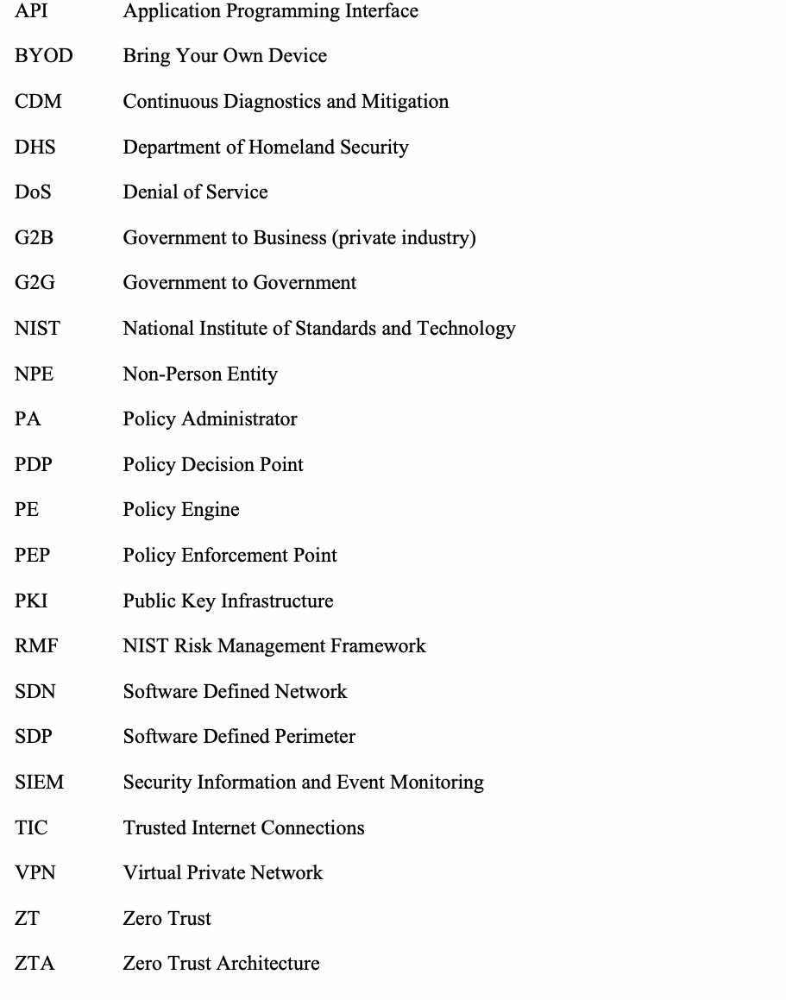
| API | Application Programming Interface（アプリケーションプログラミングインターフェース） |
| BYOD | Bring Your Own Device（私物端末の業務利用） |
| CDM | Continuous Diagnostics and Mitigation（継続的な診断と緩和） |
| DHS | Department of Homeland Security（国土安全保障省） |
| DoS | Denial of Service（サービス妨害） |
| G2B | Government to Business (private industry)（政府対企業〔民間産業〕） |
| G2G | Government to Government（政府対政府） |
| NIST | National Institute of Standards and Technology（米国国立標準技術研究所） |
| NPE | Non-Person Entity（非人間エンティティ） |
| PA | Policy Administrator（ポリシー管理者） |
| PDP | Policy Decision Point（ポリシー決定ポイント） |
| PE | Policy Engine（ポリシーエンジン） |
| PEP | Policy Enforcement Point（ポリシー適用ポイント） |
| PKI | Public Key Infrastructure（公開鍵基盤） |
| RMF | NIST Risk Management Framework（NISTリスクマネジメントフレームワーク） |
| SDN | Software Defined Network（ソフトウェア定義ネットワーク） |
| SDP | Software Defined Perimeter（ソフトウェア定義ペリメーター） |
| SIEM | Security Information and Event Monitoring（セキュリティ情報およびイベント監視） |
| TIC | Trusted Internet Connections（信頼できるインターネット接続） |
| VPN | Virtual Private Network（仮想プライベートネットワーク） |
| ZT | Zero Trust（ゼロトラスト） |
| ZTA | Zero Trust Architecture（ゼロトラストアーキテクチャ） |
Appendix B—Identified Gaps in the Current State-of-the-Art in ZTA
付録B—ZTAにおける現在の最先端技術で特定されたギャップ
The current maturity of zero trust components and solutions was surveyed during the research conducted in the development of this document. This survey concluded that the current state of the ZTA ecosystem is not mature enough for widespread adoption. While it is possible to use ZTA strategies to plan and deploy an enterprise environment, there is no single solution that provides all the necessary components. Also, few ZTA components available today can be used for all of the various workflows present in an enterprise.
ゼロトラストコンポーネントおよびソリューションの現在の成熟度は、本書の策定において実施された調査の中で調査された。この調査では、ZTAエコシステムの現状は広範な採用に向けて十分に成熟していないと結論付けられた。ZTA戦略を用いてエンタープライズ環境を計画および展開することは可能であるが、必要なコンポーネントをすべて提供する単一のソリューションは存在しない。また、現在利用可能なZTAコンポーネントの中で、エンタープライズ内に存在する多様なワークフローのすべてに使用できるものはほとんどない。
The following is a summary of identified gaps in the ZTA ecosystem and areas that need further investigation. Some of these areas have some foundation of work, but how ZTA tenets change these areas is not well-known as there is not enough experience with diverse ZTA-focused enterprise environments.
以下は、ZTAエコシステムにおいて特定されたギャップと、さらなる調査が必要な領域の要約である。これらの領域の一部には一定の研究・作業基盤が存在するものの、多様なZTA中心のエンタープライズ環境に関する十分な経験がないため、ZTAの基本原則がこれらの領域をどのように変化させるかについては十分に知られていない。
B.1
B.1
Technology Survey
技術調査
Multiple vendors were invited to present their products and views on zero trust. The goal of this survey was to identify missing pieces that prevent agencies from moving to a zero trust based enterprise infrastructure now or maintaining an existing ZTA implementation. These gaps can be categorized into immediate deployment (immediate or short term), systemic gaps that affect maintenance or operations (short or midterm), and missing knowledge (areas for future research). They are summarized in Table B-1.
複数のベンダーが招待され、ゼロトラストに関する製品および見解を発表した。この調査の目的は、政府機関がゼロトラストに基づくエンタープライズインフラストラクチャへ現在移行すること、または既存のZTA実装を維持することを妨げている不足要素を特定することであった。これらのギャップは、即時展開（即時または短期的）、保守や運用に影響を与えるシステム的なギャップ（短期的または中期的）、および不足している知見（将来の研究領域）に分類できる。これらは表B-1に要約されている。
Table B-1: Summary of Identified Deployment Gaps
表B-1：特定された展開ギャップの要約
| Category | Example Questions | Identified Gaps |
|---|---|---|
| Immediate deployment |
|
|
| Systemic |
|
|
| Areas needing more research |
|
|
原本PDFの抜粋画像
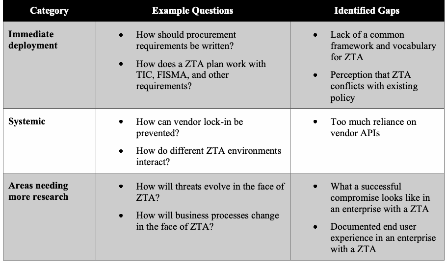
| カテゴリ | 質問例 | 特定されたギャップ |
|---|---|---|
| 即時展開 |
|
|
| システム的 |
|
|
| さらなる研究が必要な領域 |
|
|
原本PDFの抜粋画像
原本PDFの抜粋画像
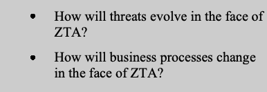
B.2
B.2
Gaps that Prevent an Immediate Move to ZTA
ZTAへの即時移行を妨げるギャップ
These are the issues that are slowing adoption of a ZTA at present. These were classified as immediate issues, and no thought of future maintenance or migration was considered for this category. A forward-thinking enterprise may also consider the maintenance category to be of immediate concern in preventing the initial deployment of ZTA components, but these issues are considered a separate category for this analysis.
これらは、現在ZTAの採用を遅らせている課題である。これらは即時の課題として分類され、このカテゴリでは将来の保守や移行に関する検討は考慮されなかった。先見性のあるエンタープライズは、ZTAコンポーネントの初期展開を妨げる要因として保守カテゴリも即時の懸念事項と見なす可能性があるが、本分析ではこれらの課題は別のカテゴリとして扱われる。
B.2.1 Lack of Common Terms for ZTA Design, Planning, and Procurement
B.2.1 ZTAの設計、計画、および調達に関する共通用語の欠如
Zero trust as a strategy for the design and deployment of enterprise infrastructure is still a forming concept. Industry has not yet coalesced around a single set of terms or concepts to describe ZTA components and operations. This makes it difficult for organizations (e.g., federal agencies) to develop coherent requirements and policies for designing zero trust enterprise infrastructure and procuring components.
エンタープライズインフラストラクチャの設計および展開のための戦略としてのゼロトラストは、依然として形成段階の概念である。業界は、ZTAのコンポーネントや運用を記述するための単一の用語セットや概念群の周りにまだ統一されていない。このため、組織（連邦機関など）がゼロトラストエンタープライズインフラストラクチャの設計およびコンポーネント調達のための首尾一貫した要件やポリシーを策定することが困難になっている。
The driver for Sections 2.1 and 3.1 is an initial attempt to form a neutral base of terms and concepts to describe ZTA. The abstract ZTA components and deployment models were developed to serve as basic terms and ways to think about ZTA. The goal is to provide a common way to view, model, and discuss ZTA solutions when developing enterprise requirements and performing market surveys. The above sections may prove to be incomplete as more experience is gained with ZTA in federal agencies, but they currently serve as a base for a common conceptual framework.
セクション2.1および3.1の動機は、ZTAを説明するための中立的な用語および概念の基盤を形成する最初の試みである。抽象的なZTAコンポーネントおよび展開モデルは、ZTAに関する基本的な用語および考え方として機能するように策定された。その目標は、エンタープライズの要件を策定し、市場調査を実施する際に、ZTAソリューションを捉え、モデル化し、議論するための共通の方法を提供することである。連邦政府機関においてZTAの経験が蓄積されるにつれて、上記のセクションは不完全であることが判明する可能性があるが、現在は共通の概念フレームワークの基盤として機能している。
B.2.2 Perception that ZTA Conflicts with Existing Federal Cybersecurity Policies
B.2.2 ZTAが既存の連邦サイバーセキュリティポリシーと矛盾するという認識
There is a misconception that ZTA is a single framework with a set of solutions that are incompatible with the existing view of cybersecurity. Zero trust should instead be viewed as an evolution of current cybersecurity strategies as many of the concepts and ideas have been circulating for a long time. Federal agencies have been encouraged to take a more zero trust approach to cybersecurity through existing guidance (see Section 6). If an agency has a mature ID management system and robust CDM capabilities in place, it is on the road to a ZTA (see Section 7.3). This gap is based on a misconception of ZTA and how it has evolved from previous cybersecurity paradigms.
ZTAは、サイバーセキュリティの既存の見解と互換性のない一連のソリューションを備えた単一のフレームワークであるという誤解が存在する。概念やアイデアの多くは長い間流通してきたため、ゼロトラストはむしろ現在のサイバーセキュリティ戦略の進化形と見なされるべきである。連邦政府機関は、既存のガイダンスを通じて、サイバーセキュリティに対してよりゼロトラストなアプローチをとることが奨励されてきた（セクション6を参照）。機関が成熟したID管理システムと堅牢なCDM機能を備えている場合、それはZTAへの道のりにある（セクション7.3を参照）。このギャップは、ZTAに関する誤解、およびそれが以前のサイバーセキュリティパラダイムからどのように進化したかについての誤解に基づいている。
B.3
B.3
Systemic Gaps that Impact ZTA
ZTAに影響を与えるシステム的ギャップ
These are the gaps that affect initial implementation and deployment of ZTA and continued operation/maturity. These gaps could slow the adoption of ZTA in agencies or result in fragmentation of the ZTA component industry. Systemic gaps are areas where open standards (produced either by a standards development organization [SDO] or industry consortium) can help.
これらは、ZTAの初期の実装および展開、ならびに継続的な運用/成熟度に影響を与えるギャップである。これらのギャップは、機関におけるZTAの採用を遅らせたり、ZTAコンポーネント業界の細分化をもたらしたりする可能性がある。システム的ギャップとは、（標準化団体[SDO]または業界コンソーシアムのいずれかによって作成された）オープンスタンダードが役立つ可能性のある領域である。
B.3.3 Standardization of Interfaces Between Components
B.3.3 コンポーネント間のインターフェースの標準化
During the technology survey, it became apparent that no one vendor offers a single solution that will provide zero trust. Furthermore, it might not be desirable to use a single-vendor solution to achieve zero trust and thereby risk vendor lock-in. This leads to interoperability within components not only at the time of purchase but also over time.
技術調査の中で、ゼロトラストを提供する単一のソリューションを提供しているベンダーは存在しないことが明らかになった。さらに、ゼロトラストを達成するために単一ベンダーのソリューションを使用して、それによってベンダーロックインのリスクを冒すことは望ましくない可能性がある。このことは、購入時だけでなく長期にわたるコンポーネント内の相互運用性へとつながる。
The spectrum of components within the wider enterprise is vast, with many products focusing on a single niche within zero trust and relying on other products to provide either data or some service to another component (e.g., integration of MFA for resource access). Vendors too often rely on proprietary APIs provided by partner companies rather than standardized, vendor-independent APIs to achieve this integration. The problem with this approach is that these APIs are proprietary and single-vendor controlled. The controlling vendor can change the API behavior, and integrators are required to update their products in response. This requires close partnerships between communities of vendors to ensure early notification of modifications within APIs, which may affect compatibility between products. This adds an additional burden on vendors and consumers: vendors need to expend resources to change their products, and consumers need to apply updates to multiple products when one vendor makes a change to its proprietary API. Additionally, vendors are required to implement and maintain wrappers for each partner component to allow maximum compatibility and interoperability. For example, many MFA product vendors are required to create a different wrapper for each cloud provider or identity management system to be usable in different kinds of client combinations.
より広範なエンタープライズにおけるコンポーネントの範囲は非常に広く、多くの製品がゼロトラスト内の単一のニッチ領域に焦点を当て、別のコンポーネントにデータまたは何らかのサービスを提供するために他の製品に依存している（例：リソースアクセスのためのMFAの統合）。ベンダーは、この統合を実現するために、標準化されたベンダー非依存のAPIではなく、パートナー企業が提供するプロプライエタリなAPIに依存することがあまりにも多い。このアプローチの問題点は、これらのAPIがプロプライエタリであり、単一のベンダーによって制御されていることである。管理側のベンダーはAPIの動作を変更することが可能であり、インテグレーターはそれに応じて自社製品を更新することを求められる。そのため、製品間の互換性に影響を及ぼす可能性があるAPIの変更を早期に通知できるように、ベンダーのコミュニティ間で緊密なパートナーシップを結ぶことが必要となる。これはベンダーと利用者の双方にさらなる負担をもたらす。すなわち、ベンダーは自社製品を変更するためにリソースを費やす必要があり、利用者はあるベンダーが自社のプロプライエタリなAPIを変更した際に、複数の製品にアップデートを適用する必要がある。さらに、最大限の互換性と相互運用性を確保するために、ベンダーは各パートナーコンポーネントに対するラッパーを実装および維持することが求められる。例えば、多くのMFA製品ベンダーは、さまざまな種類のクライアントの組み合わせで使用できるようにするために、クラウドプロバイダーやID管理システムごとに異なるラッパーを作成することが求められている。
On the customer side, this generates additional problems when developing requirements for purchasing products. There are no standards that purchasers can rely on to identify compatibility between products. Hence, it is very difficult to create a multiyear road map for moving into ZTA because it is impossible to identify a minimum set of compatibility requirements for components.
顧客側では、このことが製品を購入するための要件を策定する際に追加の問題を引き起こす。製品間の互換性を確認するために購入者が依拠できる標準は存在しない。したがって、コンポーネントに対する互換性要件の最小セットを特定することが不可能であるため、ZTAへ移行するための複数年のロードマップを作成することは非常に困難である。
B.3.4 Emerging Standards that Address Overreliance on Proprietary APIs
B.3.4 プロプライエタリなAPIへの過度な依存に対処する新興標準
As there is no single solution to developing a ZTA, there is no single set of tools or services for a zero trust enterprise. Thus, it is impossible to have a single protocol or framework that enables an enterprise to move to a ZTA. Currently, there is a wide variety of models and solutions seeking to become the leading authority of ZTA.
ZTAを構築するための単一のソリューションが存在しないのと同様に、ゼロトラストエンタープライズ向けの単一のツールやサービスのセットも存在しない。したがって、エンタープライズがZTAへ移行することを可能にする単一のプロトコルやフレームワークを持つことは不可能である。現在、多種多様なモデルやソリューションが、ZTAの主導的な権威となることを目指している。
This indicates that there is an opportunity for a set of open, standardized protocols or frameworks to be developed to aid organizations in migrating to a ZTA. SDOs like the Internet Engineering Task Force (IETF) have specified protocols that may be useful in exchanging threat information (called XMPP-Grid [1]). The Cloud Security Alliance (CSA) has produced a framework for Software Defined Perimeter (SDP) [2] that may also be useful in ZTA. Efforts should be directed toward surveying the current state of ZTA-related frameworks or the protocols necessary for a useful ZTA and toward identifying places where work is needed to produce or improve these specifications.
このことは、組織がZTAへ移行するのを支援するために、一連のオープンで標準化されたプロトコルやフレームワークを策定する機会が存在することを示している。Internet Engineering Task Force（IETF）などのSDOは、脅威情報の交換に有用となり得るプロトコル（XMPP-Grid [1]と呼ばれる）を規定している。Cloud Security Alliance（CSA）は、Software Defined Perimeter（SDP）[2]のフレームワークを作成しており、これもZTAにおいて有用である可能性がある。有用なZTAに必要なプロトコルやZTA関連フレームワークの現状を調査すること、およびこれらの仕様を作成または改善するために作業が必要な箇所を特定することに向けて、取り組みが進められるべきである。
B.4
B.4
Knowledge Gaps in ZTA and Future Areas of Research
ZTAにおける知識のギャップと今後の研究分野
The gaps listed here do not hinder an organization from adopting a ZTA for its enterprise. These are gray areas in knowledge about operational ZTA environments, and most arise from a lack of time and experience with mature zero trust deployments. These are areas of future work for researchers.
ここに挙げられたギャップは、組織が自らのエンタープライズにZTAを採用することを妨げるものではない。これらは運用中のZTA環境に関する知識のグレーゾーンであり、その大部分は、成熟したゼロトラストの展開に関する時間と経験の不足から生じている。これらは研究者にとって今後の課題となる領域である。
B.4.5 Attacker Response to ZTA
B.4.5 ZTAに対する攻撃者の反応
A properly implemented ZTA for an enterprise will improve the enterprise’s cybersecurity posture over traditional network perimeter-based security. The tenets of ZTA aim to reduce the exposure of resources to attackers and minimize or prevent lateral movement within an enterprise should a host asset be compromised.
エンタープライズ向けに適切に実装されたZTAは、従来のネットワーク境界型セキュリティと比べて、そのエンタープライズのサイバーセキュリティ態勢を向上させる。ZTAの原則は、攻撃者に対するリソースの露出を減らし、万一ホスト資産が侵害された場合でも、エンタープライズ内でのラテラルムーブメント（横方向移動）を最小限に抑えるか、あるいは防止することを目指している。
However, determined attackers will not sit idle but will instead change behavior in the face of ZTA. The open issue is how the attacks will change. One possibility is that attacks aimed at stealing credentials will be expanded to target MFA (e.g., phishing, social engineering). Another possibility is that in a hybrid ZTA/perimeter-based enterprise, attackers will focus on the business processes that have not had ZTA tenets applied (i.e., follow traditional network perimeter-based security)—in effect, targeting the low-hanging fruit in an attempt to gain some foothold in the ZTA business process.
しかし、決意の固い攻撃者は何もしないでいるわけではなく、ZTAに直面して行動を変えるだろう。未解決の問題は、攻撃がどのように変化するかである。一つの可能性として、認証情報の窃盗を目的とした攻撃がMFAを標的とするように拡大されること（例：フィッシング、ソーシャルエンジニアリング）が挙げられる。もう一つの可能性として、ZTAと境界型のハイブリッドのエンタープライズにおいて、攻撃者はZTAの原則が適用されていない（すなわち、従来のネットワーク境界型セキュリティに従っている）ビジネスプロセスに焦点を当てること—実質的には、ZTAのビジネスプロセスにおいて足がかりを得ようとして、達成しやすい標的（low-hanging fruit）を狙うこと—が挙げられる。
As ZTA matures, more deployments are seen, and experience is gained, the effectiveness of ZTA in shrinking the attack surface of resources may become apparent. The metrics of success of ZTA over older cybersecurity strategies will also need to be developed.
ZTAが成熟し、より多くの展開が見られ、経験が蓄積されるにつれて、リソースの攻撃対象領域を縮小する上でのZTAの有効性が明らかになる可能性がある。従来のサイバーセキュリティ戦略と比較したZTAの成功指標も策定する必要があるだろう。
B.4.6 User Experience in a ZTA Environment
B.4.6 ZTA環境におけるユーザーエクスペリエンス
There has not been a rigorous examination of how end users act in an enterprise that is using a ZTA. This is mainly due to the lack of large ZTA use cases available for analysis. There have, however, been studies on how users react to MFA and other security operations that are part of a ZTA enterprise, and this work could form the basis of predicting end user experience and behavior when using ZTA workflows in an enterprise.
ZTAを使用しているエンタープライズにおいてエンドユーザーがどのように行動するかについて、厳密な調査はまだ行われていない。これは主に、分析に利用できる大規模なZTAのユースケースが不足しているためである。しかし、ZTAエンタープライズの一部であるMFAやその他のセキュリティ運用に対してユーザーがどのように反応するかについての研究は存在しており、この研究は、エンタープライズでZTAワークフローを使用する際のエンドユーザーのエクスペリエンスや行動を予測するための基礎となり得る。
One set of studies that can predict how ZTA affects end user experience is the work done on the use of MFA in enterprises and security fatigue. Security fatigue [3] is the phenomenon wherein end users are confronted with so many security policies and challenges that it begins to impact their productivity in a negative way. Other studies show that MFA may alter user behavior, but the overall change is mixed [4] [5]. Some users readily accept MFA if the process is streamlined and involves devices they are used to using or having with them (e.g., applications on a smartphone). However, some users resent having to use personally-owned devices for business processes or feel that they are being constantly monitored for possible violations of IT policies.
ZTAがエンドユーザーのエクスペリエンスにどのように影響するかを予測できる一連の研究として、エンタープライズにおけるMFAの利用およびセキュリティ疲労（security fatigue）に関して行われた研究が挙げられる。セキュリティ疲労 [3] とは、エンドユーザーが非常に多くのセキュリティポリシーやチャレンジ（認証等の要求）に直面し、それが生産性に悪影響を及ぼし始める現象である。他の研究では、MFAがユーザー行動を変化させる可能性があるものの、全体的な変化は一様ではないことが示されている [4] [5]。一部のユーザーは、プロセスが合理化されており、使い慣れている、または携行しているデバイス（例：スマートフォン上のアプリケーション）が含まれている場合、MFAを容易に受け入れる。しかし、ビジネスプロセスのために個人所有のデバイスを使用しなければならないことに憤慨したり、ITポリシー違反の可能性について絶えず監視されていると感じたりするユーザーもいる。
B.4.7 Resilience of ZTA to Enterprise and Network Disruption
B.4.7 エンタープライズおよびネットワークの中断に対するZTAの耐障害性
The survey of the ZTA vendor ecosystem displayed the wide range of infrastructure that an enterprise deploying a ZTA would need to consider. As previously noted, there is no single provider of a full zero trust solution at this time. As a result, enterprises will purchase several different services and products, which can lead to a web of dependencies for components. If one vital component is disrupted or unreachable, there could be a cascade of failures that impact one or multiple business processes.
ZTAベンダーエコシステムの調査により、ZTAを展開するエンタープライズが考慮する必要のあるインフラの広範さが明らかになった。前述のとおり、現時点では完全なゼロトラストソリューションを提供する単一のプロバイダーは存在しない。その結果、エンタープライズはいくつかの異なるサービスや製品を購入することになり、コンポーネントの依存関係の網につながる可能性がある。1つの極めて重要なコンポーネントが中断されたり到達不能になったりした場合、1つまたは複数のビジネスプロセスに影響を及ぼす連鎖的な障害が発生する可能性がある。
Most products and services surveyed relied on a cloud presence to provide robustness, but even cloud services have been known to become unreachable through either an attack or simple error. When this happens, key components used to make access decisions may be unreachable or may not be able to communicate with other components. For example, PE and PA components located in a cloud may be reachable during a distributed denial-of-service (DDoS) attack but may not be able to reach all PEPs located with resources. Research is needed on discovering the possible choke points of ZTA deployment models and the impact on network operations when a ZTA component is unreachable or has limited reachability.
調査対象となったほとんどの製品およびサービスは、堅牢性を提供するためにクラウドプレゼンスに依存していたが、クラウドサービスであっても、攻撃または単純なエラーのいずれかによって到達不能になることが知られている。これが発生した場合、アクセスの決定を行うために使用される主要コンポーネントが到達不能になったり、他のコンポーネントと通信できなくなったりする可能性がある。例えば、クラウド内に配置されたPEおよびPAコンポーネントは、分散型サービス拒否（DDoS）攻撃の間でも到達可能であるかもしれないが、リソースとともに配置されたすべてのPEPに到達できない場合がある。ZTA展開モデルの潜在的なチョークポイントや、ZTAコンポーネントが到達不能または到達性が制限された場合のネットワーク運用への影響を発見するための研究が必要である。
The continuity of operations (COOP) plans for an enterprise will likely need revision when adopting a ZTA. A ZTA makes many COOP factors easier as remote workers may have the same access to resources that they had on-premises. However, policies like MFA may also have a negative impact if users are not properly trained or lack experience. Users may forget or not have access to tokens and enterprise devices during an emergency, and that will impact the speed and effectiveness of enterprise business processes.
企業の業務継続（COOP）計画は、ZTAを採用する際に改訂が必要となる可能性が高い。リモートワーカーがオンプレミスで持っていたのと同様のリソースへのアクセスを持てるようになるため、ZTAは多くのCOOP要因を容易にする。しかし、MFAのようなポリシーは、ユーザーが適切にトレーニングされていないか、経験が不足している場合、悪影響を及ぼす可能性もある。緊急時にユーザーがトークンや企業デバイスを忘れたり、それらにアクセスできなかったりする可能性があり、それが企業の業務プロセスのスピードと有効性に影響を与えることになる。
B.5
B.5
References
参考文献
| [1] | Cam-Winget N (ed.), Appala S, Pope S, Saint-Andre P (2019) Using Extensible Messaging and Presence Protocol (XMPP) for Security Information Exchange. (Internet Engineering Task Force (IETF)), IETF Request for Comments (RFC) 8600. https://doi.org/10.17487/RFC8600 |
| [2] | Software Defined Perimeter Working Group “SDP Specification 1.0” Cloud Security Alliance. April 2014. |
| [3] | Stanton B, Theofanos MF, Spickard Prettyman S, Furman S (2016) Security Fatigue. IT Professional 18(5):26-32. https://doi.org/10.1109/MITP.2016.84 |
| [4] | Strouble D, Shechtman GM, Alsop AS (2009) Productivity and Usability Effects of Using a Two-Factor Security System. SAIS 2009 Proceedings (AIS, Charleston, SC), p 37. Available at http://aisel.aisnet.org/sais2009/37 |
| [5] | Weidman J, Grossklags J (2017) I Like It but I Hate It: Employee Perceptions Towards an Institutional Transition to BYOD Second-Factor Authentication. Proceedings of the 33rd Annual Computer Security Applications Conference (ACSAC 2017) (ACM, Orlando, FL), pp 212-224. https://doi.org/10.1145/3134600.3134629 |
原本PDFの抜粋画像
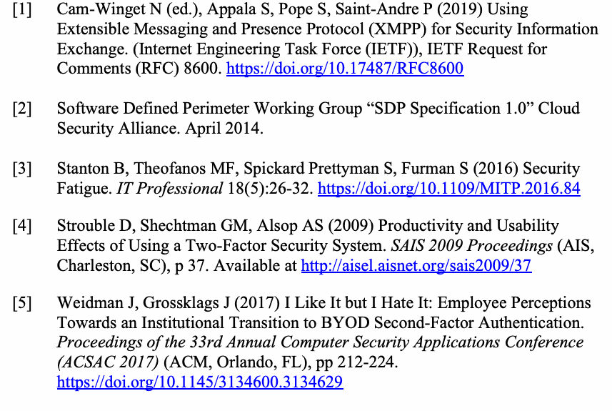
| [1] | Cam-Winget N (ed.), Appala S, Pope S, Saint-Andre P (2019) Using Extensible Messaging and Presence Protocol (XMPP) for Security Information Exchange. (Internet Engineering Task Force (IETF)), IETF Request for Comments (RFC) 8600. https://doi.org/10.17487/RFC8600 |
| [2] | Software Defined Perimeter Working Group “SDP Specification 1.0” Cloud Security Alliance. April 2014. |
| [3] | Stanton B, Theofanos MF, Spickard Prettyman S, Furman S (2016) Security Fatigue. IT Professional 18(5):26-32. https://doi.org/10.1109/MITP.2016.84 |
| [4] | Strouble D, Shechtman GM, Alsop AS (2009) Productivity and Usability Effects of Using a Two-Factor Security System. SAIS 2009 Proceedings (AIS, Charleston, SC), p 37. Available at http://aisel.aisnet.org/sais2009/37 |
| [5] | Weidman J, Grossklags J (2017) I Like It but I Hate It: Employee Perceptions Towards an Institutional Transition to BYOD Second-Factor Authentication. Proceedings of the 33rd Annual Computer Security Applications Conference (ACSAC 2017) (ACM, Orlando, FL), pp 212-224. https://doi.org/10.1145/3134600.3134629 |